Vat. gr. 754 - Transcription (Ps 1 to Ps 30)
transcribed by
encoded by
FWF Project 32988
Available under the Creative Commons Attribution 4.0 International (CC BY 4.0)
2024-01-19
The facsimiles of the manuscript are available: Vat. gr. 754
The pinakes identifier of the manuscript is: 67385
The content of the manuscript is:
- f. 3r–36v: Prolegomena in Psalmos
- f. 37r–356v: Catena in Psalmos 1–150
- f. 356v: Ps 151
- f. 357r–395r: Catena in Odas (Odes both from the Old and New Testaments)
- f. 395r–395v: Oratio Manasse, Hymnus matutinus, Trisagius
Form: codex
Material: parchment
Extent: 350 x 255 mm
Layout of the pages:

- 395 ff. (50 quires), 35 lines per page (full page). Within the Psalmcatena 37 lines per page are traced but more than 37 are written. Folios 3r–36v in disorder. 3 folios missing.
Scripts:
- Minuscule letters: prolegomena, commentary fragments, glosses, texts on the last folio.
- Larger minuscule letters: Bible text, ektheseis.
- Capitals (majuscules): psalm inscriptions, hexaplaric variants, a number of glosses, author names and titles of works (if quoted at the beginning of a text).
Evagrius’ Scholia are counted with minuscules that begin anew with each Psalm. The 2161 “Athanasian” Scholia are counted with majuscules (from 1 to 100) and organized into 22 hundrets. These counting letters are repeated along the biblical verses.
Hexaplaric variants, glosses and commentary fragments are linked to the biblical verses through linking signs.
Decoration: Decoration or rubrication: absent.
Written in the 10th century.
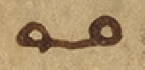LINKING SIGN 1
 LINKING SIGN 2
LINKING SIGN 2
 LINKING SIGN 3
LINKING SIGN 3
 LINKING SIGN 4
LINKING SIGN 4
 LINKING SIGN 5
LINKING SIGN 5
 LINKING SIGN 6
LINKING SIGN 6
 LINKING SIGN 7
LINKING SIGN 7
 LINKING SIGN 8
LINKING SIGN 8
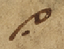LINKING SIGN 9
 LINKING SIGN 10
LINKING SIGN 10
 LINKING SIGN 11
LINKING SIGN 11
 LINKING SIGN 12
LINKING SIGN 12
 LINKING SIGN 13
LINKING SIGN 13
 LINKING SIGN 14
LINKING SIGN 14
 LINKING SIGN 15
LINKING SIGN 15
 LINKING SIGN 16
LINKING SIGN 16
 LINKING SIGN 17
LINKING SIGN 17
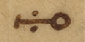LINKING SIGN 18
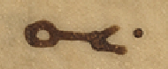LINKING SIGN 19
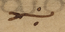LINKING SIGN 20
 LINKING SIGN 21
LINKING SIGN 21
 LINKING SIGN 22
LINKING SIGN 22
 LINKING SIGN 23
LINKING SIGN 23
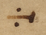LINKING SIGN 24
 LINKING SIGN 25
LINKING SIGN 25
 LINKING SIGN 26
LINKING SIGN 26
 LINKING SIGN 27
LINKING SIGN 27
 LINKING SIGN 28
LINKING SIGN 28
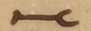LINKING SIGN 29
 LINKING SIGN 30
LINKING SIGN 30
 LINKING SIGN 31
LINKING SIGN 31
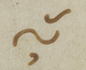LINKING SIGN 32
 LINKING SIGN 33
LINKING SIGN 33
 LINKING SIGN 34
LINKING SIGN 34
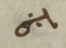LINKING SIGN 35
 LINKING SIGN 36
LINKING SIGN 36
 LINKING SIGN 37
LINKING SIGN 37
 LINKING SIGN 38
LINKING SIGN 38
 LINKING SIGN 39
LINKING SIGN 39
 LINKING SIGN 40
LINKING SIGN 40
 LINKING SIGN 41
LINKING SIGN 41
 LINKING SIGN 42
LINKING SIGN 42
 LINKING SIGN 43
LINKING SIGN 43
 LINKING SIGN 44
LINKING SIGN 44
 LINKING SIGN 45
LINKING SIGN 45
 LINKING SIGN 46
LINKING SIGN 46
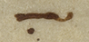LINKING SIGN 47
 LINKING SIGN 48
LINKING SIGN 48
 LINKING SIGN 49
LINKING SIGN 49
 LINKING SIGN 50
LINKING SIGN 50
 LINKING SIGN 51
LINKING SIGN 51
 LINKING SIGN 52
LINKING SIGN 52
 LINKING SIGN 53
LINKING SIGN 53
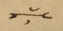LINKING SIGN 54
 LINKING SIGN 55
LINKING SIGN 55
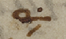LINKING SIGN 56
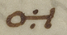LINKING SIGN 57
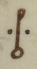LINKING SIGN 58
 LINKING SIGN 59
LINKING SIGN 59
LINKING SIGN 60
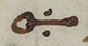LINKING SIGN 61
 LINKING SIGN 62
LINKING SIGN 62
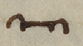LINKING SIGN 63
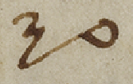LINKING SIGN 64
 LINKING SIGN 65
LINKING SIGN 65
 LINKING SIGN 66
LINKING SIGN 66
 LINKING SIGN 67
LINKING SIGN 67
 LINKING SIGN 68
LINKING SIGN 68
 LINKING SIGN 69
LINKING SIGN 69
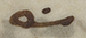LINKING SIGN 70
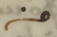LINKING SIGN 71
 LINKING SIGN 72
LINKING SIGN 72
 LINKING SIGN 73
LINKING SIGN 73
 LINKING SIGN 74
LINKING SIGN 74
 LINKING SIGN 75
LINKING SIGN 75
 LINKING SIGN 76
LINKING SIGN 76
 LINKING SIGN 77
LINKING SIGN 77
 Abbreviation for καὶ
Abbreviation for καὶ
[middle column] [hypothesis]
(3) [left margin] Α [top of the page] [= Athanasius, exp. in Ps 1,1 - quotation (→ Edition)][top of the page] [hypothesis]
(1) [left margin] Ι [top of the page] [= Athanasius, exp. in Ps 2 - quotation (→ Edition)]Commentary fragment: Gregorius Nyssenus - Gregorius Nyss., Ps. inscr. II 11 (121,11–122,15 McDonough) in Ps 7,1
Lemma: Ps 7,1
θωθέντων αὐτῷ χρηστῶν διὰ τῶν λόγων Χουσὶ. τῷ θεῷ τὴν αἰτίαν ἀνατιθεὶς. ταύτην τὴν εὐχαριστίαν πεποίηται• περιττὸν δ’ ἂν εἴη· τὰς ἱστορίας δι’ ἀκριβείας σοι ἐκτίθεσθαι· πῶς πιστὸς ὢν τῷ Δαυῒδ ἐν τοῖς ὑπασπισταῖς οὗτος ὁ Χουσὶ. ἐν τοῖς φίλοις τοῦ Ἀβεσσαλὼμ καταμίγνυται· καὶ πιθανώτερος γίνεται τῷ τυράννῳ. τῆς τοῦ Ἀχειτόφελ συμβουλῆς· ὅθεν συνέβη τούτου κατὰ τὴν εἰσήγησιν τῆς γνώμης κατακρατήσαντος αὐτοῦ. ὑφ’ ἑαυτοῦ καταπνιγεὶς τὸν κατὰ τοῦ Δαυῒδ τῷ Ἀβεσσαλὼμ συμβουλεύσαντα· καὶ μετ’ ὀλίγα: Ἡ μὲν τῇ ἱστορίᾳ. ἡ δὲ τῇ ψαλμῳδίᾳ ἐγγέγραπται· ἡμῖν δὲ σκοπός ἐστι τῶν ἐν τάξει τῶν ψαλμῶν εἱρμὸν κατανοῆσαι. δι’ οὗ τῷ ἀγαθῷ προσαγόμεθα· οὐκοῦν τὴν ἐνταῦθα γνώμην. τὴν ἀναιρετικὴν τοῦ ἐπιβουλεύοντος ἡμῖν κατανοήσωμεν· τίς οὖν ἐστιν αὕτη; τὸ ἴσον εἰς κακίαν ἡγεῖσθαι· ἄρχειν τε ἀδικίας καὶ ἀμύνεσθαι τὸν ἀπάρξαντα· τιμᾶται γὰρ ἑαυτῷ τῶν ἐσχάτων· καὶ τῆς καθ’ ἑαυτοῦ τιμωρίας ὁριστὴς γίνεται. εἰ εὑρεθείη κακοῦ τὸ κακὸν ὥσπερ ἐν συναλλάγματι διαμείψας· καὶ ἀναδοὺς τοῖς προπαρασχομένοις, ὃ ἔλαβεν· καὶ οὕτως μετὰ τοὺς ἀγῶνας τούτους. πάλιν νικητὴς ἀναδείκνυται· διαδέχεται γὰρ ἐπιγραφὴ. τὸ ὑπὲρ τῶν ληνῶν προ
Attribution: Γρη(γορίου) Νύ(σσης)
Commentary fragment: (Evagrius) - Evagrius, schol. nr. α´ in Ps 7,5a (308 Rondeau – Géhin – Cassin)
Lemma: Ps 7,5a
Πρὸς ἀμνησικακίαν ἀναγκαῖον τὸ ῥητόν τοῦτο: –
Attribution: α´
Commentary fragment: (Athanasius) - Athanasius, exp. in Ps 7,4–5 (→ Edition)
Lemma: Ps 7,4a
Τὸ ἀμνησίκακον προβάλλεται· ἐκκαλούμενος δι’ αὐτοῦ εἰς ἔλεον τὸν θεόν:
Attribution: ΟΔ
Commentary fragment: (Athanasius) - Athanasius, exp. in Ps 7,2–3 (→ Edition)
Lemma: Ps 7,2a
Ἐπειδὴ ἀνθρώπῳ φησὶ περὶ σωτηρίας οὐ θαρρῶ. εἰ καὶ τοῦ Χουσὶ οἱ λόγοι καλοί: σῶσόν με καὶ ἐκ τῶν παρόντων μὲν ἐχθρῶν. μάλιστα δὲ ἀπὸ τοῦ ἐφεδρεύοντος νοητοῦ λέοντος τῆν ἡμετέραν ψυχῆν: –
Commentary fragment: Basilius - Basilius, hom. in Ps. 7 (PG 29,232 B10–13; 232 D2–233 A2) in Ps 7,2
Lemma: Ps 7,3a (sic)
Τίς οὖν ἡ διαφορὰ τοῦ σώζεσθαι καὶ τοῦ ῥύεσθαι; ὅτι τῆς σωτηρίας μὲν κυρίως. οἱ ἀσθενοῦντες χρῄζουσιν· τοῦ ῥύεσθαι δὲ. οἱ ἐν τῇ αἰχμαλωσίᾳ κατεχόμενοι· εὔχεται οὖν περὶ τῆς ἐνταῦθα ζωῆς καὶ περὶ τῆς μελλούσης· σῶσον γάρ με φησὶν ἐνταῦθα ἀπὸ τῶν διωκόντων· ῥῦσαι δέ με ἐκεῖ. ἐν τῷ καιρῷ τῆς ἐρεύνης:
Attribution: Βασιλ(είου)
Commentary fragment: Theodoretus - Theodoretus, comm. in Ps 7,5–6 (PG 80,908 C2–D5)
Lemma: Ps 7,5a
Τῆς ἀρετῆς πολλὰ μόρια· οὐ γὰρ μόνον σωφροσύνη καὶ φρόνησις. ἀλλὰ καὶ ἀνδρεία καὶ δικαιοσύνη· ἐνταῦθα τοίνυν οὐ τὴν ἄκραν ἑαυτῷ μαρτυρεῖ. ἀλλ’ ὅτι τούτοις ἥκιστα τοὺς πολέμους ἠδικηκὼς. τὴν ἄδικον δι’ αὐτοὺς ὑπομενεῖ φυγήν· οὐ μόνον γάρ φησιν ἀδικίας οὐκ ἦρξα. ἀλλ’ οὐδὲ τοὺς ἠδικηκότας ἠνεσχόμην ἀμύνασθαι πώποτε· πολλάκις γὰρ τὸν Σαοὺλ ὑποχείριον λαβὼν. τῆς ἀδίκου δυσμενείας δίκας οὐκ ἐπραξάμην οὗ δὴ χάριν σε δέσποτα παρακαλῶ. τὰ πάντα σαφῶς ἐπιστάμενον. δικάσαί μοι δικαίως· καὶ εἴ τι τοιοῦτον δέδρακα πώποτε
Attribution: Θεοδ(ωρήτου)
Commentary fragment: Theodoretus - Theodoretus, comm. in Ps 7,5–6 (PG 80,908 C2–D5)
Lemma: Ps 7,5a
τῆς μὲν σῆς κηδεμονίας γυμνῶσαι· τοῦτο γὰρ λέγει ἀποπέσοιμι ἄρα ἀπὸ τῶν ἐχθρῶν μου κενός· ὑποχείριον δὲ τοῖς δυσμενέσιν ἐκδοῦναι ὡς ἂν μὴ μόνον τῆς παρὰ σοῦ με δόξης καὶ βασιλείας γυμνώσαιεν. ἀλλὰ καὶ καταγελάστῳ παραδοῖεν θανάτῳ· τοῦτο γὰρ ἐσήμανεν εἰρηκὼς. τὴν δόξαν μου εἰς χοῦν κατασκηνώσαι: –
Attribution: Θεοδ(ωρήτου)
Commentary fragment: Origenes - Evagrius, schol. nr. γ´ in Ps 7,6c (310 Rondeau – Géhin – Cassin)
Lemma: Ps 7,6b (sic)
Χοϊκὸς ἀντὶ ἐπουρανίου γενοίμην: –
Attribution: γ´ ωριγε(νους)
Hexaplaric variant: Symmachus, Aquila (Ps 7,7b)
Lemma: Ps 7,7c1 (καὶ ἐξεγέρθητι) sic
Ϲ ἐν χόλῳ· A ἐν ἀνυπερθεσίαις:
Commentary fragment: Origenes - Evagrius, schol. nr. δ´ in Ps 7,7b (312 Rondeau – Géhin – Cassin)
Lemma: Ps 7,7b
Ἐὰν ὑψωθῶ πάντας ἑλκύσω πρὸς ἐμαυτὸν φησὶν ὁ σωτήρ:
Attribution: δ´ ωρ(ι)γε(νους)
Commentary fragment: (Athanasius) - Athanasius, exp. in Ps 7,7b (→ Edition)
Lemma: Ps 7,7b
Τουτέστιν ἐν τοῖς κραταιοῖς τῶν ἐχθρῶν μου· πέρατα γὰρ τὰ ἄκρα δηλοῖ: –
Commentary fragment: Eusebius - Origenes, schol. (?) in Ps 7,5b (= PG 27,80 A4–6; PG 12,1180 A10–13)
Lemma: Ps 7,5b
Ὁ μὲν δίκαιος νικήσας. πλήρης ἀπὸ τῶν ἐχθρῶν ἐξέρχεται· ὁ δὲ φαῦλος. ὡς νικηθεὶς. ἀποπίπτει αὐτῶν κενὸς. καὶ οὐδὲν ἔχων πληρώματος: –
Attribution: Εὐσε(βίου)
Commentary fragment: (Athanasius) - Athanasius, exp. in Ps 7,6 (→ Edition)
Lemma: Ps 7,6a
Ὃ λέγει τοιοῦτόν ἐστιν· εἰ καὶ τό καὶ τὸ ἐποίησα. μὴ ἐλευθερωθείην τῆς ἁμαρτίας πρὸ τοῦ θανάτου: –
Attribution: ΟΕ
Commentary fragment: Origenes - Evagrius, schol. nr. β´ in Ps 7,5b (310 Rondeau – Géhin – Cassin)
Lemma: Ps 7,6a (sic)
πάντες ἐλάβομεν. καὶ χάριν ἀντὶ χάριτος: διόπερ καὶ οἱ τοιοῦτοι. κάλαμοι λέγονται τρέφοντες ἐν ἑαυτοῖς τὰ θηρία· ἐπιτίμησον γάρ φησὶ τοῖς θηρίοις τοῦ καλάμου· καὶ ὁ διάβολος φησὶν ὁ ᾿Ἰὼβ. παρὰ παντοδαπὰ δένδρα κοιμᾶται· παρὰ πάπυρον καὶ βούτομον καὶ κάλαμον· αὐτὸς γὰρ βασιλεύς ἐστι πάντων τῶν ἐν τοῖς ὕδασι: –
Attribution: β´ ωριγε(νους)
Commentary fragment: Eusebius - Origenes, schol. (?) in Ps 7,6b–c (PG 12,1180 B10–15; PG 23,124 B12–C2)
Lemma: Ps 7,6b
Ἡ ζωὴ τοῦ ἔτι τὴν εἰκόνα τοῦ χοϊκοῦ φοροῦντος. καταπεπάτηται ὑπὸ τοῦ ἐχθροῦ εἰς γῆν· οὕτως δὲ κἂν δοξάζεσθαί ποτε δοκῇ. κατεσκήνωσεν αὐτοῦ ἡ δόξα εἰς χοῦν· ὡς τῶν τοιούτων διὰ δόξαν· καὶ τὸν παρ’ αὐτὸν ἔπαινον. ἢ τὴν παρ’ αὐτοῖς ἀποδοχήν: –
Attribution: Εὐσε(βίου)
Commentary fragment: (Athanasius) - Athanasius, exp. in Ps 7,7c1 (→ Edition)
Lemma: Ps 7,7c1
Σαφῶς περὶ τῆς θεοφανείας τοῦ σωτῆρος διὰ τῶν παρόντων εὐαγγελίζεται: –
Attribution: ΟZ
Commentary fragment: Hesychius - Hesychius, comm. magnus (?) in Ps 7,7c (ineditum?)
Lemma: Ps 7,7c
Ἐξεγέρθητι φησὶν ἐλθὲ ἐν προστάγματι τῆς κατὰ σάρκα σου θεοφανείας· καὶ ἀνάστηθι ἐκ θανάτου ἐθελουσίου· καὶ τριημέρου ταφῆς. καὶ συναγωγὴ λαῶν· – οὐ τοῦ ἐμπλήκτου ἔτι ἰσραὴλ. ἀλλὰ τοῦ ἐκ περάτων εἰς πέρατα γῆς ἐθνῶν λαοῦ – κυκλώσει σε: –
Attribution: Ἡσυχ(ίου)
Commentary fragment: (Athanasius) - Athanasius, exp. in Ps 7,7c2 (→ Edition)
Lemma: Ps 7,7c2
Ἄνωθεν γὰρ διὰ τῶν πατριαρχῶν. ταύτην ἡμῖν τὴν σωτηρίαν ὑπέσχετο: –
Attribution: ΟΗ
Commentary fragment: (Athanasius) - Athanasius, exp. in Ps 7,8a (→ Edition)
Lemma: Ps 7,8a
Σαφῶς διὰ τῶν παρόντων. τῆς ἐκκλησίας τὴν εἰς αὐτὸν πίστιν δηλοῖ: –
Attribution: ΟΘ
Commentary fragment: (Athanasius) - Athanasius, exp. in Ps 7,8b–9a (→ Edition)
Lemma: Ps 7,8b-9a
Ταύτης μὲν τῆς συναγωγῆς δηλονότι· τὸ δὲ εἰς ὕψος. ἢ τὸν τίμιον αἰνίττεται σταυρὸν εἰς ὃν ἀνήνεγκεν ἡμῶν τὰς ἁμαρτίας. ἢ τὴν εἰς οὐρανοὺς ἀναφοίτησιν· ἐπορεύθη γὰρ ἐμφανισθῆναι τῷ προσώπῳ τοῦ πατρὸς ὑπὲρ ἡμῶν: –
Attribution: Π
Hexaplaric variant: Symmachus (Ps 7,9c)
Lemma: Ps 7,10a (πονηρία) sic
Ϲ ἁπλότητά μου τὴν ἐπ᾿ ἐμοί: –
Commentary fragment: Origenes - Evagrius, schol. nr. ε´ in Ps 7,10 (312 Rondeau – Géhin – Cassin)
Lemma: Ps 7,10a
Ἐὰν συντελεσθῇ ἡ πονηρία τῶν ἁμαρτωλῶν. ὁ δίκαιος κατευθύνει τὴν ὁδὸν αὐτοῦ μηκέτι πολεμούμενος ὑπ’ αὐτῶν:
Attribution: ε´ ωρ(ι)γε(νους)
Hexaplaric variant: Aquila, Symmachus, Quinta, Sexta (Ps 7,10b)
Lemma: Ps 7,9b (κρῖνόν με) sic
A Ϲ Ε´ S´ καὶ κατευθύνει δίκαιος:
Commentary fragment: (Athanasius) - Athanasius, exp. in Ps 7,9b (→ Edition)
Lemma: Ps 7,9b–10b
Ἀξιοῖ πάλιν ἀπὸ τῶν ὄντων ἐχθρῶν σωθῆναι· ἀφ’ ὧν ἔπραξαν τὸν ἔλεον ἐκκαλούμενος: –
Attribution: ΠΑ
Commentary fragment: Anonymous - Theodoretus, comm. in Ps 7,9b–c (PG 80,909 C2–15)
Lemma: Ps 7,9b
Οὐ δικαιοσύνην ἑαυτῷ διὰ τούτων τῶν λόγων μεμαρτύρηκεν ὁ θεῖος Δαυΐδ· τἀναντία γὰρ αὐτοῦ βοῶντος ἀκούομεν· ὅτι τὴν ἀνομίαν μου ἐγὼ γινώσκω· καὶ ἡ ἁμαρτία μου ἐνώπιόν μου ἐστι διὰ παντός· καὶ εἶπον ἐξαγορεύσω κατ’ ἐμοῦ τὴν ἀνομίαν μου τῷ κυρίῳ· ἀλλὰ δικαιοσύνην. τὴν ἐν τῷ προκειμένῳ πράγματι λέγει· οὔτε γάρ φησιν τὸν Ἀβεσσαλὼμ ἠδίκηκά τι· οὔτε τὸν Ἀχιτώφελ· οὔτε τοὺς μετὰ τούτων κατ’ ἐμοῦ στρατεύοντας· κατὰ ταύτην τοίνυν τὴν δικαιοσύνην καὶ τὴν ἀκακίαν. κριθῆναι παρακαλῶ. καὶ μὴ κατὰ τὰς ἤδη παρ’ ἐμοῦ γεγενημένας πλημμελείας. αὐ
Commentary fragment: Anonymous - Theodoretus, comm. in Ps 7,9b–c (PG 80,909 C2–15)
Lemma: Ps 7,9b
τὴν καθ’ αὑτὴν κριθῆναι τὴν παροῦσαν ὑπόθεσιν ἱκετεύω. καὶ μὴ ἑτέρων νῦν δοῦναι δίκας ἁμαρτημάτων: –
Commentary fragment: Eusebius - Origenes, schol. (?) in Ps 7,10a (PG 12,1181 A4–6)
Lemma: Ps 7,10a
Ὅτε οὐκέτι ἁμαρτάνει τις. συντελεῖται αὐτοῦ ἡ πονηρία. ἠREGἢ ἡ πονηρία τῶν ἁμαρτωλῶν. ὁ διάβολος ἐστιν: –
Attribution: Εὐσε(βίου)
Commentary fragment: Athanasius - Athanasius, exp. in Ps 7,10c–11 (→ Edition)
Lemma: Ps 7,10c
Ἐπειδὴ οἶδας φησὶ τῆς ἡμετέρας καρδίας τὰ κινήματα. τούτου χάριν τὴν βοήθειαν ἐξαιτῶ: –
Attribution: ΠΒ Ἀθανα(σίου)
Commentary fragment: (Athanasius) - Athanasius, exp. in Ps 7,12–14a (→ Edition)
Lemma: Ps 7,12a
Σαφῶς διὰ τῶν τοιούτων παρίστησι τὸ μακρόθυμον τοῦ θεοῦ· ἀναβολὴν μὲν ἔχων τῆς ἡμετέρας κολάσεως. οὐ μὴν παντελῆ συγγνώμην: –
Attribution: ΠΓ
Commentary fragment: Anonymous - Origenes, schol. (?) in Ps 7,13–17 (PG 12,1181 A8–10); cf. PG 23,125 B3–5 - sub auctore Eusebio (pro Origene?) Paris. gr. 166–167 (f. 14v)
Lemma: Ps 7,13a
Μήποτε παρασεσιωπημένως ταῦτα περὶ τοῦ διαβόλου λέγεται· οὗτοι γὰρ πρὸς τούτοις καὶ ὠδίνησαν ἀδικίαν. καὶ τὰ ἑξῆς ὀργὴ τυγχάνων: –
Commentary fragment: Theodoretus - Theodoretus, comm. in Ps 7,10c–11 (PG 80,912 A2–13 sub Ps 7,11)
Lemma: Ps 7,11a (sic)
Νεφροὺς ἐνταῦθα. τοὺς λογισμοὺς ὀνομάζει· ἐπειδὴ γὰρ τὰς ὑπογαστρίους ὀρέξεις οἱ νεφροὶ διεγείρουσιν. ἐντεῦθεν δὲ λοιπὸν κινοῦνται τῆς ἐπιθυμίας οἱ λογισμοί· νεφροὺς τροπικῶς τοὺς λογισμοὺς προσηγόρευσεν· ὁ τοίνυν φησὶ τοὺς κεκρυμμένους τῆς διανοίας τῶν ἀνθρώπων λογισμοὺς ἐπιστά μενος. δικαίαν μοι παρέξει βοήθειαν. ἅτε δὴ τοῦτο ποιεῖν εἰωθώς· τοῖς γὰρ ἀδικουμένοις ἐπαμύνων διατελεῖ· ἐντεῦθεν λοιπὸν δὲ αἰνίττεται τοὺς πονηρίᾳ συζῶντας τὰς δικαίας τιμωρίας ὑποδεικνὺς. καὶ προ[σ]αγορεύει τοῦ Ἀχειτόφελ τὸν ὄλεθρον: –
Attribution: Θεοδ(ωρήτου)
Commentary fragment: (Evagrius) - Evagrius, schol. nr. ζ´ in Ps 7,14a (314 Rondeau – Géhin – Cassin)
Lemma: Ps 7,14a
σκεύη θανάτου εἰσὶν. ἀκάθαρτα λόγια:
Attribution: ζ´
Commentary fragment: (Evagrius) - Evagrius, schol. nr. ζ´ (ἄλλο) in Ps 7,14a (314 Rondeau – Géhin – Cassin)
Lemma: Ps 7,14a
Εἰ σκεύη θανάτου εἰσὶν αἱ τὸν θάνατον ἔχουσαι ψυχαὶ, σκεύη ζωῆς εἰσιν αἱ τὴν ζωὴν ἔχουσαι ψυχαί· οὕτως γὰρ καὶ Παῦλον σκεῦος ἐκλογῆς ὠνόμασεν ὁ κύριος:
Attribution: ἄλλο·
Commentary fragment: (Evagrius) - Evagrius, schol. nr. ς´ in Ps 7,14b (314 Rondeau – Géhin – Cassin)
Lemma: Ps 7,14b
Καιόμενοί εἰσιν, οἱ τὰ πεπυρωμένα βέλη τοῦ διαβόλου δεχόμενοι: –
Attribution: ς´
Commentary fragment: (Evagrius) - Evagrius, schol. nr. θ´ in Ps 7,15 (316 Rondeau – Géhin – Cassin)
Lemma: Ps 7,15b
Διατοῦτο ἔτεκεν ἀνομίαν. ἐπειδὴ συνέλαβεν πόνον καὶ ὠδίνησεν ἀδικίαν· αὕτη γὰρ ἡ ἀκολουθία τῆς φύσεως:
Attribution: θ´
Commentary fragment: Eusebius - Origenes, schol. (?) in Ps 7,14a (PG 12,1181 A11–15)
Lemma: Ps 7,14a
Ὁ πατὴρ τοῦ εἰπόντος ἐγὼ εἰμὶ ἡ ζωὴ. οὐχ ἑτοιμάζει ἐν τόξῳ αὐτοῦ σκεύη θανάτου· τίθησι γοῦν τὸ τόξον αὐτοῦ ἐν τῇ νεφέλῃ. ἵνα μὴ ἐπαγάγῃ ὕδωρ κατακλυσμοῦ ἐπὶ τὴν γῆν· διὸ περὶ τοῦ διαβόλου ταῦτα λέγεσθαι νομιστέον: -
Attribution: Εὐσε(βίου)
Commentary fragment: (Athanasius) - Athanasius, exp. in Ps 7,14b (→ Edition)
Lemma: Ps 7,14b
Βέλη μὲν τὴν τιμωρίαν· καιομένοις δὲ. τοῖς ἀξίοις πυρός: -
Attribution: ΠΔ
Commentary fragment: Theodoretus - Theodoretus, comm. in Ps 7,14b (PG 80,912 C1–5)
Lemma: Ps 7,14b
σονται βέλεσι: –
Attribution: Θεοδ(ωρήτου)
Commentary fragment: (Athanasius) - Athanasius, exp. in Ps 7,15a (→ Edition)
Lemma: Ps 7,15a
Ὁ ἐχθρὸς τῆς ἡμετέρας ζωῆς: –
Attribution: ΠΕ
Commentary fragment: (Athanasius) - Athanasius, exp. in Ps 7,15b (→ Edition)
Lemma: Ps 7,15b
Τουτέστι καὶ βεβούληται καὶ εἰς ἔργον ἐξήγαγε τὰ σκέμματα: –
Attribution: ΠS
Commentary fragment: Eusebius - Origenes, schol. (?) in Ps 7,15b (PG 12,1181 B9–C3)
Lemma: Ps 7,15b
Ὁ μὴ φιλόθεος ἀλλὰ φιλήδονος. ἀνάλογον αἷς δουλεύει ἡδοναῖς συλλαμβάνει πόνον ἕνα συνημμένον· καὶ μὴ ἔχοντα μεταξὺ διάλειμμα· καὶ ὠδίνει ἀδικίαν· καὶ τίκτει ἀνομίαν· ἐκ δὲ τῶν ἐναντίων· ὁ μὴ φιλήδονος ἀλλὰ φιλόθεος. ἀνάλογον οἷς ἀναδέχεται δι’ ἀρετὴν πόνοις. συλλαμβάνει εὐπάθειαν τὴν χαρὰν μίαν συνημμένην καὶ μὴ ἔχουσαν μεταξὺ διάλειμμα· καὶ ὠδίνει δικαιοσύνην· καὶ τίκτει εὐνομίαν. καὶ οὕτως τέκνα γίνεται ἤτοι ἀνομίας ἢ εὐνομίας ἕκαστος:
Attribution: Εὐσε(βίου)
Commentary fragment: (Athanasius) - Athanasius, exp. in Ps 7,16–17a (→ Edition)
Lemma: Ps 7,16a
Θάνατον γὰρ κατασκευάσας κατὰ τοῦ σωτῆρος Χριστοῦ. θανάτῳ παραδίδοται: –
Attribution: ΠΖ
Commentary fragment: Eusebius - Origenes, schol. (?) in Ps 7,16 (cf. PG 12,1181 C12–13); ὁ γὰρ – ὤρυξεν non habet PG
Lemma: Ps 7,16a
Μήποτε ὁ λάκκος χωρίον τί κολάσεως ἐστιν· εἰς ὃν προνοίᾳ θεοῦ αὐτὸς ὁ ὀρύξας ἐμπεσεῖται· ὁ γὰρ ὀρύσσων βόθρον. ἐμπεσεῖται εἰς αὐτόν: τὸ αὐτὸ μέντοι. γε καὶ λάκκος ἐστὶν καὶ βόθρος· λάκκος μὲν. τῇ προθέσει τοῦ ὀρύσσοντος καὶ σκάπτοντος· ἀλλ᾿ ἐπεὶ οὐ δύναται ὕδωρ συνέχειν. βόθρος γίνεται εἰς ὃν ἐμπεσεῖται ὁ ἐργασάμενος αὐτόν· καὶ τάχα οὐκ ἂν εἶπεν φρέαρ ὤρυξεν;
Attribution: Εὐσε(βίου)
Commentary fragment: Theodorus - Theodorus, fr. in Ps 7,16 (41 Devreesse)
Lemma: Ps 7,16a
Βαθυτέραν φησὶν εἰργάσατο τὴν ἐπιβουλήν· ἐκ μεταφορᾶς τὸ δολερὸν καὶ βαθὺ τῆς βουλῆς παραστήσας:
Attribution: Θεοδ(ώρου)
Commentary fragment: Anonymous - Origenes (?), fr. in Ps 7,17b (PG 12,1181 C13–D5)
Lemma: Ps 7,17b
Ἰσόπεδός ἐστιν αὐτοῦ ἡ κορυφὴ τῷ λοιπῷ σώματι· οὐδὲν γὰρ αὐτοῦ ἄνω. διὸ καὶ δράκων ποῦ λέγεται· εἰκότως οὖν ἡ ἐπαρθεῖσα καὶ ὑψωθεῖσα κατὰ τῆς γνώσεως τοῦ θεοῦ ἀδικία αὐτοῦ καθαιρουμένη, ἐπὶ τὴν κορυφὴν αὐτοῦ καταβήσεται: –
Commentary fragment: Anonymous - Theodoretus, comm. in Ps 7,18 (PG 80,913 A1–3)
Lemma: Ps 7,18a
Ἐγὼ δὲ τοσαύτης παρὰ τοῦ θεοῦ προνοίας τυχὼν. ὑμνήσω τὸν εὐεργέτην διηνεκῶς, τῆς κρίσεως τὸ δίκαιον διηγούμενος:
Hypothesis: (Athanasius) - Athanasius, exp. in Ps 8,1 (→ Edition)
Lemma: Ps 8,1
Πάλαι μὲν ἐν τῇ νομικῇ λατρείᾳ. ὃν ἦν προλήνιον. τὸ θυσιαστήριον δηλονότι τὸ ἐν τῷ νεῴ· μετὰ δὲ τὴν τῶν ἐθνῶν κλῆσιν. πολλαὶ ληνοί· αὗται δὲ ἂν εἶεν. αἱ ἐκκλησίαι αἱ τοὺς τῶν κατορθούντων ἐν θεοσεβείᾳ δεχόμεναι καρπούς:
Attribution: ΠΗ
Commentary fragment: Origenes - Evagrius, schol. + in Ps 8,1 (318 Rondeau – Géhin – Cassin)
Lemma: Ps 8,1
Ληνοὶ εἰσὶν φύσεις λογικαὶ τοὺς ἐκ τῆς πνευματικῆς ἀμπέλου καρποὺς ὑποδεξάμεναι: –
Attribution: ωρ(ι)γέ(νους)
Commentary fragment: Theodoretus - Theodoretus, comm. in Ps 8,1 (PG 80,913 A6–C12)
Lemma: Ps 8,1
Ἰστέον ὅτι ἐν ἑκάστῳ ψαλμῷ ἐν ᾧ οἱ Ο (ἑβδομήκοντα) τὸ εἰς τέλος τεθείκασιν· ὁ μὲν Ἀκύλας καὶ ὁ Θ (Θεοδοτίων). τῷ νικοποιῷ ἡρμήνευσαν· ὁ δὲ Σύμμαχος ἐπινίκιον· καὶ οὗτος τοιγαροῦν ὁ ψαλμὸς ἐπινίκιος τῷ νικοποιῷ προσφέρεται θεῷ τῷ τὸν ἐχθρὸν καὶ ἐκδικητὴν διάβολον καταλύσαντι καὶ τοὺς ἀνθρώπους εἰς τέλος τῆς ἐκείνου τυραννίδος
Attribution: Θεοδ(ωρήτου)
Commentary fragment: Theodoretus - Theodoretus, comm. in Ps 8,1 (PG 80,913 A6–C12)
Lemma: Ps 8,1
ἐλευθερώσαντι· ληνοὺς δὲ. τὰς ἐκκλησίας προσαγορεύει· ἐπειδὴ καὶ τὸν κύριον ἄμπελον· αὐτὸς γὰρ ἐν τοῖς ἱεροῖ εὐαγγελίοις ἔφη· ἐγὼ εἰμὶ ἡ ἄμπελος ἡ ἀληθινή· ταύτην δὲ τρυγῶντες οἱ πεπιστευκότες. τὸν μυστικὸν κατασκευάζουσιν οἶνον· μεγίστη δὲ καὶ αὕτη τῆς ἰουδαίων ἀπιστίας κατηγορία· πλῆθος γὰρ ληνῶν ἀκούοντες. καὶ σαφῶς εἰδότες ὡς μία τίς ἐδόθη ληνός· – μᾶλλον δὲ οὐδὲ ληνὸς ἀλλὰ προλήνιον· προλήνιον γάρ φησιν ὤρυξα ἐν αὐτῷ καὶ ἔμεινα τοῦ ποιῆσαι σταφυλήν· ἐποίησεν δὲ ἀκάνθας, – νοεῖν οὐκ ἐθέλουσιν ὡς ἐπαύσατο μὲν τὰ παλαιὰ. ἐπεφάνη δὲ τῆς νέας διαθήκης ἡ χάρις· πάντας ἀνθρώπους εἰς σωτηρίαν προκαλουμένη• οὗ δὴ χάριν οὐκέτι κατὰ τὸν παλαιὸν νόμον ἐφ’ ἑνὸς θυσιαστηρίου τοὺς τῶν ἀνθρώπων καρποὺς ληνοβατοῦσιν οἱ ἱερεῖς. ἀλλὰ μυρία καὶ ἀριθμὸν νικῶντα κατὰ πᾶσαν γῆν καὶ θάλατταν ἐπάγη θυσιαστήρια· καὶ τοῦτο σαφέστερον ὁ τρίτος καὶ ὀγδοηκοστὸς διδάσκει ψαλμός· καὶ αὐτὸς γὰρ ἐπιγραφὴν ἔχων ληνῶν. πολλῶν θυσιαστηρίων ἐποιήσατο μνήμην· ὡς ἀγαπητὰ γάρ φησι τὰ σκηνώματά σου· καὶ μετ’ ὀλίγα· τὰ θυσιαστήριά σου κύριε τῶν δυνάμεων· καὶ Η (ὄγδοος) δὲ ψαλμὸς. ὑπὲρ τῶν ληνῶν ἐπιγεγραμμένος. τῆς οἰκουμένης προθεσπίζει τὴν σωτηρίαν· καὶ τὴν περὶ τοὺς ἀνθρώπους τοῦ θεοῦ κηδεμονίαν διδάσκει· καὶ τοῦ μονογενοῦς προλέγει τὴν ἐνανθρώπησιν: –
Attribution: Θεοδ(ωρήτου)
Commentary fragment: (Athanasius) - Athanasius, exp. in Ps 8,3a (→ Edition)
Lemma: Ps 8,3a
Τῶν κατὰ θεὸν νηπιαζόντων τῇ κακίᾳ· τοῦτο δὲ σαφῶς καὶ ἐν τοῖς εὐαγγελίοις ἀναγέγραπται· εἰρηκὼς ὁ σωτὴρ ὅτε τοὺς παῖδας οἱ φαρισαῖοι ἐπεστόμιζον εὐλογοῦντας αὐτόν: –
Attribution: Ҁ
Commentary fragment: (Athanasius) - Athanasius, exp. in Ps 8,3b (→ Edition)
Lemma: Ps 8,3b
Ἢ τῶν νοητῶν. ἢ τῶν αἰσθητῶν: –
Attribution: ҀA
Commentary fragment: Iohannes Chrysostomus - Ιohannes Chrys., exp. in Ps. 8 (cf. PG 55,109, l. 33–38) in Ps 8,3c; cf. PG 27,81 B2–7
Lemma: Ps 8,3b (sic)
Τὸν λαὸν ἐνταῦθα φησὶ τὸν ἰουδαϊκόν· ἤλαυνον μὲν γὰρ ὡς ἐχθρὸν τὸν Χριστόν• προσεποιοῦντο δὲ τὸν πατέρα ἐκδικοῦντες τοῦτο ποιεῖν· διὰ τοῦτο ἄνω καὶ κάτω ταύτης αὐτοὺς ἀποστερῶν τῆς ἀπολογίας ἔλεγεν· ὁ ἐμὲ μισῶν. καὶ τὸν
Attribution: Ιω(άννης)
Commentary fragment: Iohannes Chrysostomus - Ιohannes Chrys., exp. in Ps. 8 (PG 55,109, l. 33–38 in Ps 8,3c; cf. PG 27,81 B2–7) in Ps 8,3b
Lemma: Ps 8,3b
πατέρα μου μισεῖ: –
Attribution: Ιω(άννης)
Commentary fragment: (Evagrius) - Evagrius, schol. nr. α´ in Ps 8,3 (318 Rondeau – Géhin – Cassin)
Lemma: Ps 8,3c
Κολαστικὸν καὶ τιμωρητικόν: –
Attribution: α´
Commentary fragment: (Evagrius) - Evagrius, schol. nr. α´ (ἄλλο) in Ps 8,3 (318 Rondeau – Géhin – Cassin)
Lemma: Ps 8,3c
Ὡς ἐχθρὸς μὲν ἡμᾶς ὁ Σατανᾶς ἁμαρτάνειν καταναγκάζει· ὡς δὲ ἐκδικητὴς. παραδιδομένους κολάζει· Ὑμέναιον γοῦν καὶ Ἀλέξανδρον αὐτὸς βλασφήμους ἀπεργασάμενος. πάλιν ἐπαίδευσεν διὰ τὰς εἰς θεὸν βλασφημίας: –
Attribution: ἄλλο·
Commentary fragment: (Athanasius) - Athanasius, exp. in Ps 8,3c (→ Edition)
Lemma: Ps 8,3c
Tὸν διάβολον δηλονότι· ἐπειδὴ μετὰ τὸ ἀναγκάσαι πληρῶσαι τὴν ἁμαρτίαν. καὶ τιμωρεῖται τοὺς ἁμαρτάνοντας· τὸ μέγεθος αὐτοῖς τοῦ ἁμαρτήματος. ἐν ὀφθαλμοῖς παριστῶν: –
Attribution: ҀΒ
Commentary fragment: (Athanasius) - Athanasius, exp. in Ps 8,4 (→ Edition)
Lemma: Ps 8,4a
Ἐκεῖνοι μὲν ἀγανακτῶσιν. τῶν νηπίων καταρτιζόντων αἶνον· ἐγὼ δὲ τὸ οὕτω μέγα καὶ περικαλλὲς τοὺς οὐρανοὺς φημὶ μικρόν τι ἔργον τῆς σῆς δημιουργίας θεωρῶ: –
Attribution: ҀΓ
Commentary fragment: Gregorius Nyssenus - Gregorius Nyss., Ps. inscr. II 11 (122,18–19; 122,23–123,13 McDonough) in Ps 8
Lemma: Ps 8,3c
Ὥσπερ τοίνυν κατὰ τὴν πρώτην ἐκ τοῦ Ἀβεσσαλὼμ φυγὴν· νικητὴς γίνεται διὰ τοῦ καταλῦσαι τὸν ἐχθρὸν ἅμα καὶ ἐκδικητήν· ὃς διὰ τοῦτο καὶ ἐχθρὸς καὶ ἐκδικητὴς ὀνομάζεται· ὅτι αὐτὰ τὰ πρὸς ἁμαρτίαν αὐτοῦ δελεάσματα. τιμωρία τοῖς αἰσθομένοις ἡ πικροτάτη ἐστίν· καὶ δι’ ὧν ἐφέλκεται πρὸς τὴν τοῦ κακοῦ κοινωνίαν ἐν ἀπάτῃ τὸν ἄνθρωπον· αὐτὸ ἐκεῖνο τὸ χαλεπώτατον τῆς τιμωρίας εἶδος ἐστὶν. οὕτως ἑρμηνεύει τὴν διάνοιαν ταύτην ὁ θεῖος ἀπόστολος εἰπὼν. ὅτι τὴν ἀντιμισθίαν ἣν ἔδει τῆς πλάνης αὐτῶν ἐν ἑαυτοῖς ἀπολαμβάνοντες: τίς γὰρ ἂν γένοιτο πρὸς τιμωρίαν ἄλλη χαλεπωτάτη ἐπίνοια τῆς κατὰ τὴν ἀσχημοσύνην ἀκαθαρσίας ἣν ἐν ἑαυτοῖς κατεργάζονται οἱ τῆς ἀσχημοσύνης ἐργάται; ὁ οὖν καταλύσας ἐν τῷ ἰδίῳ βίῳ τοῦ τοιούτου τὴν δύναμιν· ὃς τιμωρεῖται τὸν ἐν κακίᾳ γενόμενον δι’ αὐτοῦ τοῦ μετασχεῖν τῆς κακίας. ὁρᾷ τοὺς οὐρανοὺς καὶ τὴν τῶν οὐρανῶν ὑπερκαθημένην μεγαλοπρέπειαν. καὶ τὸ τῆς φύσεως ἡμῶν ἀξίωμα· τίνων τὲ ἄρχει. καὶ τίνι συντεταγμένη ἐστίν· τῷ γὰρ αὐτῷ καὶ τῶν ἀλόγων ἡγεμονεύει. καὶ τοῖς ἀγγέλοις διὰ συγκρίσεως παρισουμένη. μικρὸν ἐλαττοῦται· λόγος ἐστι τοίνυν δι’ οὗ γίνεται καὶ ἡ κατὰ τούτων ἀρχὴ καὶ ἡ πρὸς τοὺς ἀγγέλους οἰκείωσις: –
Attribution: Γρηγ(ορίου) Νυσ(σης)
Commentary fragment: Gregorius Nazianzenus - Gregorius Naz., or. 20,11 (80,10–17 Mossay – Lafontaine) in Ps 8,4a
Lemma: Ps 8,4a
Τίς οὐρανοῦ περιφορά; τίς ἀστέρων κίνησις· ἢ τάξις. ἢ μέτρα. ἢ σύνοδος. ἢ ἀπόστασις. τίνες δὲ ὅροι θαλάσσης; πόθεν δὲ ἀνέμων ῥεύματα· ἢ ὡρῶν περιτροπαί· ἢ ὄμβρων ἐπιχύσεις; εἰ τούτων οὐδὲν κατενόησας ὦ ἄνθρωπε. κατανοήσεις δὲ ἴσως ποτὲ ὅτ᾿ ἂν ἀπολάβῃς τὸ τέλειον· ὄψομαι γὰρ τοὺς οὐρανοὺς ἔργα τῶν δακτύλων σου· ὡς ὑπονοεῖσθαι τὰ νῦν ὁρώμενα μὴ εἶναι τὴν ἀλήθειαν. ἀλλὰ τῆς ἀληθείας ἰνδάλματα: –
Attribution: Γρη(γορίου) τ(οῦ) θεολ(όγου)
Hexaplaric variant: Aquila (Ps 8,6a); Symmachus (Ps 8,6a)
Lemma: Ps 8,6a (βραχύ τι)
A ὀλίγον παρὰ θεόν· / Ϲ βραχύ τι θεοῦ:
Commentary fragment: (Athanasius) - Athanasius, exp. in Ps 8,5–7 (→ Edition)
Lemma: Ps 8,5a
Ταῦτα τοῦ Παύλου σαφῶς ἐπὶ τὸν σωτῆρα ἡμῶν ἐξειληφότος. ἀρκεῖσθαι τῇ ἐκδόσει χρή:
Attribution: ҀΔ
Commentary fragment: (Athanasius) - Athanasius, exp. in Ps 8,8a (→ Edition)
Lemma: Ps 8,8a
τοὺς ἐξ ἰσραὴλ πιστεύσαντας αἰνίττεται: –
Attribution: ҀE
Commentary fragment: Gregorius Nazianzenus - Gregorius Naz., or. 28,5 (108,1–110,10 Gallay – Jourjon) in 1Cor 2,9 et Ps 8,4
Lemma: Ps 8,4a
Tὸ δὲ ἡμέτερον ἐν ἀπορίᾳ· οὐχὶ ἡ εἰρήνη τοῦ θεοῦ μόνη ἡ ὑπερέχουσα πάντα νοῦν καὶ κατάληψιν· οὐδὲ ὅσα τοῖς δικαίοις ἐστὶν ἐν ἐπαγγελίαις ἀποκείμενα· τὰ μήτε ὀφθαλμοῖς ὁρατά· μήτε ὠσὶν ἀκουστά· μήτε διανοίᾳ θεωρητά· κατὰ μικρὸν γοῦν οὐδὲ ἡ τῆς κτίσεως ὡς ἀκριβὴς κατανόησις· καὶ γὰρ καὶ ταύτης πείσθητι τὰς σκιὰς ἔχειν μόνον· ὅταν ἀκούσῃς ὄψομαι τοὺς οὐρανοὺς καὶ τὰ ἑξῆς· καὶ τὸν ἐν αὐτοῖς πάγιον λόγον ὡς οὐχὶ νῦν ὁρῶν· ὀψόμενος δὲ ἔστιν ὅτε: –
Attribution: Γρη(γορίου) τ(οῦ) θεολ(όγου)
Commentary fragment: Gregorius Nyssenus - Gregorius Nyss., or. dom. 5 (70,12–71,8 Callahan) in Ps 8,7b–9a et Ps 146,9a et Ps 103,14b
Lemma: Ps 8,7a
Ἀληθῶς γὰρ ὁβολός εἰσιν εὐτελεῖς τε καὶ εὐαρίθμητοι πρὸς μυριάδας ταλάντων παρατιθέμενοι. τὰ τῶν ἀδελφῶν ἡμῶν εἰς ἡμᾶς ὀφλήματα. συγκρίσει τῶν ἡμετέρων πρὸς τὸν θεὸν ὀφλημάτων· ζημία πάντως ἐστὶν ἢ ὕβρεως ἀφορμὴ. ἡ παρά τινος γεγενημένη οἰκέτου κακία. ἢ καὶ εἰς σωματικὸν θάνατον ἐπιβουλή· εἶτα σὺ πρὸς τὴν ἄμυναν τούτων ἐν φλεγομένῃ καρδίᾳ ἐξερεθίζεις· καὶ πᾶσαν ἐπίνοιαν εἰς τὴν τῶν προλελυπηκότων τιμωρί
Attribution: Γρη(γορίου) Νύ(σσης)
Commentary fragment: Gregorius Nyssenus - Gregorius Nyss., or. dom. 5 (70,12–71,8 Callahan) in Ps 8,7b–9a et Ps 146,9a et Ps 103,14b
Lemma: Ps 8,7a
αν ἐπιζητεῖς· καὶ οὐ λογίζει· εἰ μὲν πρὸς οἰκέτην ὁ θυμὸς φλεγμαίνοι: ὅτι οὐ φύσις ἀλλὰ δυναστεία πρὸς δουλείαν τε καὶ κυριότητα τὸ ἀνθρώπινον ἔσχισε· τῷ γὰρ ἀνθρώπῳ δουλεύειν ὁ τοῦ παντὸς οἰκονόμος. τὴν ἄλογον φύσιν ἐνομοθέτησεν καθώς φησιν ὁ προφήτης ὅτι πάντα ὑπέταξας ὑποκάτω τῶν ποδῶν αὐτοῦ. πρόβατα καὶ βόας ἁπάσας. ἔτι δὲ καὶ τὰ κτήνη τοῦ πεδίου· τὰ πετεινὰ τοῦ οὐρανοῦ καὶ τοὺς ἰχθύας τῆς θαλάσσης• ταῦτα δοῦλα προσαγορεύει. φησάσης ἑτέρωθι τῆς προφητείας. διδόντι τοῖς κτήνεσι τροφὴν αὐτῶν. καὶ χλόην τῇ δουλείᾳ τῶν ἀνθρώπων· τὸν δὲ ἄνθρωπον τῇ αὐτεξουσίῳ χάριτι κατεκόσμησεν. ὥστε τὸ ἴσον ἔχειν σοι τῷ τῆς φύσεως ἀξιώματι· ὁ ὑπεζευγμένος συνηθείᾳ καὶ νόμῳ· οὔτε παρὰ σοῦ γέγονεν· οὔτε ἐν σοὶ. οὔτε τὰς σωματικὰς τε καὶ ψυχικὰς ἐνεργείας. παρὰ σοῦ λαβὼν ἔχει: –
Attribution: Γρη(γορίου) Νύ(σσης)
Hexaplaric variant: Aquila (Ps 9,1)
Lemma: Ps 9,1a
A Τῷ νικοποιῷ νεανιότητος τοῦ υἱοῦ μελώδημα τοῦ Δαυΐδ·
Commentary fragment: (Athanasius) - Athanasius, exp. in Ps 8,8b (→ Edition)
Lemma: Ps 8,8b
Διὰ τούτων τὰ ἔθνη δηλοῖ: –
Attribution: ҀS
Commentary fragment: (Athanasius) - Athanasius, exp. in Ps 8,9 (→ Edition)
Lemma: Ps 8,9a
Τοὺς ἐπῃρμένους κατὰ τὸν βίον· καὶ τὰ ὑψηλὰ φρονοῦντας τοὺς ἀλογωτάτους: –
Attribution: ҀΖ
Commentary fragment: (Athanasius) - Athanasius, exp. in Ps 8,10 (→ Edition)
Lemma: Ps 8,10
Ἀναδιπλασιάζει τὸ θαῦμα ἐκπληττόμενος ὡς ἔφη ἐπὶ τῇ γενομένῃ τῶν ἀνθρώπων θεογνωσίᾳ: –
Attribution: ҀΗ
Hypothesis: (Athanasius) - Athanasius, exp. in Ps 9,1 (→ Edition)
Lemma: Ps 9,1
Διὰ τούτου τοῦ ψαλμοῦ τὰ κρυφίως πεπραγμένα τῷ σωτῆρι δηλοῖ· πολλὰ δὲ ἦν αὐτῷ τὰ κρυφίως πραττόμενα• ἥ τε ἐκ παρθένου διὰ πνεύματος ἁγίου κατὰ σάρκα γέννησις. αἵ τε παράδοξοι καὶ θαυματουργοὶ δυνάμεις· ὅ τε θάνατος αὐτὸς καὶ ἡ εἰς ἅδου κάθοδος καὶ ἡ ἐκ νεκρῶν ἀναβίωσις· ταῦτα γὰρ πάντα
Attribution: ҀΘ
Hypothesis: (Athanasius) - Athanasius, exp. in Ps 9,1
Lemma: Ps 9,1
κρυφίως αὐτῷ πέπρακται· ἀπέκρυψε γὰρ αὐτὰ καὶ τοὺς ἄρχοντας τοῦ κόσμου τούτου· ὑπὲρ δὴ τούτων τῶν κρυφίων ὁ προφήτης ἐκ προσώπου τῆς ἀνθρωπότητος εἰσέρχεται εὐχαριστῶν καὶ λέγων· ἐξομολογήσομαί σοι κύριε: –
Attribution: ҀΘ
Commentary fragment: Gregorius Nyssenus - Gregorius Nyss., Ps. inscr. II 11 (123,13–17 McDonough) in Ps 9,1
Lemma: Ps 9,1
Πάλιν ἕτερος ἐκδέχεται νίκης τρόπος· ὅταν ὑπερβὰς τὰ φαινόμενα τοῖς ἀπορρήτοις ἐμβα τεύσῃς τῷ λόγῳ· – υἱὸς δὲ ὁ λόγος· – καὶ ἱκανὸς ἤδη γένῃ ταῖς προλαβούσαις νίκαις ἐγγυμνασθεὶς. ὑπὲρ τῶν κρυφίων τοῦ υἱοῦ ὡς ψάλλει διὰ τῆς εὐαρμόστου τε καὶ ἐμμελοῦς: –
Attribution: Γρη(γορίου) Ν(ύσσης)
Commentary fragment: Theodoretus - Theodoretus, comm. in Ps 9,1 (PG 80,920 B10–921 A4)
Lemma: Ps 9,1
Ὁ μὲν Ϲ ἐπινίκιον περὶ τοῦ θανάτου τοῦ υἱοῦ· ὁ δὲ Ἀκύλας τῷ νικοποιῷ. νεανιότητος τοῦ υἱοῦ· καὶ ὁ Θ ὑπὲρ ἀκμῆς τοῦ υἱοῦ· συμφώνως τοίνυν ἅπαντες τοῦ υἱοῦ μνημονεύσαντες. διδάσκουσιν ἡμᾶς ὡς προφητείαν. καὶ οὗτος ὁ ψαλμὸς περιέχει. τῆν κατὰ τοῦ θανάτου νίκην τοῦ δεσπότου Χριστοῦ· ἀνδρικῶς γὰρ καὶ νεανικῶς νικήσας τὴν ἁμαρτίαν· καὶ λαβῆς ἀφορμὴν οὐδεμίαν δεδωκὼς τῷ θανάτῳ. κατέλυσεν αὐτοῦ τὸ κράτος· κρύφιον δὲ τοῦτο τὸ μυστήριον οἱ Ο προσηγόρευσαν. ἐπειδὴ καὶ τοὺς ἄλλους ἅπαντας· καὶ μέντοι καὶ αὐτοὺς τοὺς ἀποστόλους πρὸ τοῦ τέλους ἐλάνθανεν· καὶ μάρτυς ὁ εὐαγγελιστής· τοῦ γὰρ κυρίου πολλάκις αὐτοῖς εἰρηκότος· ἰδοὺ ἀναβαίνομεν εἰς ἱεροσόλυμα καὶ ὁ υἱὸς τοῦ ἀνθρώπου παραδοθήσεται εἰς τὸ σταυρω
Attribution: Θεοδ(ωρήτου)
Commentary fragment: Theodoretus - Theodoretus, comm. in Ps 9,1 (PG 80,920 B10–921 A4)
Lemma: Ps 9,1
θῆναι καὶ τὰ ἑξῆς· ἐπάγει καὶ τῇ τρίτῃ ἡμέρᾳ ἐγερθεὶς ἐπήγαγεν ὁ εὐαγγελιστής· καὶ ἦν τοῦτο κεκρυμμένον ἀπὸ τῶν ὀφθαλμῶν αὐτῶν· διὸ καὶ ὁ μακάριος Παῦλος βοᾷ· σοφίαν λαλοῦμεν θεοῦ ἐν μυστηρίῳ τὴν ἀποκεκρυμμένην. ἣν οὐδεὶς τῶν ἀρχόντων τοῦ αἰῶνος τούτου ἔγνωκεν· εἰ γὰρ ἔγνωσαν οὐκ ἂν τὸν κύριον τῆς δόξης ἐσταύρωσαν· καὶ πάλιν· τὸ μυστήριον τὸ ἀποκεκρυμμένον ἀπὸ τῶν αἰώνων καὶ ἀπὸ τῶν γενεῶν· εἰκότως τοίνυν οἱ οἱ Ο τοῦ υἱοῦ τὸν θάνατον ὠνόμασαν κρύφιον: –
Attribution: Θεοδ(ωρήτου)
Commentary fragment: (Athanasius) - Athanasius, exp. in Ps 9,2–4a (→ Edition)
Lemma: Ps 9,4a
Ἐπὶ τίσιν ἡ ἐξομολόγησις δηλοῖ· ἐχθρὸν δὲ αὐτοῦ τὸν θάνατον δηλοῖ φησὶ τὸν καὶ εἰς τὰ ὀ
Attribution: Ρ
Commentary fragment: (Athanasius) - Athanasius, exp. in Ps 9,2–4a
Lemma: Ps 9,4a
πίσω ἀποστρεφόμενον τουτέστιν εἰς τὸ μὴ εἶναι: –
Attribution: Ρ
Commentary fragment: (Athanasius) - Athanasius, exp. in Ps 9,4b (→ Edition)
Lemma: Ps 9,4b
Ἐπειδὰν φησὶν ἀποστραφῇ εἰς τὰ ὀπίσω ὁ θάνατος. τότε δὴ καὶ πᾶσα δύναμις ἀντικειμένη καταργηθήσεται· εἰ γὰρ ἔσχατος ἐχθρὸς καταργεῖται ὁ θάνατος. δηλονότι προαναιρεθεισῶν τῶν ἀντικειμένων δυνάμεων: –
Attribution: Α
Commentary fragment: (Athanasius) - Athanasius, exp. in Ps 9,5a (→ Edition)
Lemma: Ps 9,5a
Τὴν αἰτίαν τῆς εὐχαριστίας δίδωσι: –
Attribution: Β
Commentary fragment: (Athanasius) - Athanasius, exp. in Ps 9,5b (→ Edition)
Lemma: Ps 9,5b
Τὸ ἐκάθισας. τὴν εἰς τὸ κρίνειν ἐπισκοπὴν δηλοῖ τοῦ θεοῦ:
Attribution: Γ
Commentary fragment: (Athanasius) - Athanasius, exp. in Ps 9,6a (→ Edition)
Lemma: Ps 9,6a
Τοὺς νοητοὺς ἐχθροὺς δηλονότι:
Attribution: Δ
Commentary fragment: (Athanasius) - Athanasius, exp. in Ps 9,6b (→ Edition)
Lemma: Ps 9,6b
Τὸν δράκοντα φησίν: –
Attribution: E
Hexaplaric variant: Symmachus, Quinta (?), Sexta, Theodotion (?) (Ps 9,7a); non habet Field
Lemma: linking not completed (i.e. ῥομφαῖαι)
Ϲ ἐρείπια· οἱ λοιποὶ σὺν αὐτοῖς: –
Commentary fragment: (Athanasius) - Athanasius, exp. in Ps 9,10a (→ Edition)
Lemma: Ps 9,10a
Τῷ πτωχῷ τῷ πνεύματι λαῷ φησίν: –
Attribution: Θ
Commentary fragment: (Athanasius) - Athanasius, exp. in Ps 9,10b (→ Edition)
Lemma: Ps 9,10b
Ὡς τὸ ἐν καιρῷ δεκτῷ ἐπήκουσά σου:
Attribution: I
Commentary fragment: (Athanasius) - Athanasius, exp. in Ps 9,7a1 (→ Edition)
Lemma: Ps 9,7a1
Ῥομφαίας τοῦ διαβόλου. τὰς ἀντικειμένας δυνάμεις φησὶ δι’ ὧν ἦν ἰσχυρός: –
Attribution: S
Commentary fragment: Eusebius - Origenes, schol. (?) in Ps 9,7a1 (ineditum?)
Lemma: Ps 9,7a1
Ζητῶ εἰ καὶ τῷ ἐχθρῷ λυσιτελεῖ τὸ ἐκλ{ε}ιπεῖν αὐτοῦ πάσας τὰς ῥομφαίας καὶ μηκέτι ἔχειν | ᾧ ἀνελεῖ: –
Attribution: Εὐσε(βίου)
Commentary fragment: (Athanasius) - Athanasius, exp. in Ps 9,7a2 (→ Edition)
Lemma: Ps 9,7a2
Καὶ ποίας ἢ ταύτας περὶ ὧν ἀλλαχοῦ λέγεται· ἔθηκας εἰς χῶμα πόλεις ὀχυρὰς τοῦ πεσεῖν αὐτῶν τὰ θεμέλια; αὗται δέ εἰσιν πάλιν. αἱ ἀντικείμεναι δυνάμεις· αἳ ὥσπερ πόλεις ὀχυραὶ τετειχισμέναι· τοὺς ἁλόντας αὐτῶν τῇ ἀπάτῃ. ἐν αὐταῖς συλλαβοῦσαι εἶχον: –
Attribution: Ζ
Commentary fragment: (Athanasius) - Athanasius, exp. in Ps 9,7b (→ Edition)
Lemma: Ps 9,7b
Ἐξάκουστος γὰρ γέγονεν αὐτῶν ἡ ἀπώλεια: –
Attribution: Η
Commentary fragment: Eusebius - Origenes, schol. (?) in Ps 9,7b (ineditum?)
Lemma: Ps 9,8a (sic)
Αὐτῶν ἤτοι τῶν ῥομφαίων ἢ τῶν ἐθνῶν: –
Attribution: Εὐσε(βίου)
Commentary fragment: Gregorius Nyssenus - Gregorius Nyss., hom. 5 in Eccl. 2,16 (365,13–19 Alexander) in Ps 9,7b
Lemma: Ps 9,8a
Τοῦ μὲν γὰρ σοφοῦ φησὶν ἡ μνήμη. διὰ παντὸς ζῇ καὶ παντὶ τῷ αἰῶνι συμπαρατείνεται· τῷ δὲ ἄφρονι συναπεσβέσθη καὶ τὸ μνημόσυνον· περὶ γὰρ τῶν τοιούτων φησὶ καὶ ὁ προφήτης. ὅτι ἀπώλετο τὸ μνημόσυνον αὐτῶν μετ᾿ ἤχου· τοῦτο γὰρ ἡ τοῦ ἤχου προσθήκη ἐνδείκνυται· οὐκ ἔστιν οὖν φησὶ μνήμη τοῦ σοφοῦ μετὰ τοῦ ἄφρονος εἰς αἰῶνα:
Attribution: Γρη(γορίου) Νυ(σσης)
Commentary fragment: Theodoretus - Theodoretus, comm. in Ps 9,7b–8a (PG 80,925 A6–13)
Lemma: Ps 9,8a
καὶ πολὺν ἐργαζομένων τὸν κτύπον· ὁ δέ γε ἡμέτερος φησὶ θεὸς καὶ δεσπότης. αἰώνιον ἔχει τὸ κράτος. καὶ τὴν βασιλείαν ἀνώλεθρον:
Attribution: Θεοδ(ωρήτου)
Commentary fragment: Eusebius - Origenes, schol. (?) in Ps 9,9b (PG 23,132 C14–D6); cf. PG 17,105 C6–10
Lemma: Ps 9,9b
Οἰκουμένην μὲν. τὴν ἐκκλησίαν· ἥτις οἰκεῖται ὑπὸ πατρὸς καὶ υἱοῦ καὶ ἁγίου πνεύματος· κατὰ τὸ ἐγὼ καὶ ὁ πατὴρ ἐλευσόμεθα πρὸς αὐτὸν καὶ μονὴν παρ’ αὐτῷ ποιησόμεθα· λαοὺς δὲ. τοὺς λοιποὺς παρὰ τὴν ἐκκλησίαν· ἢ τοὺς ἐκ περιτομῆς· ὅσοι γὰρ ἐν νόμῳ ἥμαρτον. διὰ νόμου κριθήσονται· τῶν ἀνόμως ἁμαρτανόντων. ἀνόμως ἀπολουμένων: –
Attribution: Εὐσε(βίου)
Commentary fragment: Theodoretus - Theodoretus, comm. in Ps 9,8b–9a (PG 80,925 B1–5)
Lemma: Ps 9,8b
Οὐ γὰρ μόνον κατὰ τὸν παρόντα βίον τὴν οἰκείαν δύναμιν ἔδειξεν. ἀλλὰ κἀν τῷ μέλλοντι φρικῶδες αὐτοῦ δείξει κριτήριον· πᾶσιν ἀνθρώποις δικάζων. καὶ τὰ πρὸς ἀξίαν νέμων ἑκάστῳ: –
Attribution: Θεοδ(ωρήτου)
Commentary fragment: (Evagrius) - Evagrius, schol. nr. δ´ in Ps 9,12a (322 Rondeau – Géhin – Cassin)
Lemma: Ps 9,12a
Ἐκεῖνος ψάλλει. ὁ ἔχων ἐν ἑαυτῷ τὸν Χριστόν: –
Attribution: δ´
Commentary fragment: Hesychius - Hesychius, comm. brevis in Ps 9,13a (12 Jagić)
Lemma: Ps 9,13a
Ἐκδίκησιν γὰρ ποιήσει ὁ θεὸς ἐν τοῖς αἱμάξασι τὰς χεῖρας ἔθνεσιν ἐν ταῖς εἰδωλικαῖς θυσίαις: –
Attribution: Ἡσυχ(ίου)
Commentary fragment: Eusebius - Origenes, schol. (?) in Ps 9,11b (PG 12,1189 A6–8)
Lemma: Ps 9,11b
Οἱ ἐκζητήσαντες τὸν κύριον· οὐκ ἐγκαταλειφθέντες ὑπ’ αὐτοῦ ἔγνωσαν τὸ ὄνομα αὐτοῦ: –
Attribution: Εὐσε(βίου)
Commentary fragment: (Athanasius) - Athanasius, exp. in Ps 9,12a (→ Edition)
Lemma: Ps 9,12a
Τῇ ἐπουρανίῳ φησίν:
Attribution: ΙΑ
Commentary fragment: Theodoretus - Theodoretus, comm. in Ps 9,12a (PG 80,925 C13–D2)
Lemma: Ps 9,12a
Κατὰ τὴν πάλαι τῶν ἰουδαίων δόξαν τοῦτο εἴρηκεν ὁ προφήτης· μεμαθήκαμεν δὲ ὅμως ἐκ τῆς ἀποστολικῆς διδασκαλίας. καὶ ἐπουράνιον εἶναι σιών· προσεληλύθατε γάρ φησι σιὼν ὄρει καὶ πόλει θεοῦ ζῶντος. ἱερουσαλὴμ ἐπουρανίῳ·
Attribution: Θεοδ(ωρήτου)
Commentary fragment: (Athanasius) - Athanasius, exp. in Ps 9,12b (→ Edition)
Lemma: Ps 9,12b
Ταῦτα ὡς πρὸς τοὺς ἀποστόλους· καὶ τοὺς τῶν εὐαγγελίων κήρυκας φησίν· τίνα δὲ τὰ ἐπιτηδεύματα. διὰ τῶν ἑξῆς σημαίνει:
Attribution: ΙB
Commentary fragment: Theodoretus - Theodoretus, comm. in Ps 9,12b (PG 80,928 A1–13)
Lemma: Ps 9,12b
οἱ ἐν ἀγνοίᾳ. ἐν γνώσει· ἐν φωτὶ οἱ ἐν σκότει· ἐπ᾿ ἐλπίδι ζωῆς. οἱ νεκροί· οἱ πτωχοὶ. κληρονόμοι τῆς βασιλείας τῶν οὐρανῶν· οἱ ἰουδαῖοι πόρρω. καὶ τὰ ἔθνη πλησίον· οἱ υἱοὶ κύνες. καὶ οἱ κύνες υἱοί· καὶ αἱ μηχαναὶ δὲ τοῦ σωτῆρος θεοπρεπεῖς· ἀθανασία γὰρ διὰ θνητότητος ἐδωρήθη· καὶ διὰ θανάτου ζωή· δι’ ἀτιμίας τιμή· εὐλογία. διὰ κατάρας· διὰ σταυροῦ σωτηρία· ταῦτα γὰρ τὰ ἐπιτηδεύματα: –
Attribution: Θεοδ(ωρήτου)
Commentary fragment: (Athanasius) - Athanasius, exp. in Ps 9,14a (→ Edition)
Lemma: Ps 9,14a
Αὕτη ἡ εὐχὴ τῶν πενήτων: –
Attribution: ΙE
Commentary fragment: (Athanasius) - Athanasius, exp. in Ps 9,13a (→ Edition)
Lemma: Ps 9,13a
Τὰ αἵματα φησὶ τὰ ὑπὲρ αὐτοῦ χεόμενα ἐκζητήσει ἐπὶ τῷ ἐκδικίας ἀξιῶσαι: –
Attribution: ΙΓ
Commentary fragment: (Athanasius) - Athanasius, exp. in Ps 9,13b (→ Edition)
Lemma: Ps 9,13b
Πένητας πάλιν. τοὺς
Attribution: ΙΔ
Commentary fragment: (Athanasius) - Athanasius, exp. in Ps 9,13b
Lemma: Ps 9,13b
δι’ αὐτὸν πτωχεύοντας φησὶν οἳ καὶ διὰ παντὸς τὰς πρὸς αὐτὸν ἱκεσίας ἐποιοῦντο· ἐκδίκησιν τῶν κατ’ αὐτῶν γινομένων ἀδικιῶν παρὰ τῶν δαιμόνων αἰτοῦντες: –
Attribution: ΙΔ
Commentary fragment: Theodoretus - Theodoretus, comm. in Ps 9,13 (PG 80,928 A15–Β9)
Lemma: Ps 9,13b
Ὁ πάντα φησὶν ἐφορῶν ἀκριβῶς ἐκζητῶν τὰ γινόμενα. εἶδεν τὰς τολμωμένας ὑπὸ τοῦ διαβόλου δι’ ἀπάτης τῶν ἀνθρώπων σφαγὰς. καὶ εἰς ἐπικουρίαν τῶν ἀδικουμένων ἐλήλυθεν· τοῦτο γὰρ σημαίνει τὸ οὐκ ἐπελάθετο τῆς κραυγῆς τῶν πενήτων: κραυγὴν γὰρ ἐνταῦθα· οὐ προσευχὴν λέγει καὶ δέησιν. ἀλλὰ τὴν δι᾿ ἁμαρτίας ἐπελθοῦσαν ταλαιπωρίαν· δι’ ἣν καὶ θάνατοι ἄωροι. καὶ θρῆνοι καὶ συμφοραί: –
Attribution: Θεοδ(ωρήτου)
Commentary fragment: (Athanasius) - Athanasius, exp. in Ps 9,14b–15 (→ Edition)
Lemma: Ps 9,14b
Διὰ τοῦτο φησὶν ἐγείρεις ἐκ τῆς ταπεινώσεως. ἵνα ἐν τῇ ἐπουρανίῳ. συγχορεύσωμεν σιών: –
Attribution: ΙS
Commentary fragment: Anonymous - Theodoretus, comm. in Ps 9,14b–15a (PG 80,928 C3–6 sub Ps 9,15)
Lemma: Ps 9,14b
Τοῦτο φησὶν ἐπὶ τὸ τέλος τῶν ἀγαθῶν ἡ τῆς φθορᾶς ἀπαλλαγὴ. καὶ τοῦ θανάτου κατάλυσις· ἧς ἀπολαύσαντες ἀεὶ. τῆς σῆς εὐεργεσίας ὑμνήσωμεν: –
Commentary fragment: Anonymous - Origenes, schol. (?) in Ps 9,14b–15b (PG 12,1189 C3–8); sub auctore Eusebio (pro Origene?) Paris. Coislin 10 (f. 4v) et Paris. gr. 166–167 (f. 19r)
Lemma: Ps 9,14b
Πύλαι θανάτου. αἱ πρὸς θάνατον ἁμαρτίαι· ἀφ’ ὧν ὑψοῦται ὁ μηδὲ λογισάμενος αὐτὰς ἁμαρτεῖν· ὃς καὶ μόνος δύναται ἐξαγγεῖλαι πάσας τὰς αἰνέσεις τοῦ κυρίου ἐν ταῖς πύλαις τῆς θυγατρὸς σιὼν. ταῖς ἀρεταῖς: –
Commentary fragment: (Evagrius) - Evagrius, schol. nr. ς´ in Ps 9,17a (324 Rondeau – Géhin – Cassin)
Lemma: Ps 9,17a
Ἔστιν ὅτε καὶ ἐκ τῶν κριμάτων ποδηγούμενος ὁ ἄνθρωπος. ἐπιγινώσκει τὸν κύριον: –
Attribution: ς´
Commentary fragment: (Evagrius) - Evagrius, schol. nr. ζ´ in Ps 9,18a (324 Rondeau – Géhin – Cassin)
Lemma: Ps 9,18a
Ὥσπερ ὁ παράδεισος τῶν δικαίων ἐστὶ παιδευτήριον. οὕτως ὁ ἅδης τῶν ἁμαρτωλῶν. ἐστι κολαστήριον: –
Attribution: ζ´
Commentary fragment: (Evagrius) - Evagrius, schol. nr. η´ in Ps 9,18b (326 Rondeau – Géhin – Cassin)
Lemma: Ps 9,18b
Εἰ ἐπελάθετο τὰ ἔθνη τοῦ θεοῦ. ἤδη ποτὲ τὰ ἔθνη τὸν κύριον· ἡ γὰρ λήθη δευτέρα γνώσεως. οὐκοῦν ἐντεῦθεν σαφὲς καὶ τὸ ἐγὼ ἐφύτευσα ἄμπελον καρποφόρον πᾶσαν ἀληθινήν· πῶς ἐστράφη εἰς πικρίαν ἡ ἄμπελος ἡ ἀλλοτρία: –
Attribution: η´
Commentary fragment: (Athanasius) - Athanasius, exp. in Ps 9,16 (ineditum) (→ Edition)
Lemma: Ps 9,16a
Ταῦτα φησὶ πεπόνθασιν. ἃ τοῖς ἁγίοις ἐξήρτυσαν: –
Attribution: ΙΖ
Commentary fragment: Anonymous - Origenes, schol. (?) in Ps 9,16a (cf. PG 12,1189 C12–13); sub auctore Eusebio (pro Origene?) Paris. Coislin 10 (f. 4v)
Lemma: Ps 9,16a
Ὡς ἐν πηλῷ τῷ σώματι ἐνεπάγησαν τὰ ἔθνη. δι᾿ ἣν ἐποιήσαν διαφθοράν: –
Commentary fragment: Anonymous - fons ignotus in Ps 9,15c (ineditum?); cf. Theodoretus, comm. in Ps 9,15c–b (PG 80,928 C10–12)
Lemma: Ps 9,15c
Ἐν ταύταις τοίνυν ταῖς ἐλπίσιν τῆς ἀναστάσεως ἀγαλλόμεθα καὶ χορεύομεν: –
Commentary fragment: Eusebius - Origenes, schol. (?) in Ps 9,16b (cf. PG 12,1189 C14)
Lemma: Ps 9,16b
Ὁ νοητὸς ποῦς:
Attribution: Εὐσε(βίου)
Commentary fragment: (Athanasius) - Athanasius, exp. in Ps 9,17 (→ Edition)
Lemma: Ps 9,17a
Κρίμα γὰρ ἀληθῶς δίκαιον. τὸ τοὺς κατασκευάσαντας ἀνθρώπῳ θάνατον. ἐν αὐτῷ περιληφθῆναι: –
Attribution: ΙΗ
Commentary fragment: Eusebius - Origenes, schol. (?) in Ps 9,17a (= PG 27,88 A1–3; cf. PG 12,1189 C14–D2)
Lemma: Ps 9,17a
Τάχα ἐπεὶ καὶ οἷς τὸ κρίμα γίνεται. γνώσονται τὸν κρίνοντα ἐν καιρῷ κρίσεως: –
Attribution:
Commentary fragment: Gregorius Nyssenus - Gregorius Nyss., Ps. inscr. II 10 (114,4–15; 114,18–115,1 McDonough) in Ps 9,17c
Lemma: Ps 9,17c
Ἕνα δὲ μόνον τρόπον διαψάλματος ἐν πάσῃ τῇ βίβλῳ τῶν ψαλμῶν. κατὰ τὸν ἔνατον ψαλμὸν παρετηρήσαμεν· οὐ γὰρ ἁπλῶς διάψαλμα φησὶν. ἀλλ’ ὠδὴ διαψάλματος· τάχα μὲν οὖν ἀνέστραπται κατά τι σφάλμα
Attribution: Γρηγορίου Νυσσης
Commentary fragment: Gregorius Nyssenus - Gregorius Nyss., Ps. inscr. II 10 (114,4–15; 114,18–115,1 McDonough) in Ps 9,17c
Lemma: Ps 9,17c
γραφικὸν ὁ λόγος· ὥστε λέγεσθαι μᾶλλον ὠδῆς διάψαλμα· καὶ οὐκ ὠδὴν διαψάλματος· πλὴν. ἐπειδὴ προσήκει πρὸ ὀφθαλμῶν ἔχειν τὸ ἐν τῇ ἀποκαλύψει τοῦ Ἰωάννου κείμενον κρῖμα· κατὰ τῶν μεταποιούντων τὰ θεῖα ἐκ προσθήκης ἢ ὑφαιρέσεως. φυλάσσοντες τὴν παραδοθεῖσαν ἐν τῷ μέρει τούτῳ τῆς γραφῆς ἀκολουθίαν. ἀναζητῆσαι πειρασόμεθα τὴν αἰτίαν τοῦ τῆς ὠδῆς· καὶ Ἀλλ’ οὐχ ὥσπερ ἐπὶ τῶν λοιπῶν καὶ ἐνταῦθα ἐγένετο· ἐν μὲν γὰρ τοῖς ἄλλοις. οὐ κατὰ ταὐτὸν ἐνηργεῖτο. ἥ τε κατήχησις ἡ κατὰ τὸ ἀπόρρητον τῇ ψυχῇ παρὰ τοῦ πνεύματος ἐγγινο
Attribution: Γρηγορίου Νυσσης
Commentary fragment: Gregorius Nyssenus - Gregorius Nyss., Ps. inscr. II 10 (114,4–15; 114,18–115,1 McDonough) in Ps 9,17c
Lemma: Ps 9,17c
μένη. ἥ τε τῆς ἐντεθείσης αὐτῷ γνώσεως ἐξαγόρευσις. ἀλλὰ τῆς καρδίας ἔνδοθεν διδασκομένης. ὁ λόγος ἡσύχαζεν· ἐνταῦθα δὲ ὁμοῦ τὰ δύο καὶ κατὰ ταὐτὸν ἐνεργεῖται· καὶ παραγίνεται αὐτῷ μεταξὺ προφητεύοντι. ἡ τῶν ὑψηλοτέρων νοημάτων διδασκαλία παρὰ τοῦ πνεύματος. καὶ τὸ συνεχὲς τῆς μελωδίας οὐ διακόπτεται· ἀλλ’ ἐμφυὲν τῷ ὀργάνῳ τοῦ προφήτου τὸ πνεῦμα τὸ ἅγιον. αὐτὸ κατὰ τὴν ἰδίαν γνώμην κινεῖ τὰ φωνητικὰ αἰσθητήρια· ὡς μήτε τὴν ὠδὴν καταλιπεῖν. μήτε ἐμποδισθῆναι τὴν διδασκαλίαν τῷ φθόγγῳ: –
Attribution: Γρηγορίου Νυσσης
Commentary fragment: Anonymous - Origenes, fr. in Ps 9,18a (cf. PG 12,1189 D6–1192 A3 et Analecta Sacra II 463,8–11) = schol. (?); sub auctore Eusebio (pro Origene?) Paris. Coislin 10 (f. 5v)
Lemma: Ps 9,18a
Ἵνα μὴ ἴδωσι τὴν Ἰησοῦ ψυχὴν καταβαίνουσαν καὶ ἀναβαίνουσαν. ἔνδον ἀπεστραμμένοι· οἱ γὰρ προσδοκήσαντες αὐτὸν, ὡσπερεὶ ἔξω ἔβλεπον· πρῶτον μὲν. οἱ ἐν ἡμῖν ἁμαρτωλοὶ. εἶτα τὰ ἔθνη: –
Hexaplaric variant: Theodotion (Ps 9,21a)
Lemma: Ps 9,21a (κατάστησον)
Θ κατάστησον κύριε φόβον αὐτοῖς·
Commentary fragment: (Athanasius) - Athanasius, exp. in Ps 9,20a (→ Edition)
Lemma: Ps 9,20a
Ἐπιλάμψειν τοῖς ἐπὶ τῆς γῆς εὔχεται τὸν μονογενῆ· ὅπως ὁ ὑψηλόφρων ἐκεῖνος διάβολος. ὃν καὶ ἄνθρωπον ἐπὶ τοῦ παρόντος καλεῖ. ἐπὶ πλέον μὴ ἐπαίρῃ τὴν ὀφρύν: –
Attribution: ΙΘ
Commentary fragment: Anonymous - Origenes, schol. (?) in Ps 9,20a (cf. PG 12,1192 A12–15); sub auctore Eusebio (pro Origene?) Paris. Coislin 10 (f. 5v)
Lemma: Ps 9,20a
Πῶς οὖν λέγεται κύριος κραταίωμά μου; ἐρεῖς δὲ ὅτι θεὸς ἤδη ἐστὶν κραταιούμενος ὁ ἅγιος· τῶν ἀνθρωπίνων αὐτοῦ λογισμῶν καὶ κινημάτων καθαιρεθέντων: –
Commentary fragment: (Evagrius) - Evagrius, schol. nr. θ´ in Ps 9,19b (326 Rondeau – Géhin – Cassin)
Lemma: Ps 9,19b
Ὥσπερ τὸ πνεῦμα σβέννει. οὕτω καὶ ἡ ὑπομονὴ ἀπόλλυται· ὁ γὰρ κύριος τὸ πνεῦμα ἐστίν· καὶ τὸ σὺ εἶ ἡ ὑπομονή μου κύριε. οὕτω καὶ ἐν γαλάταις μορφοῦται Χριστὸς ἄμορφος ὤν· ἔν τισι δὲ λέγεται καὶ κοιμᾶσθαι· ἐξεγέρθητι γάρ φησιν ἵνα τι ὑπνοῖς κύριε: –
Attribution: θ´
Commentary fragment: (Athanasius) - Origenes, schol. (?) in Ps 9,20b (ineditum?)
Lemma: Ps 9,20b
Ὧν ἐγένετο κύριος καταφυγή: –
Attribution: Κ
Commentary fragment: Eusebius - Athanasius, exp. in Ps 9,20b (→ Edition)
Lemma: linking absent
Τὴν ἐπὶ σωτηρίᾳ γενησομένην τῶν ἐθνῶν κρίσιν γενέσθαι εὔχεται:
Attribution: Εὐσε(βίου)
Commentary fragment: (Athanasius) - Athanasius, exp. in Ps 9,21a (→ Edition)
Lemma: Ps 9,21a
Καὶ τίς ὁ νομοθέτης. ἢ ὁ τὸν τῆς καινῆς διαθήκης νόμον ἡμῖν εἰσηγησάμενος τὸ εὐαγγέλιον;
Attribution: ΚA
Commentary fragment: (Athanasius) - Athanasius, exp. in Ps 9,21b (→ Edition)
Lemma: Ps 9,21b
Τῇ ὑπερβολῇ τῆς τῶν δαιμόνων ἀπάτης. εἰς κτηνῶν ἦσαν μεταχθέντες τρόπον· ὡς λέγεσθαι περὶ αὐτῶν· παρεσυνεβλήθη τοῖς κτήνεσι τοῖς ἀνοήτοις καὶ ὡμοιώθη αὐτοῖς: –
Attribution: KB
Commentary fragment: (Athanasius) - Athanasius, exp. in Ps 9,22a (→ Edition)
Lemma: Ps 9,22a
Ἐπιταχυνθῆναι τὴν μικρὸν ὕστερον γενησομένην τῶν ἐθνῶν κλῆσιν εὔχεται· τοῦτο δὲ αὐτῷ πεποίηκεν ἡ τοῦ διαβόλου ὑπεροψία: –
Attribution: ΚΓ
Commentary fragment: (Athanasius) - Athanasius, exp. in Ps 9,23a (→ Edition)
Lemma: Ps 9,23a
Ἡ ὑπεροψία φησὶ τοῦ πονηροῦ. πύρωσις τῷ πτωχῷ σου γίνεται λαῷ: –
Attribution: ΚΔ
Commentary fragment: Anonymous - Gregorius Naz., or. 22,7 (234,14–236,2 Mossay – Lafontaine) in Ps 9,22a
Lemma: Ps 9,22b (sic)
Ἵνα τί κύριε ἀφέστηκας μακρόθεν; καὶ πῶς ἀποστρέφῃ εἰς τέλος; καὶ πότε ἐπισκοπὴν ἡμῶν ποιήσεις. καὶ ποῦ προβήσεται ταῦτα καὶ στήσεται; δέδοικα μὴ καπνὸς ᾖ τοῦ προσδοκωμένου πυρὸς τὰ παρόντα· μὴ τούτοις ὁ ἀντίχριστος ἐπιστῇ. καὶ καιρὸν λάβῃ τῆς ἑαυτοῦ δυναστείας. τὰ ἡμέτερα πταίσματά τε καὶ ἀρρωστήματα· οὐ γὰρ ὑγιαίνουσι προσβάλλει τυχὸν. οὐδὲ τῇ ἀγάπῃ πεπυκνωμένοις. ἀλλὰ δεῖ μερισθῆναι τὴν βασιλείαν ἐφ’ ἑαυτήν· εἶτα πέρας θεῖναι· καὶ δεθῆναι τὸν ἰσχυρὸν ἐν ἡμῖν λογισμόν· εἶτα τὰ σκεύη διαρπαγῆναι· καὶ ταῦτα παθεῖν ἡμᾶς. ἃ νῦν ὁρῶμεν τὸν ἐχθρὸν παρὰ Χριστοῦ πάσχοντα: –
Hexaplaric variant: Aquila (Ps 9,24b–25a)
Lemma: Ps 9,24b-25a (ἀδικῶν)
A καὶ πλεονέκτης εὐλογήσας διέσυρεν κύριον:
Commentary fragment: (Athanasius) - Athanasius, exp. in Ps 9,23b (→ Edition)
Lemma: Ps 9,23b
Ἀντὶ τοῦ συλληφθήσονται· σὺ γὰρ εἶ φησὶν ὁ δρασσόμενος τοὺς σοφοὺς ἐν τῇ πανουργίᾳ αὐτῶν: –
Attribution: ΚΕ
Commentary fragment: (Athanasius) - Athanasius, exp. in Ps 9,24 (→ Edition)
Lemma: Ps 9,24a
Τοσαύτη σου φησὶ γέγονεν ἡ ἀνεξικακία. ὡς καὶ διὰ τὸ ἀτιμωρήτους μένειν τοὺς ἀσεβεῖς. λοιπὸν καὶ παρά τισι τῶν ἀνοητοτέρων. ἀποδεκτὸν αὐτῶν εἶναι τὸν βίον: –
Attribution: ΚS
Commentary fragment: (Athanasius) - Athanasius, exp. in Ps 9,25a (→ Edition)
Lemma: Ps 9,25a
Παρώξυνε μὲν χλευάζων τοὺς περὶ τῆς προνοίας καὶ τῆς κρίσεως αὐτοῦ λόγους· πολλοὶ μὲν ἀκούοντες τοιοῦτό τι γελῶσιν εὐθέως· τοῦτο δὲ συνάπτεται. καὶ τὸ κατὰ τὸ πλῆθος τῆς ὀργῆς αὐτοῦ· ἵνα ᾖ τὸ ὅλον οὕτω· παρώξυνε τὸν κύριον φησὶν ὁ ἁμαρτωλὸς πλῆθος ὀργῆς ἑαυτῷ θησαυρίζων· τὸ γὰρ αὐτοῦ ἐπὶ τοῦ παροξύνοντος ἀποληπτέον· εἶτα τὸ ἐπιφερόμενον τούτῳ
Attribution: ΚZ
Commentary fragment: (Athanasius) - Athanasius, exp. in Ps 9,25a
Lemma: Ps 9,25a
τὸ οὐκ ἐκζητήσει. καθ’ ὑποστιγμὴν ἀναγνωστέον· ἵνα ᾖ τὸ νοούμενον οὕτω· ἄρ’ οὖν ὁ μὲν παροξύνει τὸν θεὸν· καίτοι πλῆθος ἑαυτῷ ἐκκαίων ὀργῆς. ὁ δὲ οὐκ ἐκζητήσει;
Attribution: ΚZ
Commentary fragment: (Athanasius) - Athanasius, exp. in Ps 9,25b (→ Edition)
Lemma: Ps 9,25b
Καθ’ ὑποστιγμὴν ἡ ἀνάγνωσις· ἵνα ᾖ οὐκ ἐκζητήσει φησὶν ὁ θεὸς καὶ ἀποδώσει αὐτῷ κατὰ τὴν ὀργὴν ἣν ἑαυτῷ ἐθησαύρισεν ἐν ἡμέρᾳ ὀργῆς;
Attribution: ΚΗ
Commentary fragment: (Athanasius) - Athanasius, exp. in Ps 9,26a (→ Edition)
Lemma: Ps 9,26a
Ἀρχὴ πάσης πονηρᾶς πράξεως. τὸ μὴ λογίζεσθαι κριτὴν τὸν θεόν: –
Attribution: ΚΘ
Commentary fragment: (Athanasius) - Athanasius, exp. in Ps 9,26b (→ Edition)
Lemma: Ps 9,26b
Ὁ γὰρ μὴ ἐπιστάμενος ὅτι ἔστι θεὸς. οὐδὲ ὅτι κριτής ἐστιν οἶδεν: –
Attribution: Λ
Commentary fragment: (Evagrius) - Evagrius, schol. nr. ιβ´ (explanatio secunda) in Ps 9,26c (330 Rondeau – Géhin – Cassin)
Lemma: Ps 9,26c
Ἢ τάχα τὸ βούλημα αὐτοῦ τίθησιν ἡ θεία γραφὴ. ὅπερ ἐπὶ πέρας ἀγαγεῖν τῶν οὐκ ἐνδεχομένων ἐστίν· εἴ γε διελογίσαντο βουλὰς ἃς οὐ μὴ δύνονται στῆσαι· καὶ γὰρ ἐν τῷ ἰὼβ ψευδόμενος ὁ διάβολος φησίν· περιελθὼν τὴν γῆν καὶ ἐμπεριπατήσας τὴν ὑπ’ οὐρανὸν πάρειμι· μηδὲν πείσας τὸν ἰὼβ. ἄτοπον πεπραχέναι: –
Attribution: ιβ´
Commentary fragment: (Evagrius) - Evagrius, schol. nr. ια´ in Ps 9,26a (328 Rondeau – Géhin – Cassin)
Lemma: Ps 9,26a
Ὁ μὲν δίκαιος εὐλογεῖ τὸν κύριον. ἐν παντὶ καιρῷ· ὁ δὲ ἁμαρτωλὸς βεβηλοῖ τὰς ὁδοὺς αὐτοῦ ἐν παντὶ καιρῷ:
Attribution: ια´
Glosse: Anonymous - fons ignotus in Ps 9,26a; cf. Suda s.v. Βέβηλος τόπος (Β nr. 218 Adler) et alibi
Lemma: Ps 9,26a (βεβηλοῦνται)
μ〈ι〉αίνονται·
Glosse: Anonymous - fons ignotus in Ps 9,26b; cf. Field II (100, s.v Ἄλλος) et PG 55 (136,26)
Lemma: Ps 9,26b (ἀνταναιρεῖται)
ἀντὶ τοῦ ἦρται ἡ κρίσις:
Commentary fragment: Theodoretus - Theodoretus, comm. in Ps 9,26c (PG 80,932 D5–7 sub Ps 10,5)
Lemma: Ps 9,26c
Ἀλλ’ ὅμως καὶ τοιαῦτα δρῶν κατευοδοῦται εἶτα τοῦ τύφου τὴν ὑπερβολὴν ζωγραφεῖ: –
Attribution: Θεοδ(ωρήτου)
Commentary fragment: (Athanasius) - Athanasius, exp. in Ps 9,26c (→ Edition)
Lemma: Ps 9,26c
Ὅμοιον τὸ τὴν οἰκουμένην ὅλην καταλήψομαι τῇ χειρί μου ὡς νοσσιάν:
Attribution: ΛΑ
Commentary fragment: (Evagrius) - Evagrius, schol. nr. ιβ´ (explanatio prima) in Ps 9,26c (328–330 Rondeau – Géhin – Cassin)
Lemma: Ps 9,26c
Οὐ πάντων τῶν ἐχθρῶν αὐτοῦ κατακυριεύει ὁ σατανᾶς· πάντες δὲ οἱ δίκαιοι ἐχθροὶ αὐτοῦ εἰσὶ. πάντων ἄρα τῶν δικαίων κατακυριεύει ὁ σατανᾶς· οὐκ ἐν παντὶ δηλονότι κατακυριεύει πράγματι. ἀλλ’ ἔν τινι· μόνος γὰρ ὁ Χριστὸς ἁμαρ
Attribution: ιβ´
Commentary fragment: (Evagrius) - Evagrius, schol. nr. ιβ´ (explanatio prima) in Ps 9,26c (328–330 Rondeau – Géhin – Cassin)
Lemma: Ps 9,26c
τίαν οὐκ ἐποίησεν· καὶ οὐχ εὑρέθη δόλος ἐν τῷ στόματι αὐτοῦ: –
Attribution: ιβ´
Commentary fragment: Anonymous - Evagrius, schol. nr. ιβ´ (ἄλλο 1 = explanatio tertia) in Ps 9,26c (330–332 Rondeau – Géhin – Cassin) = PG 27,89 A12–B9
Lemma: Ps 9,26c
Τῶν πειρασμῶν οἱ μὲν προσάγονται τῇ ψυχῇ. οἱ δὲ τῷ σώματι. οἱ δὲ τοῖς πέριξ τοῦ σώματος· καὶ οἱ μὲν τῇ ψυχῇ προσαγόμενοι. λογισμοὶ ἀκάθαρτοι λέγονται. ἁμαρτίας γεννῶντες. καὶ δόγματα ψευδῆ· οἱ δὲ τῷ σώματι προσφερόμενοι. πληγῶν καὶ στρεβλώσεων καὶ διω
Attribution: ἄλλο: –
Commentary fragment: Anonymous - Evagrius, schol. nr. ιβ´ (ἄλλο 1 = explanatio tertia) in Ps 9,26c (330–332 Rondeau – Géhin – Cassin) = PG 27,89 A12–B9
Lemma: Ps 9,26c
γμῶν καὶ φυλακῶν καὶ θανάτων αἴτιοι γίνονται• οἱ δὲ τῶν πέριξ τοῦ σώματος πειρασμοὶ. περιέχουσι ζημίας χρημάτων καὶ κτημάτων. καὶ ἀποβολὰς τέκνων. καὶ γυναικῶν ἀφαιρέσεις• δῆλον οὖν ἐστιν ἐκ τούτων. ὅτι πάντως διά τινος τῶν κατειλεγμένων πειρασμῶν. ἐκυρίευσε παντὸς δικαίου ὁ σατανᾶς: –
Attribution: ἄλλο: –
Commentary fragment: Anonymous - Evagrius, schol. nr. ιβ´ (ἄλλο 2 = explanatio quarta) in Ps 9,26c (332 Rondeau – Géhin – Cassin)
Lemma: Ps 9,26c
Εἰ οἱ προκόπτοντες κατὰ μείωσιν τῆς κακίας προκόπτουσι. δίκαιοι δὲ λέγονται καὶ οἱ τελείαν ἕξιν τῆς δικαιοσύνης κτησάμενοι· καὶ οἱ ἀνεμποδίστως προκόπτοντες· δίκαιος γάρ φησιν ἑαυτοῦ κατήγορος ἐν πρωτολογίᾳ· καὶ εἰ δίκαιος. πῶς κατήγορος; εἰ δὲ κατήγορος. πάντως οὐ τέλειος δίκαιος· καὶ γνώριζε δικαίῳ. καὶ προσθήσει τοῦ δέχεσθαι· καλῶς οὖν λέγεται ὁ διάβολος. πάντων τῶν ἐχθρῶν αὐτοῦ κατακυριεύειν· οὐ τῶν τελείων δηλονότι ἐχθρῶν. ἀλλὰ τῶν σπευδόντων ἐπὶ τὴν τελειότητα· εἰ γὰρ μὴ ἦν μῖσος πρὸς τὸν σατανᾶν ἀτελὲς καὶ τέλειο. οὐκ ἂν ἔλεγεν ὁ Δαυῒδ τέλειον μῖσος ἐμίσουν αὐτοὺς εἰς ἐχθροὺς ἐγένοντό μοι: –
Attribution: ἄλλο: –
Commentary fragment: Anonymous - Athanasius, exp. (?) in Ps 9,27 (= PG 27,89 A1–3); cf. Symmachus (Ps 9,27) (→ Edition)
Lemma: Ps 9,27a (σαλευθῶ)
Ἀντὶ τοῦ οὐ μὴ σφάλω οὐ μὴ περιτραπήσομαι εἰς γενεὰν. οὐ γὰρ ἔσομαι ἐν κακώσει: –
Commentary fragment: Theodoretus - Theodoretus, comm. in Ps 9,27 (PG 80,933 A2–7 sub Ps 10,6)
Lemma: Ps 9,27a
Σαφέστερον τοῦτο ὁ Σύμμαχος ἡρμήνευσεν· oὐ περιτραπήσομαι εἰς γενεὰν καὶ γενεάν· οὔτε ἔσομαι ἐν κακώσει· καὶ ταύτῃ κέχρηται τῇ θρασύτητι· καὶ ἡγεῖται μὲν μηδὲν δεινὸν ὑποστήσεσθαι πάντα μετιὼν τῆς κακίας τὰ εἴδη: –
Attribution: Θεοδ(ωρήτου)
Commentary fragment: Anonymous - Origenes, schol. (?) in Ps 9,28a (PG 23,136 C3–5); cf. PG 12,1193 C5–8 - sub auctore Eusebio (pro Origene?) Paris. Coislin 10 (f. 6v) et Paris. gr. 166–167 (f. 21v)
Lemma: Ps 9,28a
Τῶν ἑτεροδόξων, τὸ στόμα[.] ἀρᾶς γέμει κακολογούντων τὸν δημιουργὸν. καὶ τῶν λοιδόρων. [...]πικρίας δὲ τῶν θυμικῶν· δόλου τῶν δολίων: –
Commentary fragment: Anonymous - Hesychius, comm. brevis in Ps 9,28a (14 Jagić)
Lemma: Ps 9,28a
Περὶ τοῦ διαβόλου λέγει ὁ προφήτης· ἐπειδὴ διὰ παντὸς ὁ λάρυγξ αὐτοῦ πεπλήρωται ἀρᾶς καὶ δόλου· δι’ οὗ πικραίνει τοὺς συντιθεμένους αὐτῷ: –
Commentary fragment: Theodoretus - Theodoretus, comm. in Ps 9,28 (PG 80,933 A10–11 sub Ps 10,7)
Lemma: Ps 9,28a
Δόλους γὰρ ῥάπτει καὶ τυρεύει κακὰ· καὶ βίον ἔχει τὰς κατὰ τῶν πενήτων ἐπιβουλάς: –
Attribution: Θεοδ(ωρήτου)
Commentary fragment: (Athanasius) - Athanasius, exp. in Ps 9,28 et in Ps 9,29 (→ Edition)
Lemma: Ps 9,29a
Παράμονον ἕξειν φησὶ τὴν εὐημερίαν λελόγισται· διὸ καὶ πικρίας καὶ δόλου τὸ στόμα πεπλήρωται· καὶ μὴν καὶ ἐνεδρεύει πτωχοὺς. πρὸς τὸ ἀποκτεῖναι διὰ τῶν ἰδίων παγίδων: τὸ δὲ μετὰ πλουσίων· τι ἂν ἕτερον νοηθῇ, ἢ τῶν πλουτούντων ἐν κακοῖς; οὗτοι γὰρ τῷ διαβόλῳ κατὰ τῶν πτωχῶν τῷ πνεύματι συμπράττουσιν: –
Attribution: ΛΒ
Commentary fragment: Theodoretus - Theodoretus, comm. in Ps 9,29a–b (PG 80,933 A15–B2 sub Ps 10,8)
Lemma: Ps 9,29a
Καὶ ἐν συλλόγοις δὲ καὶ ἐν συνεδρίοις καθήμενος ἐνέδρας τινὰς καὶ μηχανὰς. τοῖς ἀναιτίοις κατασκευάζει: –
Attribution: Θεοδ(ωρήτου)
Commentary fragment: (Evagrius) - Evagrius, schol. nr. ιγ´ in Ps 9,29a (334 Rondeau – Géhin – Cassin)
Lemma: Ps 9,29a
Ἐν μὲν τοῖς ἔχουσι πλοῦτον κακίας καὶ ἀγνωσίας. ὁ διάβολος ἐγκαθέζεται· ἐν δὲ τοῖς κεκτημένοις τὴν ἀρετὴν καὶ τὴν γνῶσιν. αἱ ἅγιαι δυνάμεις ἐναναπαύ ονται· ὧν σύμβολά ἐστι τὰ πετεινὰ τοῦ οὐρανοῦ τὰ κατασκηνοῦντα ἐν τοῖς κλάδοις τοῦ νάπυος· ὅπερ σημαίνει τὴν ὑπάρχουσαν ἐν ἡμῖν κατὰ δύναμιν βασιλείαν τῶν οὐρανῶν: –
Attribution: ιγ´
Commentary fragment: (Evagrius) - Evagrius, schol. nr. ιδ´ in Ps 9,30 (336 Rondeau – Géhin – Cassin)
Lemma: Ps 9,30c
Χρηστέον τούτῳ τῷ ῥητῷ πρὸς τοὺς πλουσίους
Attribution: ιδ´
Commentary fragment: Anonymous - Evagrius, schol. nr. ιδ´ (ἄλλο) in Ps 9,30 (336 Rondeau – Géhin – Cassin)
Lemma: Ps 9,30c
Ἕλκει μὲν διὰ τοῦ λογισμοῦ. ἁρπάζει δὲ διὰ τῆς κατ’ ἐνέργειαν ἁμαρτίας:
Attribution: ἄλλο·
Commentary fragment: Anonymous - Theodoretus, comm. in Ps 9,29c–31a (PG 80,933 B13–C2 sub Ps 10,9–10)
Lemma: Ps 9,30a
Καθάπερ ὁ λέων τῆδε κἀκεῖσε μεταφέρει τὸ ὄμμα θήραν ἐπιζητῶν. οὕτως οὗτος νύκτωρ καὶ μεθ’ ἡμέραν ἁρπαγῆς καὶ πλεονεξίας ἐπινοεῖ μηχανὰς. ἀλλ’ ὅμως κύψει καὶ πεσεῖται: –
Commentary fragment: (Athanasius) - Athanasius, exp. in Ps 9,31b (→ Edition)
Lemma: Ps 9,31b
Ὅταν εἴπῃ φησὶ νενίκηκα. τότε πεσὼν αἰσχύνεται: –
Attribution: ΛΓ
Commentary fragment: (Athanasius) - Athanasius, exp. in Ps 9,32a (→ Edition)
Lemma: Ps 9,32a
Τοῦτο αἴτιον καὶ τοῦ ἐπαρθῆναι. καὶ τοῦ πεσεῖν αὐτόν: –
Attribution: ΛΔ
Commentary fragment: Theodoretus - Theodoretus, comm. in Ps 9,32 (PG 80,933 D6–936 A2 sub Ps 10,11)
Lemma: Ps 9,32a
δι’ αὐτῶν γνώσεται τῶν πραγμάτων. ὡς ἐφορᾷ τὰ ἀνθρώπινα τῶν ὅλων ὁ πρύτανις· ἐκ τῶν δυσσεβῶν τούτων ῥημάτων λίαν ἀνιαθεὶς ὁ προφήτης. πάλιν εἰς εὐχὴν τὸν λόγον μεταβάλλει: –
Attribution: Θεοδ(ωρήτου)
Commentary fragment: (Athanasius) - Athanasius, exp. in Ps 9,32b–33a (→ Edition)
Lemma: Ps 9,33a
Εὔχεται τὴν ἀνοχὴν τοῦ θεοῦ καὶ τὴν χρηστότητα κινηθῆναι: –
Attribution: ΛΕ
Commentary fragment: (Athanasius) - Athanasius, exp. in Ps 9,33b–34 (→ Edition)
Lemma: Ps 9,33b
Μὴ ὑψουμένης γὰρ ἐπὶ τιμωρίᾳ τῶν δυσσεβῶν τῆς χειρὸς τοῦ θεοῦ. προπετέστεροι γίνονται: –
Attribution: ΛS
Commentary fragment: Theodoretus - Theodoretus, comm. in Ps 9,33 (PG 80,936 A5–10 sub Ps 10,12)
Lemma: Ps 9,33a
Ἐπειδὴ οἱ δυσσεβείᾳ καὶ παρανομίᾳ συζῶντες. δι’ ὧν πράττουσιν λέγουσιν ὡς ἐπιλέλησται ὁ θεὸς. δίδαξον αὐτοὺς διὰ τῆς πείρας ὡς οὐκ ἐπιλέλησαι. οὐδὲ ἀποστρέφεις τὸ πρόσωπόν σου· ἀλλὰ τῶν ἀδικουμένων κηδεμονίαν ποιῇ· καὶ σφοδρότερον ἀχθεσθεὶς. ταῖς ἐκείνων βλασφημίαις ἐπήγαγεν: –
Attribution: Θεοδ(ωρήτου)
Commentary fragment: Anonymous - Origenes (?), fr. in Ps 9,34b = Analecta sacra II 464,3–4
Lemma: Ps 9,34b
Ἀλλὰ κἂν μυριάκις ἐκεῖνος ταῦτα λογίσηται. σὺ βλέπεις· οὕτω γὰρ νοητέον: –
Hexaplaric variant: Aquila (Ps 9,35a)
Lemma: Ps 9,35a (βλέπεις)
A ἴδες ὅτι σὺ πόνον καὶ παροργισμὸν ἐπιβλέπεις:
Commentary fragment: (Athanasius) - Athanasius, exp. in Ps 9,35a (→ Edition)
Lemma: Ps 9,35a
Σὺ φησὶν ὦ κύριε πάντα γινώσκεις. καὶ οὐδέν σε τῶν πραττομένων λανθάνει· οὐδὲ τῶν ἐν διανοίᾳ καὶ λογισμοῖς ἀνιόντων· ἀλλὰ καὶ τοὺς πόνους τῶν ἀνων· καὶ τοὺς θυμοὺς καὶ τοὺς παροργισμοὺς οἶδας ἀκριβῶς. ἐπειδὴ πάντων τοὺς λογισμοὺς κατανοεῖς. καὶ σὺ εἶ ὁ ἐτάζων καρδίας καὶ νεφρούς· καὶ ταῦτα πάντα ἐφορῶν μακροθυμεῖς. εἰδὼς ὅτι ὑπὸ τὰς σὰς χεῖρας οἱ πάντες τυγχάνουσι· καὶ οὐκ ἔστιν ποῦ οὐδενὶ ἐκτὸς διαδρᾶναι: –
Attribution: ΛΖ
Commentary fragment: Hadrianus - Hadrianus Mon., fr. 2 in Ps 9,35a (291–292 Martens)
Lemma: Ps 9,35a
σεις τὸ πρόσωπον αὐτῶν· ἔδει μὲν γὰρ ἀντὶ μὲν τοῦ σοῦ. κεῖσθαι τὸ αὐτῶν· ἀντὶ δὲ τοῦ αὐτῶν. κεῖσθαι τὸ σοῦ· ἵνα ᾖ ἐν τοῖς περιλοίποις αὐτῶν, ἑτοιμάσεις τὸ πρόσωπόν σου· τοῦτο δὲ ἀπὸ τῆς ἐμμέτρου συνθέσεως πεπονθέναι δοκεῖ, καθῶς καὶ παρὰ τοῖς ἕξω ποιηταῖς. συνεχέστερόν ἐστιν τὰ τοιαῦτα εὑρεῖν. καὶ μάλιστα ἐν τοῖς λυρικοῖς:
Attribution: Ἀδριανοῦ·
Commentary fragment: (Evagrius) - Evagrius, schol. nr. ις´ in Ps 9,35a (336 Rondeau – Géhin – Cassin)
Lemma: Ps 9,35a
Πόνους καὶ θυμοὺς ὁ σατανᾶς ἐργαζόμενος. παραδίδωσι τὰς ψυχὰς. εἰς κόλασιν τῷ κριτῇ: –
Attribution: ις´
Commentary fragment: (Athanasius) - Athanasius, exp. in Ps 9,35b (→ Edition)
Lemma: Ps 9,35b
Τουτέστιν τὴν παρὰ σοῦ περιμένειν βοήθειαν: –
Attribution: ΛΗ
Commentary fragment: (Evagrius) - Evagrius, schol. nr. ιζ´ in Ps 9,35d (338 Rondeau – Géhin – Cassin)
Lemma: Ps 9,35d
Ὀρφανός ἐστιν. ὁ ἀποβαλὼν τὸν πονηρὸν πατέρα· ὑμεῖς γὰρ φησὶν ὁ σωτὴρ ἐκ τοῦ πατρὸς ὑμῶν τοῦ διαβόλου ἐστέ: –
Attribution: ιζ´
Commentary fragment: (Athanasius) - Athanasius, exp. in Ps 9,36a (→ Edition)
Lemma: Ps 9,36a
Ἀντὶ τοῦ τὴν δυναστείαν:
Attribution: ΛΘ
Commentary fragment: (Evagrius) - Evagrius, schol. nr. ιη´ in Ps 9,36a (338 Rondeau – Géhin – Cassin)
Lemma: Ps 9,36a
Εἰ ἡ συντριβὴ τοῦ βραχίονος ἀφανίζει τὰς ἁμαρτίας· τὸ δὲ ἀπαλλαγῆναι τῶν ἁμαρτιῶν εὐεργεσία ἐστιν. τὸ συντριβῆναι τινὸς τὸν βραχίονα. εὐεργεσία ἐστίν· οὕτω γὰρ ἐγὼ πείθομαι κολάζειν θεόν· βραχίονα δὲ εἶπεν. τὴν πονηρὰ κατεργασαμένην ψυχήν: –
Attribution: ιη´
Commentary fragment: Gregorius Nazianzenus - Gregorius Naz., or. 14,27–28 (PG 35,893 C12–896 A10)
Lemma: Ps 9,35c
Μὴ παρίδῃς. μὴ παραδράμῃς τὸν ἀδελφὸν. μὴ ἀποστραφῇς ὡς ἄγος ὡς μίασμα. ὡς ἄλλό τι τῶν φευκτῶν καὶ ἀπειρημένων· σόν ἐστι μέλος. καὶ εἰ τῇ συμφορᾷ κάμπτεται· σοὶ ἐγκαταλέλειπται ὁ πτωχὸς ὡς θεῷ· καὶ εἰ λίαν παρατρέχεις μεγαλοψύχως. τάχα γάρ σε τούτοις δυσωπήσω τοῖς ῥημασιν· σοὶ πρόσκειται φιλανθρωπίας ὑπόθεσις· καὶ εἰ ἀλλοτριοῖ σε τὸ εὐπαθεῖν ὁ ἀλλότριος. πᾶς ὁ πλέων. ἐγγύς ἐστι τοῦ ναυαγίου· καὶ τόσῳ μᾶλλον. ὅσῳπερ ἂν τολμηρότερον πλέῃ· καὶ πᾶς ὁ σῶμα περικείμενος. ἐγγύς ἐστι τῶν τοῦ σώματος κακῶν· καὶ τοσούτῳ μᾶλλον. σῳπερ ἂν ὀρθῶς βαδίζῃ. καὶ μὴ βλέπῃ τοὺς πρὸ αὐτοῦ κειμένους: –
Attribution: Γρη(γορίου) τ(οῦ) θεολ(όγου)
Commentary fragment: (Evagrius) - Evagrius, schol. nr. ιθ´ in Ps 9,36a (340 Rondeau – Géhin – Cassin)
Lemma: Ps 9,36b (sic)
Ἁμαρτωλός ἐστιν. ὁ ἐξ ἡδυπαθείας καὶ ἀκολασίας ἁμαρτάνων· πονηρὸς δὲ ὁ ἑκουσίως κακοποιητικός:
Attribution: ιθ´
Hexaplaric variant: Theodotion (Ps 9,36b)
Lemma: Ps 9,36b (linking not completed)
Θ ἐκζητηθησέτω ἡ ἀσέβεια αὐτοῦ. ἵνα μὴ εὑρεθῇ: –
Commentary fragment: (Athanasius) - Athanasius, exp. in Ps 9,36b (→ Edition)
Lemma: Ps 9,36b
Δι’ αὐτὴν μὲν τὴν ἁμαρτίαν. τὸ δὲ ὅλον οὕτως· ἐὰν φησὶν ἐκζητήσει τὴν ἁμαρτίαν τοῦ πονηροῦ. οὐ μὴ εὑρεθῇ· τουτέστιν ἀπολεῖται ὁ πονηρὸς δι’ αὐτήν: –
Attribution: Μ
Commentary fragment: Eusebius - Origenes, schol. (?) in Ps 9,36b (PG 12,1196 B4–8)
Lemma: Ps 9,36b
Ἤτοι ζητουμένης τῆς ἁμαρτίας τοῦ ἁμαρτωλοῦ καὶ πονηροῦ. αὐτὸς οὐχ εὑρεθήσεται· ὅλος γενόμενος ἁμαρτία καὶ πονηρία. ἢ ἔσται ὅτε ζητηθήσεται αὐτοῦ ἡ ἁμαρτία καὶ οὐχ εὑρεθήσεται. τò κεκαθάρθαι αὐτόν: –
Attribution: Εὐσε(βίου)
Commentary fragment: Theodoretus - Theodoretus, comm. in Ps 9,36b (PG 80,936 C7–11 sub Ps 10,15)
Lemma: Ps 9,36b
Δι’ αὐτῆς)· καὶ τοῦτο δὲ σαφέστερον ὁ Σύμμαχος εἴρηκεν· ἐκζητηθήσεται ἡ ἀσέβεια αὐτοῦ. ἵνα μὴ εὑρεθῇ αὐτός· ἐκείνης γὰρ ζητουμένης καὶ δεικνυμένης. οὗτος ἀπόλλυται: –
Attribution: Θεοδ(ωρήτου)
Commentary fragment: (Athanasius) - Athanasius, exp. in Ps 9,37a (→ Edition)
Lemma: Ps 9,37a
Ἐν τῷ μέλλοντι καὶ νέῳ αἰῶνι: –
Attribution: ΜΑ
Commentary fragment: (Evagrius) - Evagrius, schol. nr. κ´ in Ps 9,37a (340 Rondeau – Géhin – Cassin)
Lemma: Ps 9,37a
Δεῖ γὰρ τὸν κύριον βασιλεύειν διὰ τῶν αἰώνων. ἄχρις οὗ θῇ πάντας τοὺς ἐχθροὺς ὑπὸ τοὺς πόδας αὐτοῦ· ἡ γὰρ βασιλεία αὐτοῦ ἐστὶν ἡ θεωρία πάντων τῶν γεγονότων καὶ γενησομένων αἰώνων· δι᾿ ἧς θεωρίας. καὶ οἱ ἐχθροὶ φίλοι γίνονται:
Attribution: κ´
Commentary fragment: (Athanasius) - Athanasius, exp. in Ps 9,37b (→ Edition)
Lemma: Ps 9,37b
Ἐν γὰρ τῇ βασιλείᾳ αὐτοῦ. βληθήσονται εἰς τὸ πῦρ τὸ αἰώνιον: –
Attribution: ΜΒ
Commentary fragment: (Athanasius) - Athanasius, exp. in Ps 9,38a (→ Edition)
Lemma: Ps 9,38a
Αὕτη γὰρ ἦν αὐτῶν ἡ ἐπιθυμία· καὶ οὗτος ὁ πόθος, τὸ τῶν μελλόντων ἀξιωθῆναι ἀγαθῶν: –
Attribution: ΜΓ
Commentary fragment: (Athanasius) - Athanasius, exp. in Ps 9,38b (→ Edition)
Lemma: Ps 9,38b
Εἰς τοῦτο γὰρ ἑτοιμαζόμενοι. πάντα ὑπομένειν τὴν καρδίαν εὐτρεπίζονται⁘
Attribution: ΜΔ
Commentary fragment: (Athanasius) - Athanasius, exp. in Ps 9,39 (→ Edition)
Lemma: Ps 9,39a
Ὅταν φησὶν τὴν ἐκδίκησιν τῶν πτωχῶν ποιήσῃ. τότε οὐκ ἔτι προσθήσει τοῦ μεγαλαυχεῖν ἄνθρωπος: –
Attribution: ΜΕ
Commentary fragment: Gregorius Nyssenus - Gregorius Nyss., Ps. inscr. II 11 (123,20–124,7 McDonough) in Ps 9,39 et in Ps 10,1
Lemma: Ps 9,39b
Ἵνα γὰρ μὴ προσθῇ ἔτι τοῦ μεγαλαυχεῖν ἄνθρωπος ἐπὶ τῆς γῆς. τότε διὰ τῆς ἀκολούθου σοι προσγινομένης νίκης τελεώτερον τὴν εἰς τὸν θεὸν πεποίθησιν ἔχων. λέγεις· ἐπὶ τῷ κυρίῳ πέποιθα· ἐν τῇ ἐφεξῆς νίκῃ πάλιν τῆς ὀγδόης μεμνήσῃ· ἐν ᾗ ἐξολοθρεύεται μὲν. ἡ μεγαλορήμων γλῶσσα. καὶ τὰ δόλια χείλη· καὶ ἡ κατὰ τοῦ θεοῦ μανία· φυλαχθήσονται δὲ ἀπὸ τῆς γενεᾶς ταύτης καὶ εἰς τὸν αἰῶνα, οἱ μὴ ἐν κύκλῳ τῆς ἀσεβείας συμπεριπατοῦντες. ἀλλὰ τῆς εὐθείας ἐχόμενοι· ἣν ἐνεκαίνισεν ἡμῖν ὁδὸν πρόσφατον καὶ ζῶσαν· καὶ τί χρὴ τὰ καθ’ ἕκαστον διεξιέναι; ἱκανῶς σοι τῆς ἐφόδου ταύτης τὴν ἐπὶ τὰ κρείττω πρόοδον· διὰ τῆς τῶν ψαλμῶν τάξεώς τε καὶ ἐπιγραφῆς· προδεικνυούσης. οὐ μικρῶς ἡμῖν πρὸς τὴν τοιαύτην συμβαλλομένης: –
Attribution: Γρηγο(ρίου) Νύσσ(ης)
Glosse: Anonymous - fons ignotus in Ps 10,1c (= PG 27,93 A4–5); cf. Photius, lex. s.v. μεταναστεύου (M nr. 324 Theodoridis) et alibi
Lemma: Ps 10,1c (μεταναστεύου)
μετοίκει· μετέρχου φεῦγε:
Hexaplaric variant: Aquila, Symmachus (Ps 10,2b)
Lemma: Ps 10,2b (ἡτοίμασαν)
A Ϲ ἥδρασαν βέλος αὐτῶν ἐπὶ τὴν νευράν:
Hexaplaric variant: Sexta (Ps 10,2c)
Lemma: Ps 10,2c (κατατοξεῦσαι)
ἡ S´ εἰς τὸ ἐπιδείξαι τὸ σκότος εἰς φῶς:
Hexaplaric variant: Aquila (Ps 10,3a)
Lemma: Ps 10,3a (κατηρτίσω)
A ὅτι οἱ θεμέλιοι καθαιρεθήσονται·
Hexaplaric variant: 〈Theodotion〉 = LXX (Ps 10,3b); non habet Field
Lemma: Ps 10,3b (δίκαιος)
ὁμοίως τοῖς Ο´·
Commentary fragment: (Athanasius) - Athanasius, exp. in Ps 10,1a (→ Edition)
Lemma: Ps 10,1a
Καὶ τοῦτον μετὰ τὸ περιγενέσθαι τῶν ἐχθρῶν ᾄδει τὸν ψαλμόν· ἔστι δὲ φρονήματος ἁγιοπρεποῦς παραστατικός: –
Attribution: ΜS
Hypothesis: (Athanasius) - Theodoretus, comm. in Ps 10,1a (PG 80,937 C1–8)
Lemma: Ps 10,1a
Τοῦτον τὸν ψαλμὸν ὑπὸ τοῦ Σαοὺλ διωκόμενος ὁ θειότατος Δαβῒδ εἴρηκεν πρὸς τοὺς παραινοῦντας αὐτῷ· φυγῇ τὴν σωτηρίαν πορίσασθαι· ἁρμόττει δὲ παντὶ ἀδικουμένῳ· καὶ τὴν εἰς θεὸν ἐλπίδα κεκτημένῳ· εἰς τὸ τέλος δὲ ἐπιγέγραπται. ἅτε δὴ Βτῆς δικαίας τοῦ θεοῦ κρίσεως Απρόρρησιν περιέχων. καὶ τῆς ἐπενεχθησομένης τοῖς παρανόμοις κολάσεως: –
Attribution: Θεοδ(ωρήτου)
Commentary fragment: (Athanasius) - Athanasius, exp. in Ps 10,1b–c (→ Edition)
Lemma: Ps 10,1b
Πῶς μοι ἐρεῖτε φησὶ φεύγειν ἐπὶ τὰ ὄρη. δίκην στρουθίου καίτοι πεποιθότι ἐπὶ τῷ θεῷ;
Attribution: ΜZ
Commentary fragment: (Athanasius) - Athanasius, exp. in Ps 10,2a–b (→ Edition)
Lemma: Ps 10,2a
Τούτοις τοῖς λόγοις εἰς φυγὴν ἠρέθιζον φάσκοντες· εἰ μὴ φύ
Attribution: ΜH·
Commentary fragment: (Athanasius) - Athanasius, exp. in Ps 10,2a–b
Lemma: Ps 10,2a
γοι. κατατοξεύειν αὐτὸν τοὺς ἁμαρτωλούς: –
Attribution: ΜH·
Commentary fragment: (Evagrius) - Evagrius, schol. nr. α´ in Ps 10,2a (342 Rondeau – Géhin – Cassin)
Lemma: Ps 10,2a
Τόξον ἐστὶν ἀκάθαρτος νοῦς: –
Attribution: α´
Commentary fragment: (Athanasius) - Athanasius, exp. in Ps 10,2c (→ Edition)
Lemma: Ps 10,2c
Ἀντὶ τοῦ λεληθότως. τοιαῦτα γὰρ τῶν νοητῶν ἐχθρῶν τὰ τοξεύματα: –
Attribution: ΜΘ
Commentary fragment: (Evagrius) - Evagrius, schol. nr. β´ in Ps 10,2b (344 Rondeau – Géhin – Cassin)
Lemma: Ps 10,2b
Βέλος ἐστὶ λογισμὸς ἐμπαθής· φαρέτρα δὲ. ἕξις χειρίστη λογισμῶν ἀκαθάρτων πεπληρωμένη: –
Attribution: β´
Glosse: Anonymous - fons ignotus in Ps 10,2b; cf. Photius, lex. s.v. φαρέτρα (Φ nr. 59 Theodoridis) et alibi
Lemma: Ps 10,2b (φαρέτραν)
εἰς βελοθήκην: –
Glosse: Anonymous - fons ignotus in Ps 10,2c; cf. e.g. Diodorus, comm. in Ps 10,2b–c (64,25 Olivier)
Lemma: Ps 10,2c (σκοτομήνῃ)
ἀσέληνος νύξ·
Commentary fragment: Anonymous - fons ignotus in Ps 10,4c (cf. PG 69,793 B9–10) = PG 27,93 B14
Lemma: Ps 10,4c (τὸν πένητα)
Τὸ ἀλάθητον τοῦ θεοῦ σημαίνει: –
Commentary fragment: (Athanasius) - Athanasius, exp. in Ps 10,3a (→ Edition)
Lemma: Ps 10,3a
Κατήγαγον τὸν ἄνθρωπον φησὶν εἰς φθορὰν. καίτοι ἐπ᾿ ἀφθαρσίᾳ κατηρτισμένον: –
Attribution: Ν
Commentary fragment: (Athanasius) - Athanasius, exp. in Ps 10,3b–4b (→ Edition)
Lemma: Ps 10,3b
Εἰ καὶ οἱ ἐχθροί φησι τὰ τοιάδε ἔδρασαν. ἀλλ’ ὁ κύριος ὁ ναὸν ἔχων τὸν οὐρανὸν· ἐξέτασιν τῶν δικαίων καὶ τῶν ἀσεβῶν ποιούμενος· τοῖς μὲν ἀπονέμει τὰ ἀγαθὰ. τοὺς
Attribution: ΝA
Commentary fragment: (Athanasius) - Athanasius, exp. in Ps 10,3b
Lemma: Ps 10,3b–4
δὲ ταῖς αἰωνίαις. παραπέμπει κολάσεσιν: –
Attribution: ΝA
Commentary fragment: (Evagrius) - Evagrius, schol. nr. γ´ in Ps 10,2c (344 Rondeau – Géhin – Cassin)
Lemma: Ps 10,2c
Σκοτόμηνά ἐστι, ἄγνοια ψυχῆς: –
Attribution: γ´
Commentary fragment: (Athanasius) - Athanasius, exp. in Ps 10,4c (→ Edition)
Lemma: Ps 10,4c
Ὀφθαλμοὺς. τὴν εὐεργετικὴν ἐπισκοπὴν δηλοῖ: –
Attribution: ΝB
Commentary fragment: (Evagrius) - Evagrius, schol. nr. δ´ in Ps 10,4c (344 Rondeau – Géhin – Cassin)
Lemma: Ps 10,4c
Εἰ οἱ ὀφθαλμοὶ κυρίου εἰς τὸν πένητα ἀποβλέπουσιν. γενόμεθα πένητες. ἵνα οἱ ὀφθαλμοὶ κυρίου εἰς ἡμᾶς ἐπιβλέπουσιν· εἰ δὲ οἱ πλούσιοι οὐκ εἰσὶ πένητες. οἱ ὀφθαλμοὶ κυρίου εἰς τοὺς πλουσίους οὐκ ἀποβλέπουσιν:
Attribution: δ´
Commentary fragment: Anonymous - Anastasius Sin., hexaem. II 4,3 (56,176–58,186 Kuehn – Baggarly)
Lemma: Ps 10,4a
Σὺ δὲ ὅτ᾿ ἄν ἀκούσῃς ἐν οὐρανοῖς εἶναι καὶ κατοικεῖν τὸν θεὸν ἐκ τῆς ἱερᾶς γραφῆς. ἢ ἐνδότερον εἶναι τοῦ καταπετάσματος. μὴ περιορισμούς τινας καὶ τοπικὰς οἰκήσεις καὶ μεταβάσεις καὶ ἀναβάσεις καὶ ἐξελεύσεις νοήσεις· πτωχοπρεπεῖ γὰρ οὔσῃ τῇ ἡμετέρᾳ φύσει· καθὰ χωρεῖ ἀκοῦσαι. διαλέγεται αὐτῇ τὸ πνεῦμα τὸ ἅγιον· καὶ μάρτυς τοῦ λόγου. ἡ μωσαϊκὴ
Commentary fragment: Anonymous - Anastasius Sin., hexaem. II 4,3 (56,176–58,186 Kuehn – Baggarly)
Lemma: Ps 10,4a
συγγραφή· παχέα τινα καὶ ἀνάξια θεοῦ τοῦ ἀπεριγράπτου περιέχουσα ῥήματα· ἅτινα. οὐ Μωσῆς ἐξέθετο οἴκοθεν, ἀλλ’ ὁ θεὸς δι’ ἁγίων αὐτοῦ ἐν ὄρει τῷ σιναίῳ ταῦτα ἐπὶ τῆς σκηνῆς ὑηγόρευσεν· ὅθεν ὡς ἀγγέλου ταῦτα λαλήσαντος. οὐδὲ τέθεικεν ὅλως τὸ ὄνομα ἐν τῇ ἀπογραφῇ αὐτῆς ὁ Μωϋσῆς. καθὼς οἱ λοιποὶ προφῆται βίβλοις τῶν οἰκείων προφητειῶν: –
Commentary fragment: (Athanasius) - Athanasius, exp. in Ps 10,4d (→ Edition)
Lemma: Ps 10,4d
Βλέφαρα δὲ. τὴν κριτικὴν αὐτοῦ πρόνοιαν· καὶ τῶν πραγμάτων ἐξεταστικήν:
Attribution: ΝΓ
Commentary fragment: Theodoretus - Theodoretus, comm. in Ps 10,5b (PG 80,940 C11–13 sub Ps 10,5–6)
Lemma: Ps 10,5b
φητικὸς διέξεισι λόγος: –
Attribution: Θεοδ(ωρήτου)
Commentary fragment: (Evagrius) - Evagrius, schol. nr. ε´ in Ps 10,5b (346 Rondeau – Géhin – Cassin)
Lemma: Ps 10,5b
Εἰ ὁ ἀγαπῶν τὴν ἀδικίαν μισεῖ τὴν ἑαυτοῦ ψυχὴν. μισῶν δηλονότι τὴν ἀδικίαν. ἀγαπᾷ τὴν ἑαυτοῦ ψυχήν:
Attribution: ε´
Commentary fragment: Theodoretus - Theodoretus, comm. in Ps 10,7 (PG 80,941 A12–15 sub Ps 10,8)
Lemma: Ps 10,7a
Ταῦτα φησὶν ἐπιφέρει τοῖς κακίᾳ συζῶσιν τῶν ὅλων ὁ κύριος· ἐπεὶ δικαιοσύνης ὑπάρχει πηγή· καὶ οἷον τινι πηδαλίῳ τῇ εὐθύτητι χρώμενος. ἰθύνει τὰ σύμπαντα: –
Attribution: Θεοδ(ωρήτου)
Commentary fragment: (Evagrius) - Evagrius, schol. nr. ζ´ in Ps 10,7a (346 Rondeau – Géhin – Cassin)
Lemma: Ps 10,7b (sic)
Δικαιοσύνης νῦν λέγει τοὺς δικαίους ἀπὸ τῆς ἕξεως αὐτοὺς ὀνομάζων· τοιοῦτόν ἐστιν καὶ τὸ ἡ ἀγάπη οὐ περπερεύεται· ἀντὶ τοῦ ὁ ἔχων τὴν ἀγάπην:
Attribution: ζ´
Commentary fragment: Theodoretus - Theodoretus, comm. in Ps 10,6a–b1 (PG 80,940 D2–941 A1 sub Ps 10,7)
Lemma: Ps 10,6b
Ἀπὸ τῶν ἤδη περὶ τὰ σόδομα γινομένων σχηματίζει τὰς τιμωρίας. καὶ γὰρ εἰς ἐκείνας τὰς πόλεις ἔβρεξε κύριος παρὰ κυρίου πῦρ καὶ θεῖον ἐκ τοῦ οὐρανοῦ· ταῦτα τοίνυν κἂν ἠπείλησεν. οὐχ ὡς ταῦτα πάντως ἐξἐτάζων. ἀλλὰ διὰ τούτων τὰς παντοδαπὰς κολάσεις παραδηλῶν: –
Attribution: Θεοδ(ωρήτου)
Hypothesis: (Athanasius) - Athanasius, exp. in Ps 11,1 (→ Edition)
Lemma: Ps 11,1
Εἴρηται περὶ τῆς ὀγδόης ἐν τῶ ς´ ψαλμῶ· εὔχεται δὲ ῥυσθῆναι τῆς γενεᾶς τῆς πονηρᾶς· αὕτη δὲ ἂν εἴη γενεὰ ἡ ἐπιτοῦ σωτῆρος ἡμῶν Χριστοῦ· περὶ ἧς αὐτὸς ἔλεγεν· ἄνδρες νινευΐται ἀναστήσονται καὶ κατακρινοῦσι τὴν γενεὰν ταύτην: – [cf. Mt 12,41]
Attribution: NΔ΄
Commentary fragment: (Athanasius) - Athanasius, exp. in Ps 11,3a (→ Edition)
Lemma: Ps 11,3a
τὰς κατὰ τοῦ σωτῆρος συνάγων ἐπιβουλάς: –
Attribution: ΝΕ΄
Commentary fragment: (Athanasius) - Athanasius, exp. in Ps 11,3b (→ Edition)
Lemma: Ps 11,3b
Ὅτι διδάσκαλον αὐτὸν ἀποκαλοῦντες καὶ ἀγαθὸν. ἕτερα ἐβουλεύοντο περι αὐτοῦ: –
Attribution: ΝϚ′
Commentary fragment: (Athanasius) - Athanasius, exp. in Ps 11,4–5a (→ Edition)
Lemma: Ps 11,4
Πῶς γὰρ οὐ μεγαλορήμων ἡ γλῶσσα ἐκείνη· ἡ τολμήσασα τῶ σωτῆρι λέγειν ἐν ποία ἐξουσία ταῦτα ποιεῖς· καὶ τίς σοι ἔδωκεν τὴν ἐξουσίαν ταύτην: – [Mc 11,28]
Attribution: ΝΖ′
Hexaplaric variant: Aquila (Ps 11,6a–b)
Lemma: Ps 11,6a–b (ἕνεκεν [ἀπὸ LXX Rahlfs])
Α ἀπὸ προνομῆς πενήτων ἀπὸ οἱμωγῆς πτωχῶν·
Hexaplaric variant: Symmachus (Ps 11,6a–b)
Lemma: linking not repeated
Ϲ διακακοπάθιαν πτωχῶν· διαοἱμωγὴν πενήτων:
Hexaplaric variant: Aquila (Ps 11,7c)
Lemma: linking not completed (Ps 11,7c - κεκαθαρισμένον)
Α διυλισμένον·
Commentary fragment: (Athanasius) - Athanasius, exp. in Ps 11,5b (→ Edition)
Lemma: Ps 11,5b
Ὡς τοῦτο διακονουμένων τὸ ἐξουσίαν ἔχειν πᾶν ὅ τι ἂν βούλοιντο εἰπεῖν κατὰ τοῦ σωτῆρος: –
Attribution: ΝΗ′
Commentary fragment: (Athanasius) - Athanasius, exp. in Ps 11,5c (→ Edition)
Lemma: Ps 11,5c
ὅμοιον τῶ τοῦτον δὲ οὐκοίδαμεν πόθεν ἐστίν: – [Ioh 9,29]
Attribution: ΝΘ′
Commentary fragment: (Athanasius) - Athanasius, exp. in Ps 11,6a–c (→ Edition)
Lemma: Ps 11,6a–b
Πτωχοὺς μὲν καὶ πένητας τοὺς κατὰ πνεῦμα λέγει· ὧν καὶ τοῦ στεναγμοῦ ἀκούσας ἀναστήσομαι φη(σίν):
Attribution: Ξ′
Commentary fragment: (Athanasius) - Athanasius, exp. in Ps 11,6d (→ Edition)
Lemma: Ps 11,6d
Τοῦτέστι φανερὸν πᾶσι καταστήσω τὸ σωτήριον. ὃ καὶ ἐξάκουστον παρασκευάσω γενέσθαι· ἐκηρύχθη γὰρ εἰς πᾶσαν τὴν γῆν: –
Attribution: ΞΑ′
Commentary fragment: (Athanasius) - Athanasius, exp. in Ps 11,7 (→ Edition)
Lemma: Ps 11,7a–b
Ἀληθεῖς φη(σὶν) οἱ λόγοι οἱ περὶ τοῦ σωτηρίου ἐπηγγελμένοι· ὥσπερ καὶ τὸ ἀργύριον τὸ πολλάκις χωνευθὲν καθαρόν:
Attribution: ΞΒ′
Commentary fragment: Anonymous - varia lectio (Ps 11,6d)
Lemma: Ps 11,6d (ἐν σωτηρίῳ)
ἄλλως ἐν σωτηρία σου:
Glosse: Anonymous - fons ignotus in Ps 11,7a; cf. Hesychius, lex. s.v. ἁγνή (A nr. 645 Latte)
Lemma: Ps 11,7a (ἁγνά)
ἀμίαντα καθαρά·
Commentary fragment: (Evagrius) - Evagrius, schol. nr. γ´ in Ps 11,9a (350 Rondeau – Géhin – Cassin)
Lemma: Ps 11,9a
Attribution: γ´
Commentary fragment: (Athanasius) - Athanasius, exp. in Ps 11,8–9a (→ Edition)
Lemma: Ps 11,8a
Διὰ τοῦτο φησὶν φυλάξεις ἡμᾶς καὶ διατηρήσεις ἡμᾶς. ἐπειδὴ κυκλοῦντες κυκλοῦσιν ἡμᾶς οἱ ἀσεβεῖς· καὶ ἐπιβουλεύοντες τῆ ἡμῶν σωτηρία· οὗτοι δὲ ἂν εἶεν. αἱ ἀντικείμεναι δυνάμεις:
Attribution: ΞΓ′
After Athanasius' explanation, Coislin 10 follows up with Theodoret's explanation (comm. in Ps 11,7 [PG 80,944 C3–5]). Vat. gr. 754 omitted it, as can be deduced from the fact that a sign next to Ps 11,7c is not matched by any explanation.
Commentary fragment: (Athanasius) - Athanasius, exp. in Ps 11,9b (→ Edition)
Lemma: linking not completed
Ὕψος μὲν. τὴν δύναμιν λέγει· πολυωρίαν δὲ. τὴν πολυχρονιότητα· ἵνα ἦ τὸ λεγόμενον τοιοῦτο· διὰ τῆς σῆς ἰσχύος πολυχρονιότητα καὶ αἰώνιον ζωὴν ἡμῖν δέδωκας· μετὰ γὰρ τὴν σωτήριον ἀνάστασιν. εἰς ἀπεράντους αἰῶνας. τὰ τῆς ζωῆς ἡμῖν ἐκτείνεται:
Attribution: ΞΔ′
Commentary fragment: (Evagrius) - Evagrius, schol. nr. δ´ in Ps 11,9b (350 Rondeau – Géhin – Cassin)
Lemma: linking not completed
Attribution: δ´
Glosse: Anonymous - fons ignotus in Ps 11,9b; cf. Suda s.v. Ἐπολυώρησας (E nr. 2801 Adler)
Lemma: linking not completed
ηὔξησας περιέσσευσας· ἐφρόντισας·
Commentary fragment: (Evagrius) - Evagrius, schol. nr. α´ in Ps 12,2b (350 Rondeau – Géhin – Cassin)
Lemma: Ps 12,2b
Attribution: α´
Hexaplaric variant: Aquila, Theodotion (Ps 12,3b)
Lemma: linking not repeated
Α Θ ὁμοίως τοῖς Ο′
In the margin next to this hexaplaric variant the scribe wrote the number β´. This pertains to the scholion of Evagrius that follows. Having realised the mistake, the scribe has atetitised it by means of two dots and repeated it next to the scholion.
Commentary fragment: (Evagrius) - Evagrius, schol. nr. β´ in Ps 12,4b (352 Rondeau – Géhin – Cassin)
Lemma: Ps 12,4b
Attribution: β´
Commentary fragment: (Athanasius) - Athanasius, exp. in Ps 12,4b (→ Edition)
Lemma: Ps 12,4b
Tοὺς τῆς διανοίας δηλονότι: –
Attribution: ΞΘ΄
Hypothesis: (Athanasius) - Athanasius, exp. in Ps 12,1 (→ Edition)
Lemma: Ps 12,1
Τοῦτον ἄδει τὸν ψαλμὸν ἐν μετανοία τοῦ ἁμαρτήματος γεγονώς· ἅμα δὲ καὶ τὸ σωτήριον ἡμῖν εὐαγγελιζόμενος· διοὗ ἐλάβομεν ὑπογραμμὸν πῶς δεῖ ἡμᾶς ἐν ἁμαρτία γεγενημένους προσϊεναι θεῶ:
Attribution: ΞΕ΄
Commentary fragment: (Athanasius) - Athanasius, exp. in Ps 12,2a (→ Edition)
Lemma: Ps 12,2a
Ὡς μακρᾶς οὔσης τῆς γινομένης αὐτῶ διατὴν ἁμαρτίαν ἐν τῆ μετανοια πρὸς θεὸν προσόδου: –
Attribution: ΞϚ΄
Commentary fragment: (Athanasius) - Athanasius, exp. in Ps 12,2b–3b (→ Edition)
Lemma: Ps 12,2b
Αἰνίωμαι γάρ φησι βουλευόμενος κατὰ ψυχὴν. μήπως ἄρα ἐν τῆ ἁμαρτία ἀποθανοῦμαι· καὶ τοῦτό ἐστιν ὃ μάλιστα ὀδύνας μου τῆ ψυχῆ παρασκευάζει: –
Attribution: ΞΖ
Commentary fragment: (Athanasius) - Athanasius, exp. in Ps 12,3c (→ Edition)
Lemma: Ps 12,3c
Εἰ γὰρ θεοσεβούντων ταπεινοῦται. δῆλονὅτι ἁμαρτανόντων ὑψοῦται: –
Attribution: ΞΗ΄
Commentary fragment: Anonymous - Hesychius, comm. magnus in Ps 12,3c (PG 93,1184 C8–11); sub auctore Hesychio Paris. gr. 139 (f. 34v)
Lemma: Ps 12,3c
Ὕψος τοῦ σατανᾶ. ἡ τῶν ἀνθρώπων ταπείνωσις· καθάπερ γὰρ ὁ θεὸς ἐν τῆ σωτηρία ὑψοῦσθαι τῆ ἡμετέρα. οὕτως ὁ διάβολος ἐν τῆ ἀπολεία ἐπαίρεσθαι λέγεται: –
Commentary fragment: Theodoretus - Theodoretus, comm. in Ps 12,5 (PG 80,945 C14–D2)
Lemma: Ps 12,5b
Attribution: Θεοδ(ωρήτου)
Theodoret's explanation at the end is abbreviated and adapted. This intervention could be an initiative of the scribe, in order not to commence a new line. In Cod. Paris. gr. Coislin 10 (f. 10r) the text does not deviate from the Schulze's edition.
Commentary fragment: (Evagrius) - Evagrius, schol. nr. γ´ in Ps 12,5b (352 Rondeau – Géhin – Cassin)
Lemma: Ps 12,5b
Attribution: γ´
Commentary fragment: (Athanasius) - Athanasius, exp. in Ps 12,6a–b (→ Edition)
Lemma: Ps 12,6a
Θαρρῶ φη(σὶν) ἁμαρτίας ἄφεσιν δέξασθαι. τῶ ἐλέει προσανέχων τῶ σῶ· διὸ καὶ τὸ σωτήριον δέδωκας πᾶσιν ἀνθρώποις· ὅπερ σωτήριον ἀγαλλιᾶσθαι παρασκευάσει μου τὴν καρδίαν. τὴν πάλαι ὁδυνομένην διὰ τὴν ἁμαρτίαν: –
Attribution: Ο΄
Commentary fragment: Theodoretus - Theodoretus, comm. in Ps 12,6a (PG 80,945 D3–948 A1)
Lemma: Ps 12,6a
Attribution: Θεοδ(ωρήτου)
The scribe skipped the first part of the first sentence of Theodoret's explanation (Και ἐντεύθεν – τὴν ἁμαρτίαν), starting to write its conclusion. He then athetised the conclusion by means of lines and wrote the whole sentence in the margin.
Hexaplaric variant: schol. in Hexapla (Ps 12,6d); edd. Field (II 105) et Devreesse 1970 (11)
Lemma: Ps 12,6d
Τὸ καὶ ψαλῶ τὸ ὀνόματι κυρίου τοῦ ὑψίστου. οὐκέκειτο παρουδενὶ ἐν τῶ τετρασελίδω· ούτε ἐν τῶ Εὐσεβίου τοῦ Παμίλου, οὔτε ἐν τῶ ἑβραϊκῶ: –
Hypothesis: (Athanasius) - Athanasius, exp. in Ps 13,1a (→ Edition)
Lemma: Ps 13,1b1 (sic)
Διαρρίδην ἐν τῶ παρόντι ψαλμῶ. σαφηνίζει τῶν ἀνθρώπων τὴν εἰς τὸ παντελὲς τῶν ἐπιτηδευμάτων ἀσέβειαν καὶ παρανομίαν. ἵνα τὸ ἀναγκαῖον τῆς ἐπιφανείας ἀνακηρύξει Χριστοῦ: –
Attribution: ΟΑ΄
Commentary fragment: (Athanasius) - Athanasius, exp. in Ps 13,1b–2 (→ Edition)
Lemma: Ps 13,1b2
Ἐπειδὴ μὴ λογισάμενοι φη(σὶν) εἶναι θεὸν ἐφορῶντα τὰ ἀνθρώπινα καὶ κρίνοντα κρίσει δικαια. πᾶσαν ἀθεμιτουργίαν εἰργασαντο· τούτου δὴ χάριν. ὁ κύριος ἐκ τοῦ οὐρανοῦ διέκυψεν· τοῦτο γὰρ σαφῶς τὴν εις ἀνθρώπους τοῦ κυρίου παροδον κατασημαίνει: –
Attribution: ΟΒ΄
Commentary fragment: (Athanasius) - Athanasius, exp. in Ps 13,3a–b (→ Edition)
Lemma: Ps 13,3a
Ἐλθὼν φη(σὶν) ὁ κύριος οὐδένα εὗρεν χρηστότητος ἐργάτην. ἀλλα γὰρ ὑπεύθυνον πάση πράξει ἄτοπον: –
Attribution: ΟΓ΄
Commentary fragment: (Evagrius) - Evagrius, schol. nr. α´ in Ps 13,1c (354 Rondeau – Géhin – Cassin)
Lemma: Ps 13,1c
Attribution: α´
Hexaplaric variant: Ps 13,3c–j
Lemma:
※ τάφος ἀνεωγμένος ὁ λάρυ\γ/ξ αὐτῶν: | ※ ταῖς γλώσσαις αὐτῶν ἐδολιοῦσαν· | ※ ἰὸς ἀσπίδων ὑπὸ τα χείλη αὐτῶν: | ※ ὧν τὸ στόμα ἀρᾶς καὶ πικρίας γέμει: | ※ ὀξεῖς οἱ πόδες αὐτῶν ἐκχέαι αἷμα: – | ※ σύντριμμα καὶ ταλαιπωρίαν ἐν ταῖς ὁδοῖς αὐτῶν: | ※ καὶ ὁδὸν εἰρήνης οὐκέγνωσαν: | ※ οὐκέστι φόβος θεοῦ ἀπέναντι τῶν ὀφθαλμῶν αὐτῶν《:》
Hexaplaric variant: schol. in Hexapla (Ps 13,3c–j); ed Field (II 105, n. 7)
Lemma: Ps 13,3c–j
οὐδαμοῦ κείνται τῶν ψαλμῶν· πόθεν δὲ ὁ ἀπόστολος εἴληφεν αὐτοὺς ζητητέον: –
The lines Ps 13,3c–j have not been written within the Psalm column, but as spurious separately in the right-hand column. There, each of these lines is preceded by an asterisk. In the right margin, a scholion from the Hexapla notes that these lines are not found in any of the Psalms. For this reason, says the scholion, research is needed to determine where the Apostle Paul got them from.
Commentary fragment: (Evagrius) - Evagrius, schol. nr. β´ in Ps 13,3i (356 Rondeau – Géhin – Cassin)
Lemma: Ps 13,3i
Attribution: β´
Commentary fragment: (Evagrius) - Evagrius, schol. nr. γ´ in Ps 13,3j (356 Rondeau – Géhin – Cassin)
Lemma: linking not completed
Attribution: γ´
Commentary fragment: (Athanasius) - Athanasius, exp. in Ps 13,4a (→ Edition)
Lemma: Ps 13,4a
Καθυποστιγμὴν ἀναγνωστέον. καὶ ἔξωθεν τὸν κύριον προσληπτέον· ἵνα ἦ τοῦτο τὸ σημαινόμενον· εἰ καὶ πάντες ἐξέκλιναν· καὶ τὸ ἐποίησαν. οὐ μέλλουσι γινώσκειν τὸν κύριον: –
Attribution: ΟΔ΄
Commentary fragment: (Athanasius) - Athanasius, exp. in Ps 13,4b (→ Edition)
Lemma: Ps 13,4b
Κατήσθιον γὰρ τὸν λαὸν αὐτοῦ ἀναπείθοντες προσκυνειν τῆ κτίσει παρατὸν κτίσαντα· καὶ οὗτοι φη(σὶν) ἑτέροις κακῶν εἰσηγηταὶ γινόμενοι. τὸν κύριον οὐκεπεκαλέσονται· οὕτω γὰρ ἀναγνωστέον μέλλοντα ἀντι παρεληλυθότος: –
Attribution: ΟΕ΄
Commentary fragment: (Athanasius) - Athanasius, exp. in Ps 13,5b (→ Edition)
Lemma: Ps 13,5b
Τῶν δικαιουμένων διὰ τῆς ἐπιφανείας αὐτοῦ: –
Attribution: ΟΖ΄
Commentary fragment: (Athanasius) - Athanasius, exp. in Ps 13,5a; cf. Cyrillus (?), fr. in Ps 13,5a (PG 69,804 B7–10) (→ Edition)
Lemma: Ps 13,5a
Ὁ Μωσέως νόμος φη(σὶν). κόλασιν ἐποίει· ὁ δε τοῦ Χριστοῦ φόβος. ἀγνός (ἐστιν)〈·〉 ὡς υἱοὺς γὰρ φοβεῖσθαι πατέρα παρασκευάζον· κατὰ τὸν καιρὸν τοίνυν ἐκεῖνον φη(σὶ) καθὃν δηλονὅτι ἡ ἐπιφάνεια. φόβον φοβηθήσονται ὧ οὐκέστι φόβος· οὐχ᾽ ὁ ἐκ νομικῆς ἀπειλῆς δηλονὅτι, ἀλλ᾿ ἡ πρέπουσα μᾶλλον ἐλευθέροις εὐλάβεια: –
Attribution: ΟϚ΄
Commentary fragment: (Athanasius) - Athanasius, exp. in Ps 13,6 (→ Edition)
Lemma: Ps 13,6
Ταῦτα ὡς πρὸς τοὺς ἀπομείναντας τῆ ἀπιστεία. καὶ δὶώξαντας (sic!) τοὺς πιστεύσαντας εἰς Χριστόν: –
Attribution: ΟΗ΄
Commentary fragment: (Evagrius) - Evagrius, schol. n. ς´ in Ps 13,7a (358 Rondeau – Géhin – Cassin)
Lemma: Ps 13,7a
Attribution: ς´
Hypothesis: (Athanasius) - Athanasius, exp. in Ps 14,1a (→ Edition)
Lemma: Ps 14,1a
Τοῦτον ἄδει τὸν ψαλμὸν διδάσκων τί ἄνθρωπον παρασκευάσει. τῆς μακαρίας ἐκείνης τυχεῖν λήξεως· διὃ καὶ ἀρχόμενος φη(σίν)· κύριε τίς παροικήσει ἐν τῶ σκηνώματί σου: –
Attribution: ΟΘ΄ (IΘ΄ apud lineam Psalmi)
Commentary fragment: (Evagrius) - Evagrius, schol. nr. α´ in Ps 14,1c (360 Rondeau – Géhin – Cassin)
Lemma: Ps 14,1c
Attribution: α´
Commentary fragment: (Evagrius) - Evagrius, schol. nr. β´ in Ps 14,2a (360 Rondeau – Géhin – Cassin)
Lemma: Ps 14,2a
Attribution: β´
Commentary fragment: (Athanasius) - Athanasius, exp. in Ps 14,1b (→ Edition)
Lemma: Ps 14,1b
Τίς φη(σιν) ἄξιος ἔσται ἐν ἐκείναις ταῖς οὐρανίοις γενέσθαι σκηναῖς: –
Attribution: Π΄
Commentary fragment: Anonymous - Theodoretus, comm. in Ps 14,1b–c (PG 80,953 D4–956 A5)
Lemma: Ps 14,1c
Commentary fragment: (Athanasius) - Athanasius, exp. in Ps 14,1c (→ Edition)
Lemma: Ps 14,1c
Ἐπειδὰν γάρ τις ἀξιωθῆ τῆς μακαρίας ἐκείνης σκηνῆς. εἰς ἀπεράντους αἰῶνας ἕξει τὴν μακαριότητα: –
Attribution: ΠΑ΄
Commentary fragment: Theodoretus - Theodoretus, comm. in Ps 14,2a (PG 80,956 A7–11)
Lemma: Ps 14,2a
Attribution: Θεοδ(ωρήτου)
Commentary fragment: (Athanasius) - Athanasius, exp. in Ps 14,2–5 (→ Edition)
Lemma: Ps 14,2a
Διδάσκει δι《ὧ》ν τευξόμεθα τοῦ μακαρίου ἐκείνου πέρατος· καὶ πρῶτον μὲν. εἰ τὴν ἄμωμον ὁδεύσωμεν ὁδὸν εί τις (ἐστὶν) ὁ Χριστός· ἔπειτα ἐργασώμεθα δικαιοσύνην· τρίτον. εἰ ἀληθείας οἶκον τὴν καρδίαν. ποιήσωμεν. τέταρτον. εἰ δ《ο》λίαν γλῶσσαν μὴ κτησώμεθα·
Attribution: ΠΒ΄
Commentary fragment: (Athanasius) - Athanasius, exp. in Ps 14,2–5
Lemma: Ps 14,2a
πέμπτον. τὸ μὴ κακὸν τῶ πλησίον ἐργάζεσθαι· ἕκτον. τὸ μὴ ὀνειδίσαι τὸν πλησίον ὑπερηφανευόμενον· ἕβδομον. μὴ πρόσωπα θαυμάζειν. ἀλλὰ κὰν πλούσιος ἦ πονηρὸς. ἐξουθενεῖν· κὰν πένης ἀγαθὸς. δοξάζειν· ὄγδοον. τὸ μὴ παραβαίνειν ὅρκου πίστιν· ἕνατον. τὸ μὴ ἐκτοκίζειν· δέκατον ὃ καὶ τέλος ἐστὶν παντὸς ἀγαθοῦ. ἀδωροδόκητον εἶναι· τούτων ἐκμαθὼν τὴν κατόρθωσιν. ἀσάλευτον ἕξει. τῶν ἀγαθῶν τὴν δόσιν: –
Attribution: ΠΒ΄
Commentary fragment: (Evagrius) - Evagrius, schol. nr. γ´ in Ps 14,3c (362 Rondeau – Géhin – Cassin)
Lemma: Ps 14,3c
Attribution: γ´
Hexaplaric variant: Symmachus (Ps 14,4c)
Lemma: Ps 14,4c (ὀμνύων)
Ϲ ὁμώσας ἑταῖρος εἶναι καὶ μὴ ἀλλαγείς: –
Hexaplaric variant: Aquila, Theodotion (Ps 14,4c); in τῷ πλησίον (Ps 14,4c) Field
Lemma: Ps 14,4c (ἀθετῶν)
Α Θ τοῦ κακῶσαι·
Glosse: Anonymous - fons ignotus in Ps 14,5b; cf. Hesychius, lex. s.v. ἀθῷος (A nr. 1648 Latte) et alibi
Lemma: Ps 14,5b (ἐπ᾽ ἀθῴοις)
ἐπαναιτίοις·
Commentary fragment: Anonymous - Theodoretus, comm. in Ps 14,4c–5b (PG 80,956 C7–11)
Lemma: Ps 14,4c
Hypothesis: (Athanasius) - Athanasius, exp. in Ps 15,1a (→ Edition)
Lemma: Ps 15,1a
Ἡ ἐν χερσὶν προφητεία περιἔχει καὶ τὴν τῶν ἐθνῶν κλῆσιν· καὶ τὰ ἐπιταῖς ἀπειθείαις τοῦ ισραὴλ ἐγκλήματα· καὶ μὴν καὶ αὐτὸ τῆς ἀναστάσεως τοῦ πάντων ἡμῶν σωτῆρος Χριστοῦ τὸ μυστήριον· ὅθεν οἶμαι καὶ στηλογραφίαν ὠνόμασεν τὴν ὠδήν· ἀναθέντος αὐτὴν τοῦ προφήτου Δαυῒδ· ὥσπερ ἐν στήλη τοῖς μετ’ αὐτόν· ἄδονται δὲ οἱ ἐν αυτῆ λόγοι. ὡς ἐκ προσώπου Χριστοῦ· οὕτω γὰρ ἡμᾶς ὁ Πέτρος ἐδίδαξε φρονεῖν: – [cf. Act 2,25–28]
Attribution: ΠΓ΄
Hexaplaric variant: Symmachus (Ps 15,2b)
Lemma: linking not repeated
Ϲ ἀγαθόν μοι οὐκέστιν ἄνευ σου: –
Hexaplaric variant: Aquila (Ps 15,3b)
Lemma: Ps 15,3b (ἐθαυμάστωσεν)
A καὶ ὑπερμεγεθεσί μου πᾶν θέλημα ἐν αὐτοῖς·
Hexaplaric variant: Symmachus (Ps 15,3b)
Lemma: linking not repeated
Ϲ καὶ εἰς τοὺς μεγάλους πᾶν τὸ θέλημά μου ἐν αὐτοῖς:
Hexaplaric variant: Aquila (Ps 15,4a)
Lemma: Ps 15,4a (ἐπληθύνθησαν)
πληθυνθήσονται διαπονήματα αὐτῶν:
Hexaplaric variant: Symmachus (Ps 15,4a–b)
Lemma: linking not repeated
Ϲ πολλαὶ αἱ κακοπαθείαι αὐτῶν ἀκολουθοῦσαι ταχέως·
Commentary fragment: (Athanasius) - Athanasius, exp. in Ps 15,1b; cf. Cyrillus (?), fr. in Ps 15,1b (PG 69,805 D6–8) (→ Edition)
Lemma: Ps 15,1b
Το κοινὸν ὥσπερ πρόσωπον ἀναλαβὼν ὁ σωτὴρ. τοὺς πρὸς τὸν θεὸν καὶ πατέρα ποιεῖται λόγους: –
Attribution: ΠΔ΄
Commentary fragment: (Athanasius) - Athanasius, exp. in Ps 15,2a (→ Edition)
Lemma: Ps 15,2a
Πάλιν καὶ τοῦτο πρέπον τῆ τοῦ ... 《δ》ούλου μορφῆ δηλο《ῖ》 δὲ ἅμα καὶ τὴν ἐν πίστει 《δ》ιὁμολογίας δικαίωσιν:
Attribution: ΠΕ΄
Commentary fragment: (Athanasius) - Athanasius, exp. in Ps 15,2b (→ Edition)
Lemma: Ps 15,2b
Ἀγαθὰ φη(σὶν) ἐν τούτοις τὰς κατανόμον προσφερομένας θυσίας. τὸ γὰρ τῆς πίστεως ῥῆμα ἐκείνας ἀναιρεῖ: –
Attribution: ΠϚ΄
Commentary fragment: (Athanasius) - Athanasius, exp. in Ps 15,3 (→ Edition)
Lemma: Ps 15,3a
Ἁγίους εἶναι φη(σὶ) το.ὺς ἡγιασμένους ἐν πνεύματι· Χριστοῦ δὲ γῆν τὴν ἐκκλησίαν· τὸ δὲ ἐθαυμάστωσεν. ἀντιτοῦ ἐδίδαξεν· τὸ δὲ αὐτοῦ, τοῦ πατρός· ἵνα ἦ τὸ ὅλον οὕτως· τοῖς ἡγιασμένοις ἐν πίστει. γνωστὸν ἐποίησε τὸ θέλημα τοῦ πατρός· διὃ καὶ καλεῖται μεγάλης βουλῆς ἄγγελος: –
Attribution: ΠΖ΄
Commentary fragment: (Athanasius) - Athanasius, exp. in Ps 15,4a (→ Edition)
Lemma: Ps 15,4a
Ὅτε εἰδωλολάτρουν: –
Attribution: ΠΗ΄ (Η ex Θ corr. Vat. gr. 754)
Commentary fragment: (Athanasius) - Athanasius, exp. in Ps 15,4b (→ Edition)
Lemma: Ps 15,4b
Δηλονὅτι εἰς τοὺς [lege τὸ] ὑπακοῦσαι τῶ κήρύγματι (sic!):
Attribution: ΠΘ΄
Commentary fragment: (Athanasius) - Athanasius, exp. in Ps 15,4c (→ Edition)
Lemma: Ps 15,4c
Συνάγων φη(σὶ) συναγωγὰς ἐκ τῶν ἐθνῶν. οὐ δι’ αἱμάτων αὐτὰς συνάξω· οὐδε παρασκευάσω διὰ τῆς νομικῆς μοι προσέρχεσθαι λατρείας. δι’ αἰνέσεως δὲ μᾶλλον καὶ τῆς ἀναιμάκτου θυσίας: –
Attribution: Ϙ΄
Commentary fragment: (Athanasius) - Athanasius, exp. in Ps 15,4d (→ Edition)
Lemma: Ps 15,4d
Οὐκ ἔτι κληθήσονται φη(σὶν) εἰδωλολάτραι καὶ ἄθεοι. ἀλλὰ κλητοὶ καὶ ἐκλεκτοί: –
Attribution: ϘΑ΄
Commentary fragment: Anonymous - Athanasius, exp. (?) in Ps 15,4d = PG 27,101 D6–10; cf. Eusebius, fr. 6 in Ps 15,4c–d (Villani) et Analecta sacra II (469,23–28) - sub auctore Athanasio Paris. Coislin 12 (f.56v-bis), Bodl. Auct. D. 4. 1 (f. 54v); sine auctore Paris. gr. 166 (f. 31r), Oxon. S. Trin. 78 (f. 25v), Vat. gr. 1422 (f. 45r) (→ Edition)
Lemma: Ps 15,4d
Πάλαι μὲν φη(σὶν) ἐπαξίας τῶν πράξεων ἐπείγοντο προσηγορίας· εἰδωλολάτραι πολύθεοι ὠνομαζόμενοι· νῦν δὲ οὐκέτι μνησθήσομαι τῶν ὀνομάτων ἐκείνων· εὐσεβεῖς αὐτοὺς καὶ ἁγίους. κλητοὺς τε καὶ ἐκλεκτοὺς ὠνομάζων: –
Commentary fragment: (Athanasius) - Athanasius, exp. in Ps 15,5 (→ Edition)
Lemma: Ps 15,5a
Ὡσε《ι》 σαφέστερον ἔλεγεν. ὁ πατήρ μου εἰς κλῆρόν μοι καὶ μερίδα τὰ ἔθνη δεδώρηται· ὧ καὶ γέγονα ὑπήκοος μέχρι θανάτου· τὸ γὰρ ποτήριον. τὸν θάνατον σημαίνει· κατὰ τὸ εἰρημένον. πάτερ εἰ δυν《α》τὸν. παρελθέτω ἀπεμοῦ τὸ ποτήριον τοῦτο: – [Mt 26,39]
Attribution: ϘΒ΄
Commentary fragment: Theodoretus - Athanasius, exp. (?) in Ps 15,7b = PG 27,104 D2–4; sub auctore Athanasio Paris. Coislin 12 (f. 57r) et sine auctore Paris. Coislin 10 (f. 13r), Paris. gr. 166 (f. 32r) (→ Edition)
Lemma: Ps 15,7b
Ἔθος τῆ θεοπνεύστω γραφῆ νεφροὺς ὀνομάζειν. τοὺς κεκρυμμένους καὶ ἐν βάθει λογισμούς· νύκτα δὲ τὸ ἀφανές·
Attribution: Θεοδ(ωρήτου)
Commentary fragment: (Athanasius) - Athanasius, exp. in Ps 15,6 (→ Edition)
Lemma: Ps 15,6a
Τοὺς δεσμοὺς τῆς ἀγάπης φη(σὶν) οὓς, ἔσχε πρὸς τὴν ἐκκλησίαν. ἥτις καὶ κρατίστη ἐστιν· τοῦτέστιν ἀρέσκουσα αὐτῶ: –
Attribution: ϘΓ΄
Commentary fragment: (Evagrius) - Evagrius, schol. nr. γ´ in Ps 15,6a (366 Rondeau – Géhin – Cassin)
Lemma: Ps 15,6a
Attribution: γ´
Commentary fragment: (Athanasius) - Athanasius, exp. in Ps 15,7a (→ Edition)
Lemma: Ps 15,7a
Τούτων ἡ ἑρμηνεία κεῖται ἐν ταῖς πράξεσι τῶν ἀποστόλων σαφῶς: [cf. Act 2,25–31]
Attribution: ϘΔ΄
Commentary fragment: (Athanasius) - Athanasius, exp. in Ps 15,8 (→ Edition)
Lemma: Ps 15,8a
καθὸ μὲν νοεῖται θεὸς. αὐτός ἐστιν ὁ τὰ πάντα στηρίζων καὶ ἀνέχων· καθὃ δὲ γέγονεν ἄνθρωπος. πρέπει ἂν αὐτῶ καὶ τὸ ἐκ δεξιῶν ἐσχηκέναι τὸν κύριον. ἵνα μὴ σαλευθῆ· συμπλάττεται γὰρ πανταχοῦ τοῖς τῆς ἀνθρωπότητος μέτροις. καὶ τὸ τῆ κενώσει πρέπων οὐκ αἰσχύνεται διὰ τὴν οἰκονομίαν· 《ὅρ》α γοῦν ὡς γέγονεν ἡμῶν ἡ φύσις εὐδόκιμος ἐν Χριστῶ· καὶ προσηνέχθημεν εἰς πρόσωπον τοῦ πατρὸς οἱ ἐκβεβλημένοι. διὰ τὴν ἐν Ἀδὰμ παράβασιν· καὶ ἐσχήκαμεν αὐτὸν ἐπαμύνοντα καὶ στηρίζοντα: –
Attribution: ϘΕ΄
Commentary fragment: Anonymous - Origenes, schol. (?) in Ps 15,8 (PG 23,160 B6–9); sub auctore Eusebio (pro Origene?) Paris. Coislin 10 (f. 13v–14r) et Paris. gr. 166 (f. 32r)
Lemma: Ps 15,8a
Commentary fragment: (Athanasius) - Athanasius, exp. in Ps 15,9a–b (→ Edition)
Lemma: Ps 15,9a
Ἀγαθὸς ὑπάρχων καταφύσιν ὁ θεὸς. εὐφροσύνην πεποίηται τῶν ἀπολωλότων τὴν σωτηρίαν· καὶ ὅτι γέγονεν εὐμενὴς τοῖς ἐπιγῆς ὁ πατὴρ· καὶ οἷά τις βακτηρία τοὺς ἀσθενοῦντας ἀνέχουσα: –
Attribution: ϘϚ΄
Commentary fragment: (Evagrius) - Evagrius, schol. nr. ε´ in Ps 15,9b (368 Rondeau – Géhin – Cassin)
Lemma: Ps 15,9c (sic)
Attribution: ε´
Commentary fragment: (Evagrius) - Evagrius, schol. nr. ς´ in Ps 15,9c (368 Rondeau – Géhin – Cassin)
Lemma: Ps 15,10a (sic)
Attribution: ς´
Commentary fragment: (Athanasius) - Athanasius, exp. in Ps 15,9c–10 (→ Edition)
Lemma: Ps 15,9c
Μέχρι τοῦ ἰδεῖν διαφθοράν· καὶ ποία τίς ἦν ἡ ἐλπὶς τῆς σαρκὸς αὐτοῦ· ἠ ὅτι ἀναλήψεται τὴν ἀποτεθεῖσαν ψυχήν: –
Attribution: ϘΖ΄
Commentary fragment: (Athanasius) - Athanasius, exp. in Ps 15,11a (→ Edition)
Lemma: Ps 15,11a
Αὐτὸς ὢν ζωὴ καὶ ζωοποιὸς. ἐζωοποιῆσθαι λέγεται παρὰ τοῦ πατρὸς. διὰ τὴν οἰκονομ[ί]αν[:]
Attribution: ϘΗ΄
Commentary fragment: (Athanasius) - Athanasius, exp. in Ps 15,11b (→ Edition)
Lemma: Ps 15,11b
Ὁ τῆς ἀνθρωπότητος ἔχων πρόσωπον ὡς καθημᾶς γεγονὼς. τοὺς ἡμῖν μᾶλλον κα[ὶ] οὐχ᾿ ἑαυτῶ πρέποντας. καθὃ νοεῖται θεὸς. ἀναπέμπει λόγους: –
Attribution: ϘΘ΄
Commentary fragment: (Athanasius) - Athanasius, exp. in Ps 15,11c (→ Edition)
Lemma: Ps 15,11c
Τοῦτο σημαίνει ὅτι ἐν τέρψεσι καὶ εὐφροσύναις ἔσονται μακραῖς καὶ διηνεκέσιν οἱ ἅγιοι· μετὰ τὸ ἀναβιῶναι κατατὸν τῆς ἀναστάσεως καιρόν· ταύτην δὲ τὴν τέρψιν καὶ τὴν εὐφροσύνην ἥτις ἐστιν ἡ ἀφθαρσία λήψεσθαι λέγουσι παρα Χριστοῦ. ὃς καὶ ἔστι δεξιὰ τοῦ πατρός· καὶ ὡς ἀληθὴς ὁ λόγος. δῆλον ἐκ τοῦ φήσαντος λογίου· 《ὃ》ς μετασχηματήσει τὸ σχῆμα τῆς ταπεινώσεως ἡμῶν· σύμμορφον τῶ σώματι τῆς δόξης αὐτοῦ: [Phil 3,21]
Attribution: Ρ΄
Hypothesis: (Athanasius) - Athanasius, exp. in Ps 16,1a (→ Edition)
Lemma: Ps 16,1a
Ἄδεται ὁ ψαλμὸς. ἐκ προσώπου τοῦ κατὰ θεὸν τελείου: –
Attribution: Α΄
Hypothesis: Theodoretus - Theodoretus, comm. in Ps 16,1a (PG 80,965 A6–8)
Lemma: Ps 16,1b
Attribution: Θεοδ(ωρήτου)
Hypothesis: (Athanasius) - Athanasius, exp. in Ps 16,1b–c (→ Edition)
Lemma: Ps 16,1b–c
Πολλῆς πεποιθήσεως ὁ λόγος μεστός: –
Attribution: B΄
Commentary fragment: Adrianus - Hadrianus Mon., fr. 3 in Ps 16,1 var. (292 Martens; ex Vat. gr. 754, Coislin 10 etc.)
Lemma: Ps 16,1b–c
Attribution: Ἀδριανοῦ
Commentary fragment: (Athanasius) - Athanasius, exp. in Ps 16,1d = Eusebius, fr. 1 in Ps 16,1 (→ Edition)
Lemma: Ps 16,1d
Προσευχῆς γὰρ οὐ διαχειλέων δολίων προσφερομένης. δια δὲ γλώττης κεκεκαθαρμένης. καὶ τὰ θεία λόγια μελετᾶν εἰθισμένης ἐνωτίζεται ὁ θεός: –
Attribution: Γ΄
Hexaplaric variant: Symmachus (Ps 16,2a)
Lemma: Ps 16,2a (ἐκ προσώπου)
Ϲ ἀπoτοῦ προσώπου σου κρίσις μου ἐξελεύσεται:
Hexaplaric variant: Aquila, Symmachus, Theodotion (Ps 16,2b)
Lemma: Ps 16,2b (οἱ ὀφθαλμοί μου)
Α Ϲ Θ ὁμοίως οἱ Γ´
Commentary fragment: (Evagrius) - Evagrius, schol. nr. α´ in Ps 16,2a (370 Rondeau – Géhin – Cassin); ἐκ τοῦ υἰοῦ – ἐξέρχεται add., ut vid., C1 (in marg.)
Lemma: Ps 16,2a
Attribution: α´
Commentary fragment: (Athanasius) - Athanasius, exp. in Ps 16,2a (→ Edition)
Lemma: Ps 16,2a
Σαφῶς εὔχεται τὸν μονογενῆ κριτὴν ἑαυτῶ καταστῆναι: –
Attribution: Δ΄
Commentary fragment: (Athanasius) - Athanasius, exp. in Ps 16,2b (→ Edition)
Lemma: Ps 16,2b
Τὸ δίκαιον κρῖμα ἐξαιτεῖ τοῦ υἱοῦ. ὃ ἔκρινεν ἡμῖν: –
Attribution: Ε΄
Commentary fragment: Gregorius Nyssenus - Gregorius Nyss. hom. 15 in Cant. (449,3–6; 449,16–450,3 Langerbeck) in Cant 6,5a–b et Ps 16,2b
Lemma: Ps 16,2b
Attribution: Γρη(γορί)ου Nύ(σης)
This fragment consists of two pieces, with a source cut in the middle. Before the second piece, the catenist wrote the following: κ(αὶ) μετολ(ίγα).
Commentary fragment: (Evagrius) - Evagrius, schol. nr. β´ in Ps 16,3a (372 Rondeau – Géhin – Cassin)
Lemma: Ps 16,3a
Attribution: β´
Commentary fragment: (Athanasius) - Athanasius, exp. in Ps 16,3b (→ Edition)
Lemma: Ps 16,3b
Ἀδικίαν εἴωθεν ἡ θεῖα γραφὴ καλεῖν. τὴν κατὰ τοῦ θεοῦ βλασφημίαν· ἀδικίαν γάρ φη(σιν) εἰς τὸ ὕψος ἐλάλησαν: – [Ps 72,8b]
Attribution: Ϛ΄
Commentary fragment: Eusebius - Origenes, schol. (?) in Ps 16,3 (PG 69,816 A12–B4); cf. etiam PG 12,1217 B6–10
Lemma: Ps 16,3b
Attribution: Εὐσε(βίου)
Commentary fragment: (Athanasius) - Athanasius, exp. in Ps 16,4a (→ Edition)
Lemma: Ps 16,4a
Διδάσκει ὡς καὶ τοῦτο παρεφυλάττετο πρὸς τὸ μηδὲν θνητὸν μηδε ἀνθρώπινον φθέγγεσθαι:
Attribution: Ζ΄
Commentary fragment: (Athanasius) - Athanasius, exp. in Ps 16,4b (→ Edition)
Lemma: Ps 16,4b
Διὰ τὰ σὰ προστάγματα φη(σὶ). τὴν στενὴν καὶ τεθλιμμένην εἰσήλασα πύλην: –
Attribution: Η΄
Commentary fragment: (Athanasius) - Athanasius, exp. in Ps 16,5 (→ Edition)
Lemma: Ps 16,5a
Διδάσκει ὁ λόγος μὴ πεποιθέναι ἐφ᾿ ἑαυτοῖς. ἐπι δὲ τῶ θεῶ ἐπιστηρίζεσθαι: –
Attribution: Θ΄
Commentary fragment: Anonymous - fons ignotus in Ps 16,6b = PG 27,108 B1–2 (ex Paris. gr. 166)
Lemma: Ps 16,6b
Ὅλως ὁ θεὸς οὔς ἐστιν ὡς τὰ πάντα ἀκούων: –
Hexaplaric variant: Aquila, Symmachus (Ps 16,8a)
Lemma: Ps 16,8a (κόρην [κόραν LXX Rahlfs])
ὁμοίως τοῖς Ο´· | A Ϲ κόρην·
Hexaplaric variant:
Lemma: linking not completed (Ps 16,10a - στέαρ)
Ϲ τῶ στέατι αἰτῶν απεφράγησαν: –
Commentary fragment: (Evagrius) - Evagrius, schol. nr. δ´ in Ps 16,10a (374 Rondeau – Géhin – Cassin)
Lemma: Ps 16,10a
Attribution: δ´
Commentary fragment: (Athanasius) - Athanasius, exp. in Ps 16,10a (→ Edition)
Lemma: Ps 16,10a
Τὴν σφοδροτάτην εὐημερίαν τῶν ἐχθρῶν σημαίνει:
Attribution: ΙΓ΄
Commentary fragment: Theodoretus - Theodoretus, comm. in Ps 16,6a (PG 80,968 A14–B1)
Lemma: Ps 16,6a
Attribution: Θεοδ(ωρήτου)
Commentary fragment: Theodoretus - Theodoretus, comm. in Ps 16,6b–7b (PG 80,968 B4–8)
Lemma: linking not completed (Ps 16,6b)
Attribution: Θεοδ(ωρήτου)
Commentary fragment: (Athanasius) - Athanasius, exp. in Ps 16,6a (→ Edition)
Lemma: Ps 16,6a
Ἀντιτοῦ εἰσακούσει: –
Attribution: Ι΄
Commentary fragment: (Athanasius) - Athanasius, exp. in Ps 16,7c–8a (→ Edition)
Lemma: Ps 16,7c
Ἀβλαβῆ τὸν τῆς διανοίας ὀφθαλμὸν εὔχεται τηριθῆναι. ἐκ τῆς κακίας τῶν ἀντικειμένων δυνάμεων:
Attribution: ΙΑ΄
Commentary fragment: (Athanasius) - Athanasius, exp. in Ps 16,8b (→ Edition)
Lemma: Ps 16,8b
Οὔπω φησὶν ἐπίμονος ἔσται ἡ βλάβη τῆ τηρήσει τῶν ὀφθαλμῶν. εἰ . ὑπὸ τὴν σὴν γενόμεθα σκέπην: –
Attribution: ΙΒ΄
Commentary fragment: Theodoretus - Theodoretus, comm. in Ps 16,7c–8a (PG 80,968 B10–C9)
Lemma: Ps 16,7c
Attribution: Θεοδ(ωρήτου)
Commentary fragment: (Athanasius) - Athanasius, exp. in Ps 16,11a (→ Edition)
Lemma: Ps 16,11a
Ἀντιτοῦ κεκρικότες ἐκβαλεῖν: –
Attribution: IΔ΄
Commentary fragment: (Athanasius) - Evagrius, schol. nr. ε´ in Ps 16,11a (374 Rondeau – Géhin – Cassin)
Lemma: Ps 16,11a
Τοῦτον κυκλοῦσιν οἱ δαίμονες. ὃν ἐκβάλλουσι τῆς αρετῆς· διὃ καλῶς λεγεται· τὸ {τὸ} ἐαν πνεῦμα τοῦ ἐξουσιάζοντος ἀναβῆ ἐπισὲ. τόπον σου μὴ ἀφῆς· καὶ τῶ [lege τὸ] μη δότε τόπον τῶ πονηρῶ· ὡσεὶ έλεγεν· ἐὰν πνεῦμα πορνείας ἀναβῆ ἐπισ《ὲ》. σωφροσυνην σου μὴ ἀφῆς· καὶ πνεῦμα μίσους || ἐὰν ἀναβῆ ἐπισὲ. ἀγάπην σου μὴ ἀφῆς· πλὴν προσεκτέον πρότερον ὁ ἀποπασῶν τῶν ἀρετῶν ἐκπεσῶν κυκλοῦται. ἠ ἀπὸ πολλῶν ἠ ἀπομιᾶς· καὶ ἐαν μὲν ἀντακολουθοῦσιν ἀλλήλαις αἱ κακία《ι》 ὥσπερ καὶ αἱ ἀρεταὶ. ὁ ἀπομιᾶς ἐκπεσῶν ἀρετῆς κυκλοῦται· ἐὰν δὲ μὴ ἀντακολουθοῦσιν ἀλλήλαις αἱ κακίαι· οὐχ ὁ ἀπομιᾶς ἐκβληθεὶς ἀρετῆς κυκλοῦται. ἀλλ᾿ ὁ ἀποπασῶν· ἠ τάχα ἧς τινός τις ἀρετῆς ἐκπίπτει ὑποτῆς ἀντικειμένης ταύτη κακίας κυκλοῦται: -
Attribution: {Ι}Ε΄
Hexaplaric variant: Aquila (Ps 16,13a)
Lemma: linking not completed (Ps 16,13a - πρόφθασον)
A πρόφθασον τὸ πρόσωπον αὐτοῦ κάμψον αὐτόν:
Hexaplaric variant: Symmachus (Ps 16,13a)
Lemma: linking not completed (Ps 16,13a - πρόφθασον)
Ϲ πρόφθασον τὸ πρόσωπον αὐτοῦ καὶ ὄκλασον αὐτόν:
Hexaplaric variant: Theodotion (Ps 16,13a)
Lemma: linking not completed (Ps 16,13a - πρόφθασον)
Θ ὁμοίως τοῖς Ο´:
Commentary fragment: (Evagrius) - Evagrius, schol. nr. ς´ in Ps 16,12a (376 Rondeau – Géhin – Cassin)
Lemma: Ps 16,12a
Attribution: ς´
Unlike the number next to the Psalm text, the number next to the Scholion is written as if it were a number belonging to the Expositiones series: the stigma (Ϛ´) appears to be capitalised and the line above it does not have the hook typical of the Evagrian series.
Commentary fragment: (Athanasius) - Athanasius, exp. in Ps 16,14d–e (→ Edition)
Lemma: Ps 16,14d–e
Πάσης φη(σὶ) παρανομίας ἐπλήσθησαν. καὶ εἰς παῖδας δὲ ταύτην παρέπεμψαν:
Attribution: ΙΘ΄
Commentary fragment: (Athanasius) - Athanasius, exp. in Ps 16,11b (→ Edition)
Lemma: Ps 16,11b
Εἷς σκοπός φησι γέγονεν αὐτοῖς οἱονεὶ κατενέγκαι εἰς γῆν. καὶ τὰ σαρκὸς ποιῆσαι φρονεῖν: –
Attribution: ΙΕ΄
Commentary fragment: (Athanasius) - Athanasius, exp. in Ps 16,13c (→ Edition)
Lemma: Ps 16,13c
ἑκάστη τῶν δικ《α》ίων ψυχὴ καὶ μάλιστα τῶν ἑλκόντων τοὺς ἁμαρτωλοὺς ἐξασεβείας εἰς θεοσέβειαν. οἱονεὶ πῶς ῥομφαία (ἐστὶν) ἠκονημένη κατὰ τῶν πνευμάτων τῆς πονηρίας· ταύτην οὖν τὴν ῥομφαίαν ὦ δέσποτα φη(σὶν) ἣν αὐτὸς κατὰ τῶν ἐχθρῶν τῶν σῶν. ἠκόνησας. ῥῦσαι ἀπὸ τῶν ἐχθρῶν· τίνες δἂν εἶεν οἱ τῆς χειρὸς τοῦ θεοῦ ἐχθροὶ. ἠ οἱ ἀνθιστάμενοι τῆ εἰς τὸν μονογενῆ αὐτοῦ πίστει· ὅς ἐστι \καὶ/ χεὶρ αὐτοῦ:
Attribution: ΙϚ΄
Commentary fragment: (Athanasius) - Athanasius, exp. in Ps 16,14a–b (→ Edition)
Lemma: Ps 16,14a–b
.............《ΙΖ΄》 Χωρισθῆναι τοὺς ἀσεβεῖς τῶν ὀλίγων εὔχεται καὶ οἱονεὶ πῶς διαμερισθῆναι· τίνες δὲ οἱ ὀλίγοι. ἠ περὶ ὧν λέλεκται· πολλοὶ μὲν κλητοὶ. ὀλίγοι δὲ 《ἐ》κλεκτοί: – [Mt 22,14]
Attribution: ΙΖ΄
Commentary fragment: (Athanasius) - Athanasius, exp. in Ps 16,14c (→ Edition)
Lemma: Ps 16,14c
Πάντων φη(σὶ) τῶν τιμίων ἀπήλαυσαν· διὃ καὶ ἀπελάκτισαν οὕτως. ὡς καὶ παρανομεῖν: –
Attribution: ΙΗ΄
Commentary fragment: Eusebius - Origenes, schol. (?) in Ps 16,14d–e (PG 12,1224 B1–5); τὸ ἐχορτάσθησαν – εἰσιν ἰσραήλ non habet PG
Lemma: linking not completed
Τῶν ἰδίων γεννημάτων ἐκορέσθησαν· ὧν λείμματα τοῖς ἐν αὐτοῖς νηπίοις καταλελοίπασιν· τοῦτο δὲ ἐν ἀραῖς λευϊτικοῦ εἴρηται· καὶ φαγεσθε τὰς σάρκας τῶν υἱῶν ὑμῶν. τὸ ἐχορτά||σθησαν υἱῶν· [Lev 26,29] ἐπεὶ μὴ πρόσκειται τὸ ϊδίων ἢ σῶν· ἠ τοῦ ισραὴλ δύναται ἀναφέρεσθαι ἐπὶ τὸν ισραήλ· ἵνα ἦ. ἐχορτάσθησαν υἱῶν σου οἵτινες εἰσὶν ισραήλ: –
Attribution: Εὐσε(βίου)
Hexaplaric variant: Aquila, Symmachus, Theodotion (Ps Ps 16,14e); aliter Field
Lemma: Ps 16,14e (κατάλοιπα)
A Ϲ Θ τὰ κατάλοιπα τοῖς νηπίοις:
Hexaplaric variant: Aquila (Ps 16,15a)
Lemma: Ps 16,15a (ὀφθῆναι)
A ἐν τῶ ἐξυπνισθῆναι ὁμοίώσεώς (sic!) σου:
Hexaplaric variant: Theodotion (Ps 16,15a)
Lemma: linking not repeated
Θ ἐν τῶ ὀφθῆναι τὴν δεξίαν σου·
Hexaplaric variant: Symmachus (Ps 16,15a)
Lemma: linking not repeated
ἐξυπνισθεῖς τῆς ὁμοιώσεώς σου: –
Commentary fragment: (Evagrius) - Evagrius, schol. nr. α´ in Ps 17,2b (380 Rondeau – Géhin – Cassin)
Lemma: Ps 17,2b
Attribution: α´
Commentary fragment: Theodoretus - Theodoretus, comm. in Ps 16,15 (PG 80,972 B7–10)
Lemma: Ps 16,15a
Attribution: Θεοδ(ωρήτου)
Commentary fragment: (Evagrius) - Evagrius, schol. nr. θ´ in Ps 16,14d–e (380 Rondeau – Géhin – Cassin)
Lemma: Ps 16,14e (ut vid.)
Attribution: θ´
Hypothesis: (Athanasius) - Athanasius, exp. in Ps 17,1–2a (→ Edition)
Lemma: Ps 17,1–2a
Περιέχει ὁ ψαλμὸς ἐπανάστασιν ἐχθρῶν. καὶ ἐπίκλησιν εἰς συμμαχίαν θεοῦ· καὶ κάθοδον τοῦ μονογενοῦς καὶ ἀνάληψιν· καὶ τὰ μετὰ τὴν ἀνάληψιν κατὰ τῶν δαιμόνων πραχθέντα καὶ τοῦ ισραὴλ ἐκβολήν· καὶ τῶν ἐθνῶν κλῆσιν· τὸ δὲ ἐκ χειρὸς τῶν ἐχθρῶν αὐτοῦ καὶ ἐκ χειρὸς Σαοὺλ. ἀναφέροιτο ἂν εἰς τοὺς νοητοὺς ἐχθροὺς. καὶ τὸν τού [* ῦ ύ]των ἄρχοντα:
Attribution: K´
Commentary fragment: (Athanasius) - Athanasius, exp. in Ps 17,2b–4 (→ Edition)
Lemma: Ps 17,2b
Τῶν εὐεργεσιῶν αἰσθόμενος τοῦ θεοῦ· ὅπέρ ἐστι μέγιστον δῶρον. ἀνατίθησιν αὐτῶ τὴν ἀγάπην φημί· ἣν καὶ πρώτην ὁ σωτὴρ ἐν ἐντολαῖς ἔταξεν: – [cf. Mt 22,37–40parr]
Attribution: KA´
Commentary fragment: (Evagrius) - Evagrius, schol. nr. β´ in Ps 17,5a (380 Rondeau – Géhin – Cassin)
Lemma: Ps 17,5a
Attribution: β´
Commentary fragment: (Athanasius) - Athanasius, exp. in Ps 17,5–7b (→ Edition)
Lemma: Ps 17,5a
Οὐδενὸς ἐνταῦθα πολέμου θνητοῦ μέμνηται. ἀλλὰ δυνάμεων ἀφανῶν ἔνδον τὴν ψυχὴν αὐτοῦ κυκλουσῶν: –
Attribution: ΚΒ´
Commentary fragment: (Evagrius) - Evagrius, schol. nr. γ´ in Ps 17,5b–6 (382 Rondeau – Géhin – Cassin)
Lemma: Ps 17,5b
Attribution: γ´
Commentary fragment: (Athanasius) - Athanasius, exp. in Ps 17,7c (→ Edition)
Lemma: Ps 17,7c
Ναὸν ἅγιον. τὸν οὐρανὸν φησ(ίν): –
Attribution: ΚΓ´
Commentary fragment: (Athanasius) - Athanasius, exp. in Ps 17,8a (→ Edition)
Lemma: Ps 17,8a
Τὰ πραχθέντα τότε ἐπὶ τῆ καθόδω τοῦ κυρίου εἰσηγεῖται· πάντες γὰρ οἱ τὴν γῆν οἰκοῦντες ἐκινήθησαν· πᾶσά τε χῶρα ἐπληροῦτο τῆς περὶ αὐτοῦ φήμης: –
Attribution: ΚΔ´
Hexaplaric variant: Theodotion (Ps 17,10a); non habet Field
Lemma: Ps 17,10a (οὐρανοὺς [οὐρανὸν LXX Rahlfs)
Θ ὁμοίως τοῖς Ο´ (= οὐρανὸν):
Commentary fragment: (Evagrius) - Evagrius, schol. nr. ε´ in Ps 17,9b (384 Rondeau – Géhin – Cassin)
Lemma: linking not completed
Attribution: ε´
Commentary fragment: (Athanasius) - Athanasius, exp. in Ps 17,10b (→ Edition)
Lemma: Ps 17,10b
Τὸ κρύφιον τῆς ἐν τῆ οἰκονομία πορείας δηλοῖ: –
Attribution: Λ´
Commentary fragment: (Athanasius) - Athanasius, exp. in Ps 17,11 (→ Edition)
Lemma: Ps 17,11a
Τὴν ἀνάληψιν αὐτοῦ διὰ τούτων δηλοῖ· χερουβὶμ δὲ καὶ πτέρυγας ἀνέμων. τὴν νεφέλην φη(σὶν) ἥτις ὑπέλαβεν αὐτὸν ἀπὸ τῶν ὀφθαλμῶν αὐτῶν: – [Act 1,9]
Attribution: ΛA´
Commentary fragment: (Athanasius) - Athanasius, exp. in Ps 17,8b (→ Edition)
Lemma: Ps 17,8b
Καὶ τὰ θεμέλια τῶν ὀρέων ἐταράχθησαν Ὄρη δυνάμεις πονηραὶ. αἱ ἐπαιρόμεναι κατὰ τῆς δόξης τοῦ θεοῦ· θεμέλια δὲ αὐτῶν. τοὺς ἐν βάθη διαλογισμοὺς φησίν:
Attribution: KE´
Commentary fragment: (Athanasius) - Athanasius, exp. in Ps 17,8c (→ Edition)
Lemma: Ps 17,8c
Διὅτι ἐν τῶ μακρῶ αἰῶνι τοὺς ἐπιτῆς γῆς ἠπάτησαν· διὰ τῆς πολυθέου δεισιδαιμονίας:
Attribution: ΚϚ´
Commentary fragment: (Athanasius) - Athanasius, exp. in Ps 17,9a (→ Edition)
Lemma: Ps 17,9a
Ὀργισθεὶς φη(σὶ) κατέσβεσεν αὐτῶν τὸ πῦρ. διοῦ πάλαι τοὺς ἀνθρώπους κατέφλεγον· καὶ τούτου σύμβολον. τὸν καπνὸν τίθησιν: –
Attribution: KZ´
Commentary fragment: (Athanasius) - Athanasius, exp. in Ps 17,9b = Eusebius, fr. 4 in Ps 17,8–11 (Villani) (→ Edition)
Lemma: Ps 17,9b
Ταῦτα γὰρ ὁ τοῦ θεοῦ υἱὸς ἐνείργει [lege ἐνήργει] ἀφώνως κατὰ τῶν ἀντικειμένων δυνάμεων. τὸ πῦρ αὐτῶν σβεννὺς ἑτέρω πυρὶ κρείττονι καὶ δυνατωτέρω: –
Attribution: ΚΗ´
Commentary fragment: Isidorus - Isidorus Pel., ep. 2 (PG 78,181 A3–8) in Ps 17,9c
Lemma: Ps 17,9c
Attribution: Ισηδ(ώρου)
Commentary fragment: (Athanasius) - Athanasius, exp. in Ps 17,10a (→ Edition)
Lemma: Ps 17,10a
Λευκότατα προφητεύει τὴν κατάβασιν τοῦ κυρίου· εἴη δὲ ἂν σημαντικὸν τοῦ ἑταπείνωσεν ἑαυτὸν μέχρι θανάτου: – [cf. Phil 2,8]
Attribution: KΘ´
Commentary fragment: (Evagrius) - Evagrius, schol. nr. ς´ in Ps 17,11a (384 Rondeau – Géhin – Cassin)
Lemma: Ps 17,11a
Attribution: ς´
Commentary fragment: (Athanasius) - Athanasius, exp. in Ps 17,12a (→ Edition)
Lemma: Ps 17,12a
Τὴν ἀφανῆ καὶ λανθάνουσαν τοῦ σωτῆρος σὺν ἀνθρώποις διατριβήν: –
Attribution: ΛΒ΄
Commentary fragment: Cyrillus - Cyrillus, fr. in Ps 17,12c (PG 69,824 B3–4); ὡς – θεοῦ non habet PG sed habet Idem, glaph. Ex. (PG 69,505 B4–7)
Lemma: Ps 17,12c
Κεκρυμμένον γὰρ οὕτως ἐστιν τὸ Χριστοῦ μυστήριον. ὡς δεῖσθαι δεῖ μόνης μυσταγωγίας τῆς ἄνωθεν. καὶ ἀποκαλύψεως τῆς παρὰ θεοῦ: –
Attribution: Κυριλ(λου)
Hexaplaric variant: Aquila, Symmachus, Theodotion (Ps 16,13b)
Lemma: linking not completed (Ps 16,13b)
A Ϲ Θ χάλαζα·
Commentary fragment: (Athanasius) - Athanasius, exp. in Ps 17,12b (→ Edition)
Lemma: Ps 17,12b
Σκηνὴν αὐτοῦ τὴν ἁγίαν ἐκκλησίαν σημαίνει τὴν κύκλω τῆς οἰκουμένης: –
Attribution: ΛΓ´
Commentary fragment: (Athanasius) - Athanasius, exp. in Ps 17,12c (→ Edition)
Lemma: Ps 17,12c
Διὰ τὸ ἀμαυρῶς τοὺς περὶ αὐτοῦ λόγους ἐν τοῖς προφήταις κεῖσθαι οἵτινες καὶ νεφέλαι προσηγορεύθησαν: –
Attribution: ΛΔ´
Commentary fragment: (Athanasius) - Athanasius, exp. in Ps 17,13a (→ Edition)
Lemma: Ps 17,13a
Τὸ φῶς φη(σὶ) τῆς ἐπιφανείας αὐτοῦ. φανερᾶς τὰς προφητείας ἐποίησεν: –
Attribution: ΛΕ´
Commentary fragment: (Athanasius) - Athanasius, exp. in Ps 17,13b–15 (→ Edition)
Lemma: Ps 17,13b
Διὰ τούτων σημαίνει. τὰ μετὰ τὴν ἀνάληψιν αὐτοῦ συμβεβηκότα τοῖς ἐχθροῖς τοῖς νοητοῖς φημί· ὥσπερ δὲ τὸν ἰσραὴλ ἐξαιγυπτίων ἐλευθερῶν. χάλαζαν καὶ πῦρ ἔβρεξεν. οὕτω καὶ πάντα τὰ ἔθνη τῆς τῶν δαιμόνων δουλείας ἐλευθερῶν. χάλαζαν ἔβρεξε καὶ ἄνθρακας πυρός· ταῦτα δὲ εἶεν ἂν. τιμωρητικαὶ δυνάμεις. διὧν τοὺς νοητοὺς αἰγυπτίους καθεῖλεν: –
Attribution: ΛϚ´
Commentary fragment: (Athanasius) - Athanasius, exp. in Ps 17,16a–b (→ Edition)
Lemma: Ps 17,16a
Μετὰ τὴν καθαίρεσιν τῶν ἐχθρῶν. ὤφθησαν αἱ πηγαὶ τῶν ὑδάτων· δηλαδὴ ὁ σωτήριος τοῦ εὐαγγελίου λόγος· ὅστις καὶ θεμέλιος τῆς οἰκουμένης γέγονεν· ἐπ᾿ αὐτὸν γὰρ ἐπὠκοδομήθημεν: –
Attribution: ΛZ´
Commentary fragment: (Athanasius) - Athanasius, exp. in Ps 17,16c–d et in Ps 17,16a–b (→ Edition)
Lemma: Ps 17,16d (sic)
Προσὑπακουστέον τὸ ἀνηρέθησαν οἱ προλεχθέντες ἐχθροί· / πηγὰς δὲ νοήσεις. τοὺς ἁγίους προφήτας· ἅτε δὴ τὸν σωτήριον ἀναβλύζοντας λόγον· οὕτω γὰρ γέγραπται περὶ αὐτῶν〈·〉 καὶ ἀντλήσατε ὕδωρ μετευφροσύνης ἐκ πηγῶν τοῦ σωτηρίου· [Is 12,3] θεμέλια δὲ τῆς οἰκουμένης. τὴν Μωσέως τοῦ πανσόφου γραφήν· κρηπίδα γαρ πίστεως καὶ θεογνωσίας ἐν αὐτῆ καὶ πρώτη τεθειμένην εὑρήσωμεν τὸ Χριστοῦ μυστήριον ἐν τύποις ὠδίνουσαν ἅμα τοῖς προφήταις· ὤφθησαν τόνυν [lege τοίνυν] ἀντιτοῦ ἐφανερώθησαν· ἤγουν πηγὰς νοήσεις καὶ θεμέλια τῆς ὑποὐρανὸν. τοὺς ἁγίους ἀποστόλους· ἀναπηγάζουσι γὰρ καὶ αὐτοὶ τὸν σωτήριον λόγον· καὶ κρηπῖδα ἣν τῆ ὑπ᾿ οὐρανὸν κατέβάλοντο (sic!) πίστην· πηγὰς δε ὑδάτων καὶ θεμέλια τῆς οἰκουμένης νοήσεις πάλιν. τὸ σωτήριον βάπτισμα: –
Attribution: ΛH´
Commentary fragment: (Athanasius) - Athanasius, exp. in Ps 17,17b (→ Edition)
Lemma: Ps 17,17b
Ὕδατα τοὺς πειρασμους φη(σιν)〈: –〉
Attribution: ΛΘ΄
Commentary fragment: (Athanasius) - Athanasius, exp. in Ps 17,18–20 (→ Edition)
Lemma: Ps 17,18a
Ῥύσεταί με ἐξεχθρῶν μου εἰς τὰ πεπραγμένα αὐτῶ ἐπιτῆ ἁμαρτία. καὶ τῆ μετανοία μετέβη· ὃ δὲ λέγει· τοιοῦτόν ἐστιν· ἤδη μὲν τῆς ἐξομολογήσεώς μου ἐπακούσας ὁ κύριος. γέγονέν μου ἀντιστήριγμα· μέλλοντός μου περιτρέπεσθαι καὶ μέγα πτῶμα ὑπομένην· εἰ μετὰ τὴν ἁμαρτίαν εἰς παντελῆ ἐξέπιπτον ἀποστασίαν· πλὴν ἀλλὰ καὶ παντελῶς ῥύσεται διδοὺς ἄφεσιν τῆς ἁμαρτίας κατὰ τὸν προφητευόμενον καιρὸν τῆς αὐτοῦ παρουσίας· καὶ τοῦτο ποιήσει εὐεργετῶν με ὁ κύριος. ὅτι ἠθέλησέν με· εἰ μὴ γὰρ ἠθέλησέν με. οὐκ ἂν τὸν προφήτην αὐτοῦ. πρός με ἀπέστειλεν: –
Attribution: Μ´
Commentary fragment: Theodoretus - Theodoretus, comm. in Ps 17,20b (PG 80,980 B8–11)
Lemma: Ps 17,20b
Attribution: Θεοδ(ωρήτου)
Commentary fragment: (Athanasius) - Athanasius, exp. in Ps 17,21–25 (→ Edition)
Lemma: Ps 17,21a
Πέπεισμαι φη(σὶν) ὅτι κατὰ τὸν καιρὸν τῆς δικαιοκρισίας αὐτοῦ. οὐ μνημονεύσας μου τῆς ἁμαρτίας. κατὰ τὴν δικαιοσύνην μου ἀνταποδώσει μοι· τὰς γὰρ ἄλλας μου πράξεις τὰς ἐν δικαιοσύνη· ὥσπερ ζυγῶ ἀντιπαραβαλὼ [* ῶ ὼ]ν καὶ αντιστήσας. τῶ ἁμαρτήματί. μου καταπολὺ πλεοναζούσας εὑρήσει τοῦ γενομένου μοι ἁμαρτήματος/:\ διδάσκει δὲ ὁ λόγος τὸ δύνασθαι τὸν κατά τινα ἀσθένειαν ὠλισθηκότα. ἀναλαμβάνειν ἑαυτῶν [lege ἑαυτὸν] διὰ δευτέρων κατορθωμάτων: –
Attribution: ΜA´
Commentary fragment: (Evagrius) - Evagrius, schol. nr. ιγ´ in Ps 17,24a (392 Rondeau – Géhin – Cassin)
Lemma: Ps 17,24a
Attribution: ιγ´
Commentary fragment: (Athanasius) - Athanasius, exp. in Ps 17,26–27 (→ Edition)
Lemma: linking not completed
Εἰκότως κατηξίωσάς με τῆς σῆς εὐεργεσίας φη(σὶν). ἐπειδήπερ δίκαιος ὢν οἶδας μετὰ ὁσίου ὁσιοῦσθαι· εἰ γὰρ ἤμην ἐναπομείνας τῆ αμαρτία καὶ παντελῆ διαστροφὴν ὑπομείνας. οἶδα ὅτι καὶ σὺ αὐτὸς ὁ μέγας κριτὴς τῆ ἐμῆ ἁμαρτια κατάλληλον ἐπήγαγες τὸ σαυτοῦ κρῖμα· ἐπειδὴ δὲ ἐφύλαξα τὰς ὁδούς σου. τούτου χάριν σὺ ὁ μετὰ ὁσίου ὁσιούμενος καὶ μετὰ ἀθώου ἀθωούμενος. οὐ κατὰ τὴν ἐν καιρῶ τινὶ γεγενημένην μοι διαστροφὴν ἡρμόσω. κατα δὲ τὴν μεταταῦτα ζωὴν καὶ τὸν ἐν δικαιοσύνη μου βίον. τὴν ἀμοιβήν μοι παρέξεις ἐν τῶ σῶ δικαστηρίω:
Attribution: MB´
Commentary fragment: Hesychius - Hesychius, comm. brevis in Ps 17,26a et in Ps 17,26b et in Ps Ps 17,27a et in Ps 17,27b (27 Jagić)
Lemma: Ps 17,26a
Attribution: Ἡσυχ(ίου)
The four explanations of Hesychius form a single block with no separating marks (: –). However, each explanation is linked to the corresponding line with its own sign.
Commentary fragment: (Athanasius) - Athanasius, exp. in Ps 17,28a (→ Edition)
Lemma: Ps 17,28a
Ἐπιτὸν χορὸν ἀναπέμπει τῶν ἀποστόλων:
Attribution: MΓ´
Commentary fragment: (Athanasius) - Athanasius, exp. in Ps 17,28b (→ Edition)
Lemma: Ps 17,28b
Τοῦτο εἰς τοὺς φαρισαίους καὶ γραμματεῖς τείνει: –
Attribution: ΜΔ´
Commentary fragment: (Athanasius) - Athanasius, exp. in Ps 17,29a (→ Edition)
Lemma: Ps 17,29a
Τὸν νοῦν φη(σιν)〈: –〉
Attribution: ME´
Commentary fragment: (Athanasius) - Athanasius, exp. in Ps 17,29b (→ Edition)
Lemma: Ps 17,29b
Τὴν ἄγνοιαν φη(σὶ) τὴν ἐν ἐμοὶ διασκεδάσεις:
Attribution: MϚ´
Commentary fragment: (Athanasius) - Athanasius, exp. in Ps 17,30 (→ Edition)
Lemma: Ps 17,30
Ὅτι περιέλαβόν με οἱ ἐχθροί μου εἰς τὸ ἀποκλεῖσαι:
Attribution: MZ´
Hexaplaric variant: Symmachus (Ps 17,31b)
Lemma: linking absent
ρήσις τοῦ κυρίου δόκιμος:
Above Ps 17,31a is a sign to which no fragment corresponds. Perhaps it was affixed in order to be connected with this hexaplaric variant. This link would have been erroneous.
Hexaplaric variant: Aquila (?), Theodotion (?), Quinta (?) (Ps 17,31b) = οἱ Γ´
Lemma: Ps 17,31b (λόγια)
ὁμοιως οἱ Γ´
Hexaplaric variant: Aquila (Ps 17,34b)
Lemma: Ps 17,34b (τὰ ὑψηλὰ)
Α καὶ ἐπιτὰ ὑψώματά μου στήσεις με:
The linking sign placed next to this hexaplaric variant is slightly different from the one placed next to the previous variant (Ps 17,31b). However, in the Psalm column, the respective signs are identical.
Hexaplaric variant: Aquila, Symmachus, Theodotion (non habet Field), Quinta (Ps 17,36a)
Lemma: Ps 17,36a (ὑπερασπισμὸν)
ὁμοίως τοῖς Ο´
Hexaplaric variant: Sexta (Ps 17,36a)
Lemma: linking not repeated
ἡ S´ ὑπερασπιστηρα τὸν σωτῆρα σου: –
Commentary fragment: (Athanasius) - Athanasius, exp. in Ps 17,33a (→ Edition)
Lemma: Ps 17,33a (ut vid.)
Ὅμοιον τῶ εἰρημένω ἕως ἐνδύσησθε ἐξ ὕψους δύναμιν: – [Lc 24,49]
Attribution: ΜΘ΄
Commentary fragment: Theodoretus - Theodoretus, comm. in Ps 17,33 (PG 80,984 A13–15)
Lemma: linking absent
Attribution: Θεοδ(ωρήτου)
Commentary fragment: (Athanasius) - Athanasius, exp. in Ps 17,33b (→ Edition)
Lemma: Ps 17,33b
Τοῦτέστιν διὰ τῶν εὐαγγελικῶν θεσπισμάτων. ἄμωμόν με παρεσκεύασε τρέχειν ὁδόν: –
Attribution: N´
Above the line of Ps 17,33a is a small linking sign like those used for the hexaplaric variants. However, no corresponding variant is to be found in the left-hand column.
Commentary fragment: (Athanasius) - Athanasius, exp. in Ps 17,31a–b (→ Edition)
Lemma: Ps 17,31a
Ταῦτα φη(σὶ) τὴν ἀγνωμοσύνην τῶν ϊουδαίων καταμεμφόμενος· ἐπειδὴ ἐπελάμβανον τοῦ σωτῆρος ὡς παρατὸν θεῖον πράττοντος νόμον· καὶ μὴν καὶ τῶν λόγων αὐτοῦ ὡς καὶ αὐτῶν ὄντων βλασφήμων: – [cf. Mc 2,7]
Attribution: ΜΗ´
Commentary fragment: Theodoretus - Theodoretus, comm. in Ps 17,31a (PG 80,981 D1–3)
Lemma: Ps 17,31a
Attribution: Θεοδ(ωρήτου)
Commentary fragment: Theodoretus - Theodoretus, comm. in Ps 17,31b (PG 80,981 D3–984 A3)
Lemma: Ps 17,31b
Attribution: Θεοδ(ωρήτου): –
Commentary fragment: Theodoretus - Theodoretus, comm. in Ps 17,34 (PG 80,984 B2–5)
Lemma: Ps 17,34a (erroneous linking sign)
Attribution: Θεοδ(ωρήτου)
This fragment is linked to the Psalm with the same sign with which is connected the fragment of Theodoret that follows further down in this same right-hand column (comm. in Ps 17,35a). It is interesting to note that this sign recalls one of the abbreviations used for the name of Origen (ωρ). The sign that should have been used for the fragment quoted here is found next to the line of the Psalm.
Commentary fragment: (Athanasius) - Athanasius, exp. in Ps 17,34b (→ Edition)
Lemma: Ps 17,34b
Τουτέστι τὰ ἄνω 《διδάσκει》 (add. C1) φρονεῖν: -
Attribution: NA´
Commentary fragment: (Athanasius) - Athanasius, exp. in Ps 17,35b (→ Edition)
Lemma: Ps 17,35b
Τὰς δυνάμεις τῆς ψυχῆς ἀνδρικὰς δίκην τόξου χαλκοῦ κατεσκεύασεν: –
Attribution: NB´
Commentary fragment: (Athanasius) - Athanasius, exp. in Ps 17,36a (→ Edition)
Lemma: linking not completed
Ὑπερήσπισάς μου φη(σὶ) διὰ τοῦ σωτηρίου σου· τοῦτο δέ ἐστιν ἡ τῆς οἰκονομίας ἐπιδημία: –
Attribution: ΝΓ´
Commentary fragment: (Athanasius) - Athanasius, exp. in Ps 17,36b (→ Edition)
Lemma: Ps 17,36b
Δεξιᾶ τοῦ πατρὸς. ὁ υἱός:
Attribution: ΝΔ´
Commentary fragment: (Athanasius) - Athanasius, exp. in Ps 17,36c–d (→ Edition)
Lemma: Ps 17,36c
Ἡ εὐαγγελικὴ δηλονότι:
Attribution: NE´
Commentary fragment: (Evagrius) - Evagrius, schol. nr. ιζ´ in Ps 17,34 (398,1–3 Rondeau – Géhin – Cassin)
Lemma: Ps 17,34a
Attribution: ιζ´
Commentary fragment: (Evagrius) - Evagrius, schol. nr. ιη´ in Ps 17,35b (398 Rondeau – Géhin – Cassin)
Lemma: linking not completed
Attribution: ιη´
Commentary fragment: Anonymous - Evagrius, schol. nr. 〈κ´〉 (?) in Ps 17,36c–d (400 Rondeau – Géhin – Cassin); ed. Montfaucon sub auctore Athanasio (PG 27,120 B4–5; ex Paris. gr. 166–167)
Lemma: Ps 17,36d
This fragment is separated from the next by the colon sign with line (: –). However, they appear to be a continuation of each other.
Commentary fragment: (Evagrius) - Evagrius, schol. nr. κα´ in Ps 17,38a (402 Rondeau – Géhin – Cassin)
Lemma: Ps 17,38a
Attribution: κα´
Commentary fragment: (Evagrius) - Evagrius, schol. nr. κβ´ in Ps 17,39a (402 Rondeau – Géhin – Cassin)
Lemma: Ps 17,39a
Attribution: κα´
Hexaplaric variant: Theodotion (Ps 17,40b); non habet Field
Lemma: Ps 17,40b (συνεπόδισας πάντας)
Θ ὁμοίως τοῖς Ο´:
Commentary fragment: (Evagrius) - Evagrius, schol. nr. ιθ´ in Ps 17,37a (400 Rondeau – Géhin – Cassin)
Lemma: Ps 17,36b (sic)
Attribution: ιθ´
Commentary fragment: Theodoretus - Theodoretus, comm. in Ps 17,37 (PG 80,984 C5–9)
Lemma: Ps 17,37a
Attribution: Θεοδ(ωρήτου)
Commentary fragment: (Athanasius) - Athanasius, exp. in Ps 17,37a (→ Edition)
Lemma: Ps 17,37a
Ἔστησαν γὰρ ἐπιπέτραν τοὺς πόδας ἡμῶν: –
Attribution: NϚ´
Commentary fragment: (Athanasius) - Athanasius, exp. in Ps 17,37b (→ Edition)
Lemma: Ps 17,37b
Περιελὼν γὰρ τὰ σκάνδαλα καὶ τὰς παγίδας ἃς κατεσκεύαζον οἱ ἐχθροὶ. τὴν πορείαν ἡμῶν κατήρτισεν:
Attribution: NZ´
Commentary fragment: (Athanasius) - Athanasius, exp. in Ps 17,38–39 (→ Edition)
Lemma: Ps 17,38a
Ὡς κατεσκευασμένος διατῆς θείας χάριτος εἰς δρόμον. διατῆς νίκης θαρρεῖ: –
Attribution: NH´
Commentary fragment: Theodoretus - Theodoretus, comm. in Ps 17,38–39 (PG 80,985 A4–9)
Lemma: Ps 17,38a
Attribution: Θεοδ(ωρήτου)
Commentary fragment: (Athanasius) - Athanasius, exp. in Ps 17,40–41 (→ Edition)
Lemma: Ps 17,40a
Πάλιν τὸ πᾶν τῆς νίκης τῶ δεδω [* ο ω]κότι τὴν ἰσχὺν ἀνατίθησιν:
Attribution: NΘ´
Commentary fragment: (Athanasius) - Athanasius, exp. in Ps 17,42 (→ Edition)
Lemma: Ps 17,42a
Ταῦτα περὶ τῶν αἰσθητῶν εχ〈θ〉ρῶν φη(σιν) ὡς ἐκ προσώπου τοῦ κυρίου:
Attribution: Ξ´
Hexaplaric variant: Theodotion (Ps 17,44a?)
Lemma: Ps 17,44a (ut vid.) (ῥῦσαί με [ῥύσῃ με LXX Rahlfs])
Θ ὁμοίως τοῖς Ο´
The linking sign next to this exaplaric variant is different from the one next to the line of Ps 17,44a.
Hexaplaric variant: Aquila (?), Symmachus (?), Theodotion (?) (Ps 17,44b?) = οἱ Γ´
Lemma: linking not completed
ὁμοίως οἱ Γ´
Commentary fragment: (Athanasius) - Athanasius, exp. in Ps 17,48a (→ Edition)
Lemma: Ps 17,48a
ἐκ τοῦ απίστου λαοῦ:
Attribution: ΞΔ´
Commentary fragment: (Athanasius) - Athanasius, exp. in Ps 17,48b (→ Edition)
Lemma: Ps 17,48b
τὰ ἔθνη δηλονὅτι:
Attribution: ΞΕ´
Commentary fragment: Anonymous - Athanasius, exp. in Ps 17,49c (→ Edition)
Lemma: linking not completed
τοῦ Ϊουδα λέγει: –
Commentary fragment: (Athanasius) - Athanasius, exp. in Ps 17,49a–b (→ Edition)
Lemma: Ps 17,49a
τῶν ἀρχόντων τοῦ ἐξ ἰσραὴλ φη(σὶ) λαοῦ:
Attribution: ΞϚ´
Commentary fragment: (Evagrius) - Evagrius, schol. nr. κδ´ in Ps 17,46 (402 Rondeau – Géhin – Cassin) (→ Edition)
Lemma: Ps 17,46a
ἕως πότε ὑμεῖς χωλανεῖτε ἐπαμφοτεραις ταῖς ϊγνύαις ὑμῶν· τρίβοι δὲ ἀνθρώπων. πράξις καὶ θεωρία: –
Attribution: {ΞΖ΄} κδ´
Commentary fragment: Theodoretus - Theodoretus, comm. in Ps 17,43 (PG 80,985 C4–5)
Lemma: Ps 17,43a
Attribution: Θεοδ(ωρήτου)
Commentary fragment: (Athanasius) - Athanasius, exp. in Ps 17,44–46 (→ Edition)
Lemma: Ps 17,44a
Ἔτι τοῦ κυρίου τὸ πρόσωπον· ἀποστρεφόμενον μὲν δι᾿ απείθειαν τὸν ϊουδαίων λαόν. αἰτοῦντος δὲ ἔθνη εἰς κληρονομίαν αὐτοῦ:
Attribution: ΞA´
Commentary fragment: Cyrillus - Cyrillus (?), fr. in Ps 17,44c–45a (PG 69,825 C4–6; ex Vat. gr. 754); paulum latius quam Idem, fr. 22 in Ps 17,44c–45a (66,3–4 Toniolo) = Athanasius, exp. (?) in Ps 17,44c–45a
Lemma: Ps 17,44c
Οὐκ αγνοίας ἐστὶ σημαντικὸν – ταῦτα γὰρ οἶδεν ὡς θεὸς· – ἀλλ᾿ ὅτι οἱ κατὰ καιροὺς τὴν οἰκειότητα τὴν εἰς ἐμὲ μη λαχόντες:
Attribution: Κυριλ(λου)
Commentary fragment: Cyrillus - Cyrillus (?), fr. in Ps 17,45b (PG 69,828 A10–11; ex Vat. gr. 754, Ottob. gr. 398) = Athanasius, exp. (?) in Ps 17,45b (→ Edition)
Lemma: Ps 17,45b
Ὁ κληθεὶς υἱὸς πρωτότοκος ἰσραὴλ. ἀλλότριος ἐκλήθη διὰ τὴν ἀπιστίαν υἱός: –
Attribution: τ(οῦ) αὐτ(οῦ)
Commentary fragment: Cyrillus - Cyrillus (?), fr. in Ps 17,46a (non habet PG 69) = PG 27,121 B13–14 (ex Paris. gr. 139) = Athanasius, exp. (?) in Ps 17,46a (→ Edition)
Lemma: Ps 17,46
Π[ᾶν] δὲ τὸ παλαιούμενον ἐγγὺς ἀφανισμοῦ: – [Heb 8,13]
Attribution: τ(οῦ) αυτ(οῦ):
Commentary fragment: (Athanasius) - Athanasius, exp. in Ps 17,47a (→ Edition)
Lemma: Ps 17,47a
Εὐκαίρως τὸ ζῆ κύριος ἀναπεφώνηκεν· ἐπειδὴ ἐμνημόνευσε τῆς ἀντιλογίας τοῦ λαοῦ ἐνῆ ἐβόων λέγοντες· ἆρε ἆρε σταύρωσον: – [Ioh 19,15]
Attribution: ΞΒ´
Commentary fragment: (Athanasius) - Athanasius, exp. in Ps 17,47b (→ Edition)
Lemma: Ps 17,47b
Ὅμοιον τὸ ὁ θεὸς αὐτὸ《ν》 ὑπερὕψωσε καὶ ἐχαρίσατο αὐτῶ ὄνομα τὸ ὑπερπᾶν ὄνομα: – [Phil 2,9]
Attribution: ΞΓ´
Commentary fragment: (Athanasius) - Athanasius, exp. in Ps 17,50–51a et in Ps 51b–c (→ Edition)
Lemma: Ps 17,50a
Ἐπειδὴ τὰ καινὰ εἰργάσω ἐγὼ φη(σὶν) αὐτὸς κύριε ὁ προφήτης ἐπειδὰν σὺ σὺ αὐτὸς ὁ κύριος τὰ ἔθνη καλέσης, δι᾿ αὐτῶν σοι ἐξομολογήσομαι· ἀδόντων αὐτῶν. οὓς πεποίηκα ὕμνους· οὐ μόνον δὲ τοῦτο, ἀλλὰ καὶ μεγαλυνῶ φη(σὶ) τὰς σωτηρίας || τοῦ βασιλέως· αὐτοῦ μὲν τοῦ ἐξεθνῶν λαοῦ· ἵνα ἦ αὐτοῦ τοῦ βασιλέως αὐτῶν τῶν ἐθνῶν. ἣν ἐποίησε σωτηρίαν ἐν μέσω τῆς γῆς μεγαλυνῶ· / τουτέστι τοῖς πᾶσι διαβοήσω λαμπρῶς· ἐπειδὴ καὶ ταύτην εἰργάσατο φη(σὶ). ποιῶν ἔλεον ἐπιτὸν χρισθέντα αὐτοῦ λαόν· εἰς βασίλειον γὰρ ἱεράτευμα ἐχρίσθημεν· ποιῶν δὲ τῶ λαῶ τὸ ἔλεος· καὶ ἐμοὶ τῶ Δαυῒδ παρασκευάσεις γενέσθαι αὐτῶ καὶ τῶ σπέρματί μου· σπέρμα γὰρ τοῦ Δαυῒδ. καὶ ὁ ἐξεθνῶν λαός· ἅτε δὴ γεγονὼς τέκνα τοῦ ἐκ σπέρματος κατασάρκα γεννηθέντος Δαυΐδ: –
Attribution: ΞΗ´
Commentary fragment: (Evagrius) - Evagrius, schol. nr. κε´ in Ps 17,49a (404 Rondeau – Géhin – Cassin)
Lemma: Ps 17,49a
Attribution: κε´
Hypothesis: (Athanasius) - Athanasius, exp. in Ps 18,1 (→ Edition)
Lemma: Ps 18,1
Εἰσαγωγικὴν διδασκαλίαν περιέχει ὁ παρὼν ψαλμὸς. ἐκ προσώπου τῶν ἀποστόλων πρὸς τὰ ἔθνη· διὃ καὶ οὐρανὸν καὶ ἥλιον καὶ τὰ ἕτερα στοιχεῖα οὓς καὶ μεγάλους \ἐ/νό [* ο ό]μίζον [* ει ον] θεοὺς. ταῦτα ἀνυμνεῖν τὸν ποιητὴν αὐτῶν λέγει [* ουσι ει]: –
Attribution: ΞΘ΄
Commentary fragment: (Athanasius) - Athanasius, exp. in Ps 18,2 (→ Edition)
Lemma: Ps 18,2a
ὅμοιον τῶ εἰρημένω τὰ γὰρ ἀόρατα αὐτοῦ ἀποκτίσεως κόσμου τοῖς ποιήμασι νοούμενα καθορᾶται· ή τε ἀΐδιος αὐτοῦ δύναμις καὶ θεότης: – [Rom 1,20]
Attribution: O´
Hexaplaric variant: Aquila (Ps 18,4)
Lemma: Ps 18,4 (λαλιαὶ)
A οὐκέστι λόγος καὶ οὐκέστι ῥῆμα οὗ μὴ ἀκουσθῆ φωνῆ αὐτοῦ:
Commentary fragment: (Athanasius) - Athanasius, exp. in Ps 18,3 (→ Edition)
Lemma: Ps 18,3a
Ἡμέρα φη(σὶ) καὶ νὺξ εὐτάκτως καὶ εὐαρμόστως ἀντιπαραχωροῦσαι τοὺς δρόμους ἀλλήλαις. διαυτῶν τῶν πραγμάτων τὸν δημιουργὸν ἑαυτῶν ἀνακηρύττουσιν: –
Attribution: ΟΑ΄
Commentary fragment: (Athanasius) - Athanasius, exp. in Ps 18,4–5b (→ Edition)
Lemma: Ps 18,4
Καθυποστιγμὴν ἡ ἀνάγνωσις· ἀντιπίπτον δὲ ὑποτέμνεται· τὸ δὲ ἀντιπίπτον ἐστὶν. καὶ μὴν οὐ φθέγγονται· διὃ λέγει· ἆρα οὐκεισὶ τινὰ πράγματα. ἃ καὶ μὴ ἀφιέντα φωνὴν τὸν τεχνίτην ἀνακηρύττουσιν. ναὶ μήν· καὶ γὰρ ἐκ τῆς καλῶς ἠρμοσμένης νηὸς. ἡ τέχνη τοῦ ναυπηγοῦ φαίνεται· καὶ ἐπιτῶν ἄλλων δὲ ὡς αὕτως· οὐκοῦν καὶ τὰ ποιήματα τὰ προεἰρημένα οὕτω κηρύττει· ἀπομεγέθους καὶ καλλονῆς καὶ εὐαρμοστίας. τὸν δημιουργὸν ὡς εἰς πᾶσαν αὐτῶν τὴν οἰκουμένην διαδραμεῖν τὸ κήρυγμα: –
Attribution: OB´
Commentary fragment: (Athanasius) - Athanasius, exp. in Ps 18,5c–6; ποῦ – τὸν οἶκον add. corr (in marg.)
Lemma: Ps 18,5c
Τῶ ἡλίω φη(σὶν) ἔθετο σκήνωμα ἤτοι οἶκον. 《ποῦ δὲ ἔθετο. ἢ ἐν τῶ προειρημένω οὐρανῶ καὶ στερεώματι· τοῦτον δὲ τὸν οἶκον.》 (add. corr) καὶ παστὸν ὠνόμασεν· ὥσπερ δὲ ἡμέρα καὶ νὺξ τῆ εὐτάκτω συμφωνία κηρύττουσι τὸν δημιουργὸν. οὕτω καὶ ὁ ἥλιος τῶ τὸν δρόμον μετά τινος εὐαρμοστίας ποιεῖσθαι. δηλοῖ τοῦ προστάττοντος τὴν δύναμιν: –
Attribution: ΟΓ΄
Hexaplaric variant: Aquila, Symmachus, Theodotion (= οἱ Γ´), Septuaginta (Ps 18,8a); non habet Field
Lemma: Ps 18,8a (νόμος)
οἱ Γ´ οἱ Ο´· τοῦ κυρίου:
Commentary fragment: (Evagrius) - Evagrius, schol. nr. γ´ in Ps 18,7c (408 Rondeau – Géhin – Cassin)
Lemma: Ps 18,7c
Attribution: γ´
Commentary fragment: (Evagrius) - Evagrius, schol. nr. δ´ in Ps 18,8a (410 Rondeau – Géhin – Cassin)
Lemma: Ps 18,8a
Attribution: δ´
Commentary fragment: (Evagrius) - Evagrius, schol. nr. ε´ in Ps 18,10a (410 Rondeau – Géhin – Cassin)
Lemma: Ps 18,10a
Attribution: ε´
Commentary fragment: (Athanasius) - Athanasius, exp. in Ps 18,8a (→ Edition)
Lemma: Ps 18,8a
Ὁ εὐαγγελικὸς δηλονότι· ὡς ἤδη δὲ ἀπὸ τῶν προεἰρημένων στοιχείων παιδαγωγηθέντες οἱ ἐξεθνῶν. ἕνα εἶναι τὸν δημιουργὸν διδάσκονται λοιπὸν καὶ τὸν εὐαγγελικὸν νόμον· ὃς καὶ ἐπέστρεψε τῶν ἐθνῶν ἁπάντων τὰς ψυχὰς εἰς ἀλήθειαν: –
Attribution: ΟΔ΄
Glosse: Anonymous - fons ignotus in Ps 18,8a; cf. Hesychius, lex. s.v. ἄμωμος (Α nr. 4179 Latte)
Lemma: Ps 18,8a (ἄμωμος)
ἄμεμπτος καθαρός: –
Glosse: Anonymous - fons ignotus in Ps 18,9b; ed. Montfaucon sub auctore Athanasio (PG 27,125 A10)
Lemma: Ps 18,9b (τηλαυγής)
πόρρωθεν τὴν αὐγὴν ἀπὸπέμπουσα:
Commentary fragment: (Athanasius) - Athanasius, exp. in Ps 18,8b
Lemma: Ps 18,8b
Ἧ ἐμαρτύρησε περὶ \ἑ/αυτοῦ ὁ μονογενὴς. τὸ ἐγὼ φῶς εἰς τὸν κόσμον ἐλήλυθα· [Ioh 12,46] καὶ ἐγὼ ἐκ τοῦ πατρὸς ἐξῆλθον καὶ ἥκω. [cf. Ioh 8,42; 16,28] καὶ ἐγὼ εἰμὶ ἡ ζωή: – [cf. Ioh 14,6]
Attribution: OΕ´
Commentary fragment: (Athanasius) - Athanasius, exp. in Ps 18,9a
Lemma: Ps 18,9a
Ἀντιτοῦ ἡ δικαίωσις ἡ γενομένη ἐν τῆ ἡμετέρα κρίσει· κρίνας γὰρ ἡμῶν τὴν κρίσην. ἐξέβαλε τὸν ἄρχοντα τοῦ αἰῶνος. διδοὺς ἡμῖν εὐφροσύνην ἐν καρδία: -
Attribution: ΟϚ΄
Commentary fragment: (Athanasius) - Athanasius, exp. in Ps 18,9b
Lemma: Ps 18,9b
Τοὺς τῆς διανοίας φη(σίν):
Attribution: OZ´
Commentary fragment: Theodoretus - Theodoretus, comm. in Ps 18,12a (PG 80,977 A14)
Lemma: linking not completed
Attribution: Θεοδ(ωρήτου)
The Psalm line explained by this fragment can be found on the following page.
Commentary fragment: Eusebius - Origenes, schol. (?) in Ps 18,12a (cf. PG 12,1245 A11–14 et Analecta sacra II 474,41–475,4)
Lemma: Ps 18,12a
Attribution: Ευσ(εβίου)
Commentary fragment: (Athanasius) - Athanasius, exp. in Ps 18,13–15
Lemma: Ps 18,13b
Ὁ μυσταγωγηθεὶς τῶ νόμω λαὸς τῶ εὐαγγελικῶ· καὶ τὰ κρίματα τὰ ἀληθινὰ φυλάττειν εἰπὼν. εὐχὴν ἀναπέμπει καὶ τῶν καταδιάνοιαν λογισμῶν καθαρὸς ὀφθῆναι· ὡς αὕτως καὶ τῶν ἐκτὸς ῥυσθῆναι δαιμόνων: –
Attribution: Π΄
Hypothesis: (Athanasius) - Athanasius, exp. in Ps 19,1 (→ Edition)
Lemma: Ps 19,1
Λέγεται μὲν ὁ ψαλμὸς ὡς ἐκ προσώπου τῶν περὶ τὸν Δαυῒδ ἑταίρων· αὐτῶ τῶ Δαυῒδ ἐπευχομένων ποιοῦντι θυσίαν· ἀναφέρεται δὲ καὶ εἰς πρόσωπον τῶν ἀποστόλων. ὡς ἐν ἡμέρα τοῦ σταυροῦ λεγομένων:
Attribution: ΠΑ΄
On this page, the left column (or inner column) has not been used for explanations and hexaplaric variants. Instead, this space is occupied by the Psalm text. The only hexaplaric variant on f. 70r is found in the right column.
Hexaplaric variant: Aquila, Symmachus, Theodotion (Ps 19,2a); non habet Field
Lemma: Ps 19,2a (Ἐπακούσαι)
A Ϲ Θ ὁμοίως τοῖς Ο´
Commentary fragment: Eusebius - Origenes, schol. (?) in Ps 19,4a (Analecta sacra II 475,25–26)
Lemma: Ps 19,4a (mismatching linking signs)
Attribution: Ευσε(βίου)
Glosse: Anonymous - fons ignotus in Ps 19,2b (ὑπερασπίσαι)
Lemma: linking not completed
προσταθείη σοι· σκεπάσαι σε· φυλάξαι σε·
Glosse: Anonymous - fons ignotus in Ps 19,4b (PG 12,1248 A4–5)
Lemma: Ps 19,4b (ὁλοκαύτωμά σου)
ὁλόκληρον καθαγιαζόμενον πυρί:
Glosse: Anonymous - fons ignotus in Ps 19,4b (πιανάτω)
Lemma: linking not completed
φαιδρυνάτω στεασάτω·
Commentary fragment: (Athanasius) - Athanasius, exp. in Ps 19,6a–b (→ Edition)
Lemma: Ps 19,6a
Τὸ σωτήριον φη(σὶν) ὃ δέδωκας τῶ ἀνθρωπίνω γένει. διὰ τῆς σῆς ἀναστάσεως πᾶσιν φανερὸν κατέστησα:
Attribution: ΠΒ΄
Commentary fragment: (Evagrius) - Evagrius, schol. nr. α´ in Ps 19,4 (412 Rondeau – Géhin – Cassin)
Lemma: Ps 19,4b
Attribution: α´
Commentary fragment: (Evagrius) - Evagrius, schol. nr. β´ in Ps 19,6a (412 Rondeau – Géhin – Cassin)
Lemma: linking not completed
Attribution: β´
Commentary fragment: (Evagrius) - Evagrius, schol. nr. γ´ in Ps 19,6c (414 Rondeau – Géhin – Cassin)
Lemma: Ps 19,6c
Attribution: γ´
Commentary fragment: (Athanasius) - Athanasius, exp. in Ps 19,6c (→ Edition)
Lemma: Ps 19,6c
Τίνα ἦν τὰ αἰτήματα. ἠ τὸ πάτερ ἅγιε. τήρησον αὐτοὺς [Ioh 17,11] ἐκ τοῦ κόσμου· [Ioh 17,15 passim] δῆλον δὲ ὅτι τοὺ《ς π》ιστεύσαντας εἰς αὐτόν: –
Attribution: ΠΓ΄
Commentary fragment: (Athanasius) - Athanasius, exp. in Ps 19,7a–b (→ Edition)
Lemma: Ps 19,7a
Ὡς ἤδη φωταγωγηθεὶς διὰ τοῦ πνεύματος. τὰ περὶ τῆς ἀναστάσεως:
Attribution: ΠΔ΄
Commentary fragment: (Evagrius) - Evagrius, schol. nr. δ´ in Ps 19,8 (414 Rondeau – Géhin – Cassin)
Lemma: Ps 19,8a
Attribution: δ´
Commentary fragment: Hesychius - Hesychius, comm. brevis in Ps 19,10a (33 Jagić)
Lemma: Ps 19,10a
Attribution: Ἡσυχ(ίου)
Commentary fragment: (Athanasius) - Athanasius, exp. in Ps 19,7c (→ Edition)
Lemma: Ps 19,7c
Ἔσωσεν ἡμᾶς φη(σὶ) δυνάμεις μεγάλας ἐργασάμενος· τὰς πράξεις γὰρ ἐνταῦθα σημαινει διὰ τῆς δεξιᾶς:
Attribution: ΠΕ΄
Commentary fragment: Theodoretus - Theodoretus, comm. in Ps 19,7c (PG 80,1001 C2–5); cf. app. ad loc. (→ Edition)
Lemma: Ps 19,7c
Attribution: Θεοδ(ωρήτου)
Commentary fragment: (Athanasius) - Athanasius, exp. in Ps 19,8–10 (→ Edition)
Lemma: Ps 19,8a
Ὥσπερ τῶν αἰγυπτίων σώζων τοὺς ἐξ ἰσραὴλ· ἅρματα Φαραὼ καὶ τὴν δύναμ《ι》ν αὐτοῦ ἔρρηψεν εἰς θάλασσαν. οὕτω καὶ πάντων ἀνθρώπων σώζων τὸ γένος. τῶν νοητῶν αἰγυπτίων συνέτριψε τὰ ἅρματα: –
Attribution: ΟϚ΄ [lege ΠϚ΄]
Hypothesis: (Athanasius) - Athanasius, exp. in Ps 20,1 (→ Edition)
Lemma: Ps 20,1
Καὶ τοῦτον τὸν ψαλμὸν οἱ προδηλωθέντες ἑτέροι τοῦ βασιλέως ἀναπέμπουσιν. ὡς ἤδη αὐτοῦ εὐφραινομένου διατὸ ἐκ τοῦ σπέρματος αὐτοῦ γεγενημένον τῶ κόσμω σωτήριον. τοῦτο γὰρ ἣν ὃ ἐπεθύμει κατὰ ψυχὴν. καὶ ἐδέετο λαβεῖν· ὅπερ καὶ δοθὲν γέγονεν αὐτω οἷά τις στέφανος ἐκ λίθου τιμίου τὴν κεφαλὴν δοξάζων· δοξάζεται γὰρ ἐν πᾶσι τοῖς ἔθνεσιν ὁ Δαυῒδ μετὰ του κυρίου αὐτοῦ καὶ υἱοῦ τὸὸ [* οῦ ὸ] κατασάρκα· οὐ μόνον δὲ στέφανος αὐτῶ γέγονε τὸ σωτήριον. ἀλλὰ καὶ ζωὴ· καὶ μακρο_ημέρευσις καὶ δόξα καὶ μεγαλο_πρέπεια· καὶ εὐφροσύνη καὶ χαρά· καὶ ἐλπὶς καὶ ἔλεον οὐ σαλευόμενον:
Attribution: ΠΖ΄
Commentary fragment: Hesychius - Hesychius, comm. brevis in Ps 20,2a (34 Jagić) - Asterius, fr. 23 in Ps 20,2–5 (270,1–3; ex Barocci 235, f. 197r–198r)
Lemma:
Attribution: Ἡσυχ(ίου)
The combination of fragments from two different authors is a very rare phenomenon in Vat. gr. 754 (and Paris. Coislin 10; f. 28r). It seems significant that this happens at a page change.
Commentary fragment: (Evagrius) - Evagrius, schol. nr. α´ in Ps 20,4b (414 Rondeau – Géhin – Cassin)
Lemma: Ps 20,4b
Attribution: α´
Hexaplaric variant: Sexta (Ps 20,5b)
Lemma: Ps 20,5b (εἰς αἰῶνα αἰῶνος; mismatching linking signs)
ἡ S´ ὁμοίως τοῖς Ο´
Commentary fragment: Theodoretus - Theodoretus, comm. in Ps 20,2–3 (PG 80,1004 B1–5)
Lemma: linking not completed
Attribution: Θεοδ(ωρήτου)
Commentary fragment: Theodoretus - Theodoretus, comm. in Ps 20,5 (PG 80,1004 B12–C1)
Lemma: Ps 20,5a
Attribution: Θεοδ(ωρήτου)
Hexaplaric variant: Aquila (Ps 20,12b); sub auctore Symmacho Field
Lemma: Ps 20,12b (διελογίσαντο)
A ἐλογίσαντο ἐννοίας ἀδυνάτους·
Commentary fragment: Hesychius - Hesychius, comm. magnus (?) in Ps 20,7b; ed. Montfaucon sub auctore Athanasio (PG 27,129 Α4–7; ex Paris. gr. 166–167)
Lemma: Ps 20,7b
Πρόσωπον τοῦ πατρὸς ὁ υἱός· ὁ ἑωρακὼς γάρ φη(σιν) ἐμὲ. ἑώρακε τὸν πατέρα· [Ioh 14,9] μετατούτου εὐφραίνεσθαι κατ᾿ οὐρανὸν ὡς νυμφαγωγοὶ μετὰ νυμφίον μέλλομεν: –
Attribution: Ἡσυχ(ίου)
Commentary fragment: (Athanasius) - Athanasius, exp. in Ps 20,9 (→ Edition)
Lemma: Ps 20,9a
Ὡς πρὸς αὐτὸν τὸν κύριον ὁ λόγος. διὰ τὰ γεγονότα καταυτοῦ παρατοῦ ϊουδαίων λαοῦ: -
Attribution: ΠΗ΄
Commentary fragment: (Evagrius) - Evagrius, schol. nr. β´ in Ps 20,9 (416 Rondeau – Géhin – Cassin)
Lemma: Ps 20,9a
Attribution: β´
Commentary fragment: (Evagrius) - Evagrius, schol. nr. γ´ in Ps 20,10c (416 Rondeau – Géhin – Cassin)
Lemma: linking not completetd
Attribution: γ´
Commentary fragment: (Evagrius) - Evagrius, schol. nr. δ´ in Ps 20,11 (418 Rondeau – Géhin – Cassin)
Lemma: Ps 20,11b
Attribution: δ´
Commentary fragment: (Evagrius) - Evagrius, schol. nr. ε´ in Ps 20,12a (418 Rondeau – Géhin – Cassin)
Lemma: Ps 20,12a
Attribution: ε´
Commentary fragment: (Athanasius) - Athanasius, exp. in Ps 20,10a (→ Edition)
Lemma: Ps 20,10a
Ἀντιτοῦ πυρὸς ἀποδείξεις μετόχους· τοῦτο γὰρ ἑαυτοῖς ἐθησαύρισαν ἐν τῆ δευτέρα σου ἐπιφανεία. ὅταν καὶ ἀποδίδως ἑκάστω κατὰ τὰ ἔργα αὐτοῦ: – [cf. Mt 16,27parr]
Attribution: ΠΘ΄
Commentary fragment: (Athanasius) - Athanasius, exp. in Ps 20,10b–c (→ Edition)
Lemma: Ps 20,10b
Ὀργὴν φησὶ τὴν τιμωρίαν τὴν γενησομένην αὐτοῖς διὰ τὴν εἰς αὐτὸν ὕβριν:
Attribution: Ϙ΄
Commentary fragment: (Athanasius) - Athanasius, exp. in Ps 20,11–12 (→ Edition)
Lemma: Ps 20,11a
Τοὺς λόγους τοὺς πονηροὺς καὶ τὰ ἐνθυμήματα· ταῦτα δὲ ἦν αἱ ἐπιβουλαὶ αἱ παρ᾿ αὐτῶν. αἳ καὶ ἀνήρηνται διατῆς ἀναστάσεως: –
Attribution: ϘΑ΄
Hexaplaric variant: Aquila (Ps 20,13b)
Lemma: Ps 20,13b (περιλοίποις)
ἐν τοῖς καλοῖς σου ἑδράσεις ἐπιπρόσωπον αὐτῶν·
Commentary fragment: (Athanasius) - Athanasius, exp. in Ps 20,13a (→ Edition)
Lemma: Ps 20,13a
Tοῦτέστιν ὀπίσω καὶ παρακολούθημα τῶν ἐθνῶν: –
Attribution: ϘΒ΄
Commentary fragment: (Athanasius) - Athanasius, exp. in Ps 20,13b (→ Edition)
Lemma: Ps 20,13b
Καταλέλοιπας φησὶν αὐτοὺς ἐπιστροφῆς καιρόν· αὕτη δέ ἐστιν. ἡ μετὰ τὸ πλήρωμα τῶν ἐθνῶν κλῆσις αὐτῶν: –
Attribution: ϘΓ΄
Commentary fragment: Eusebius - Origenes, schol. (?) in Ps 20,10–13 (PG 12,1252 C5–D3)
Lemma: Ps 20,13b
Attribution: Εὐσ(ε)βί(ου)
Commentary fragment: Adrianus - Hadrianus Mon., fr. 68 in Ps 20,13b (226 Martens)
Lemma: Ps 20,13b
Ἐνίοτε δὲ καὶ διαμακροτέρου τὴν ἀντιστροφὴν ποιεῖται ὡς τὸ ἐν τοῖς περιλοίποις σου ἑτοιμάσεις τὸ πρόσωπον αὐτῶν· ἔδει γὰρ ἀντι μὲν τοῦ σοῦ κεῖσθαι τὸ αὐτῶν· ἀντι δὲ τοῦ αὐτῶν. κεῖσθαι τὸ σοῦ· ἵνα ἦ ἐν τοῖς περιλοίποις αὐτῶν ἑτοιμάσεις τὸ πρόσωπόν σου· τοῦτο δὲ ἀπὸ τῆς ἐμμέτρου συνθέσεως πεπονθέναι δοκεῖ· καθὼς καὶ παρὰ τοῖς ἔξω ποιηταῖς συνεχέστερόν ἐστι τὰ τοιαῦτα εὑρεῖν. καὶ μάλιστα ἐν τοῖς λυρικοῖς: –
Attribution: Ἀδριανου
Commentary fragment: (Athanasius) - Athanasius, exp. in Ps 20,14a (→ Edition)
Lemma: Ps 20,14a
Ὅμοιον τὸ ἐλθέτω ἡ βασιλεία σου. [Mt 6,10par] τὴν δευτέραν δὲ σαφῶς παρουσίαν. εὔχεται διὰ τούτου γενέσθαι: –
Attribution: ϘΔ΄
Commentary fragment: (Athanasius) - Athanasius, exp. in Ps 20,14b (→ Edition)
Lemma: Ps 20,14b
Τότε γὰρ πᾶσα δικαίων ψυχὴ ἐν ταῖς ἄνω γενομένη μοναῖς. τὰς πνευματικὰς ἀναπέμπει λατρείας: –
Attribution: ϘΕ΄
Hypothesis: (Athanasius) - Athanasius, exp. in Ps 21,1 (→ Edition)
Lemma: Ps 21,1
Ἄδεται ὁ προκείμενος ψαλμὸς. ὑπερτῆς ἀντιλήψεως τῆς ἑωθινῆς. τοῦτέστιν ὅτι νυκτὸς καὶ ἀχλῦος διαβολικῆς ἠλευθέρωσεν ἡμᾶς ἐπιλάμψας ὁ μονογενὴς τοῦ θεοῦ λόγος. [cf. Ioh 1,14] ἀνατολὴ ἐξύψους κατὰ τὸ γεγραμμένον· [Lc 1,78] ἠ καὶ ἀντίληψιν ἑωθινὴν. τὸν τῆς ἀναστάσεως τοῦ σωτῆρος ὁνομάζει καιρόν· ἐγήγερται γὰρ ὄρθρου βαθέος ὁδοποιήσας τῆ ἀνθρώπου φύσει τὴν εἰς ἀφθαρσίαν ὁδόν· ἄδει δὲ τὸν ψαλμὸν ὁ Χριστὸς ἐκ προσώπου τῆς ἀνθρωπότητος· σαφῶς δὲ καὶ τὰ συμβαίνοντα αὐτῶ παρὰ τῶν ἰουδαίων ἐν τῶ καιρῶ τοῦ σταυροῦ ἐξηγεῖται ἡμῖν: –
Attribution: ϘϚ´
Hexaplaric variant: Aquila (Ps 21,2b); sub auctore Symmacho Field
Lemma: Ps 21,2b (μακρὰν)
A ἀφεστήκασι τῆς σωτηρίας μου:
Hexaplaric variant: Symmachus (Ps 21,2b); sub auctore Symmacho Field
Lemma: linking not completed
Ϲ τῶν ὀδυρμῶν μου:
Hexaplaric variant: Theodotion (Ps 21,3b?); non habet Field
Lemma: linking to Ps 21,3a not repeated
Θ σιωπήν·
Hexaplaric variant: Symmachus (Ps 21,3b)
Lemma: linking to Ps 21,3a not repeated
Ϲ και νυκτὸς οὐκέστιν·
Commentary fragment: (Athanasius) - Athanasius, exp. in Ps 21,2a (→ Edition)
Lemma: Ps 21,2a
Αἰτεῖ τὴν ἐποπτίαν τὴν παρατοῦ πατρὸς. τὰ ἡμῶν εἰς ἑαυτὸν μετατιθεὶς ἵνα παύση τὴν ἁρ[.]ά《ν· κ》αὶ[.] ἐφημᾶς μετάγει τὸ πρόσωπον τοῦ πατρός· ἡμεῖς γὰρ ἐσμὲν οἱ γεγονότες ἐν ἀποστροφῆ καὶ ἐν καταλήψει διὰ τὴν ἐν Ἁδὰμ παράβασιν:
Attribution: ϘΖ´
Commentary fragment: Gregorius Nazianzenus - Gregorius Naz., or. 30,5 (234,20–236,32 Gallay – Jourjon) in 1Cor 15,28 et Ps 21,2a
Lemma: Ps 21,2a
Attribution: Γρη(γορίου) τ(οῦ) Θεολο(γου)
Commentary fragment: (Athanasius) - Athanasius, exp. in Ps 21,2b (→ Edition)
Lemma: Ps 21,2b
Σκόπει μοι πάλιν τὸ τῆς ἀνθρωπότητος πρόσωπον. ἐν Χριστῶ παρακαλοῦν ἀπαλλάττεσθαι τῶν παραπτωμάτων· καὶ τῶν ἐπαυτοῖς λόγων· δῆλον δὲ ὅτι τῆς ἑκάστω πρεπούσης δικαιοσύνης: –
Attribution: ϘH´
Commentary fragment: (Athanasius) - Athanasius, exp. in Ps 21,3–4 (→ Edition)
Lemma: Ps 21,3a
Καθυποστιγμὴν ἀναγνωστέον· σημαίνει δὲ ἡμῖν ὅτι οὐκανώνητος τῆς 《π》ροσευχῆς ὁ καρπός· φησὶ γὰρ οὐκ εἰς ἄνοιαν ἐμοί· τοῦτέστιν οἶδα σαφῶς. ὡς κεκράξομαι μὲν ἐγὼ, εἰσακούση δὲ αὐτὸς. ὅτι γὲ καὶ κατοικῶν ἐν ἁγίοις τοῖς εἰς σὲ τὸν νοῦν ἔχουσιν, ἔπαινος καὶ δόξα αὐτῶν γίνη: –
Attribution: ϘΘ΄
Commentary fragment: (Athanasius) - Athanasius, exp. in Ps 21,5a (→ Edition)
Lemma: Ps 21,5a
Πατέρας ἑαυτοῦ διὰ τὸ κατασάρκα. τοὺς πατριάρχας καὶ τοὺς προφήτας φη(σίν):
Attribution: Ρ΄
Commentary fragment: (Athanasius) - Athanasius, exp. in Ps 21,7a (→ Edition)
Lemma: Ps 21,7a
Ταπεινόφρονας εἶναι διδάσκει. καὶ μάλιστα προσιόντας θεῶ: –
Attribution: A´
Commentary fragment: Maximus Confessor - Maximus Conf., qu. dub. 157 (109,4–110,13 Declerck; CCSG 10)
Lemma: Ps 21,7a
Attribution: Μάξιμ(ος)
The attribution with the linking sign is at the top of the page. The text of the fragment to which these indications refer is placed first at the bottom of the page.
Commentary fragment: Theodoretus - Theodoretus, comm. in Ps 21,7 (PG 80,1013 A2–8)
Lemma: linking sign absent
Attribution: Θεοδ(ωρήτου)
Commentary fragment: (Athanasius) - Athanasius, exp. in Ps 21,7b–9 (→ Edition)
Lemma: Ps 21,7b
Ταῦτα σαφῶς ὁ εὐαγγελιστὴς πεπράχθαι εἰς αὐτὸν κατὰ τὸν καιρὸν τοῦ σταυροῦ φη(σι) καθὃν ἐπέσειον αὐτῶ οἱ παραπορευόμενοι τὰς κεφαλὰς. καὶ ἐβλασφήμουν εἰς αὐτὸν λέγοντες. εἰ υἱὸς εἶ τοῦ θεοῦ σῶσον 《σ》εαυτόν: – [cf. Mt 27,40]
Attribution: Β΄
Commentary fragment: (Evagrius) - Evagrius, schol. nr. γ´ in Ps 21,7a (420 Rondeau – Géhin – Cassin)
Lemma: Ps 21,7b
Attribution: γ´
Commentary fragment: (Evagrius) - Evagrius, schol. nr. δ´ in Ps 21,10a (420 Rondeau – Géhin – Cassin)
Lemma: Ps 21,10a
Attribution: δ´
Commentary fragment: Theodoretus - Theodoretus, comm. in Ps 21,8–9 (PG 80,1013 A9–B3)
Lemma: Ps 21,8b
Attribution: Θεοδ(ωρήτου)
Commentary fragment: (Athanasius) - Athanasius, exp. in Ps 21,10–11 (→ Edition)
Lemma: Ps 21,10a
Τοῦτο φη(σὶν) ἐπειδὴ κατευδοκίαν τοῦ πατρὸς ἐνηνθρώπησεν〈·〉 ὅτε γὰρ φη(σὶν) ῆλθε τὸ πληρωμα τοῦ χρόνου ἐξαπέστειλεν ὁ θεὸς τὸν υἱὸν αὐτοῦ γεννώμενον ἐκ γυναικός· [Gal 4,4] ἐπιγράφεται γὰρ καὶ ἐλπίδα τὸν ἑαυτοῦ πατέρα. καὶ τοῦτο λεγων ὡς ἄνθρωπος\:/
Attribution: Γ΄
Commentary fragment: (Athanasius) - Athanasius, exp. in Ps 21,12 (→ Edition)
Lemma: Ps 21,12a
Εὔχεται πάλιν ὡς ἐκ προσώπου τῆς ἀνθρ《ω》πότητος:
Attribution: Δ΄
Commentary fragment: Theodoretus - Theodoretus, comm. in Ps 21,12 (PG 80,1013 C6–8)
Lemma: Ps 21,12a
Attribution: Θεοδ(ωρήτου) add. corr (in marg.)
Commentary fragment: (Athanasius) - Athanasius, exp. in Ps 21,13 (→ Edition)
Lemma: Ps 21,13–14
Τῶν ἰουδαίων τοὺς ἄρχοντας φη(σίν):
Attribution: E΄
Hexaplaric variant: Aquila (Ps 21,13b); cf. Field II (118, n. 22)
Lemma: Ps 21,13b (πίονες)
A λιπαροὶ πλούσιοι·
Hexaplaric variant: Theodotion (Ps 21,15b) = LXX (Ps 21,15b)
Lemma: Ps 21,15a–b (διεσκορπίσθη)
Θ· ὁμοίως τοῖς Ο´·
Commentary fragment: Theodoretus - Theodoretus, comm. in Ps 21,13–14 (PG 80,1013 C11–1016 B1)
Lemma: Ps 21,13a
Attribution: Θεοδ(ωρήτου)
This fragment occupies not only the top of the page, but also the left column and the bottom of the page. It forms a framework around the Psalm column and the fragments below it.
Commentary fragment: (Evagrius) - Evagrius, schol. nr. ς´ in Ps 21,15b (424 Rondeau – Géhin – Cassin)
Lemma: Ps 21,15a–b
Attribution: ς´
Commentary fragment: (Athanasius) - Athanasius, exp. in Ps 21,15a–b (→ Edition)
Lemma: Ps 21,15a–b
Ὀστᾶ αὐτοῦ φη(σὶ) τοὺς ἁγίους μυσταγωγούς· εἰ γὰρ σῶμα αὐτοῦ ἡ ἐκκλησία. εἰκότως καὶ οἱ συνέχοντες αὐτὴν. νοηθεῖεν ἂν ὀστᾶ· ἠκούσαμεν δὲ τοῦ εὐαγγελιστοῦ ὡς συλληφθέντος αὐτοῦ παρὰ τῆς σπείρας τῶν στρατιωτῶν. διεσκορπίσθησαν οἱ μαθηταί: – [cf. Ioh 18,12]
Attribution: Ϛ´
Commentary fragment: (Athanasius) - Athanasius, exp. in Ps 21,15c (→ Edition)
Lemma: Ps 21,15c
Ἴδιον λύπης τὸ εἰρημένον· γέγραπται γάρ· ἤρξατο λυπῆ [* εῖ ῆ]σθαι καὶ ἀδημονεῖν· [cf. Mc 14,33] ἐλυπεῖτο δὲ ὑπέρ τε τοῦ ϊουδαίων ἔθνους καὶ τοῦ προδότου ὅτι δὴ ἀπολεία παρελαμβάνοντο διατὴν εἰς αὐτὸν ἀσέβειαν:
Attribution: Z´
Commentary fragment: (Athanasius) - Athanasius, exp. in Ps 21,16b (→ Edition)
Lemma: Ps 21,16a–b
Σημαίνει διατουτων τὴν ἐπιτῶ τιμίω σταυρῶ συμβᾶσαν αὐτῶ δίψαν· ὅτε καὶ αἰτήσαντι πιεῖν. ὄξος προσήνεγκαν αὐτῶ μετὰ χολῆς: – [cf. Ioh 19,28–29]
Attribution: H´
Commentary fragment: (Athanasius) - Athanasius, exp. in Ps 21,16c (→ Edition)
Lemma: Ps 21,16c
Χάριτι γὰρ θεοῦ ὑπερπαντὸς ἐγεύσατο θανάτου: – [cf. Heb 2,9]
Attribution: Θ΄
Commentary fragment: (Athanasius) - Athanasius, exp. in Ps 21,17a (→ Edition)
Lemma: linking not completed
Πάλιν τοὺς ἄρχοντας σημαίνει:
Attribution: Ι΄
Commentary fragment: (Athanasius) - Athanasius, exp. in Ps 21,17c (→ Edition)
Lemma: Ps 21,17c
Διὰ τοὺς ἐν τῶ σταυρῶ ἤλους φη(σίν):
Attribution: ΙΑ΄
Commentary fragment: Anonymous - Athanasius, exp. (?) in Ps 21,17b (ineditum?) (→ Edition)
Lemma: Ps 21,17b (πονηρευομένων)
τοὺς ϊουδαίους λέγει:
Commentary fragment: Theodoretus - Theodoretus, comm. in Ps 21,17c–18a (PG 80,1017 A13–B8); cf. app. ad locum
Lemma: Ps 21,17c
Attribution: Θεοδ(ωρήτου)
Commentary fragment: (Athanasius) - Athanasius, exp. in Ps 21,18a (→ Edition)
Lemma: Ps 21,18a
Ψηλαφῶντες κατατο εἰκὸς. ἅπαν αὐτοῦ τὸ σῶμα καὶ ἀναμετροῦντες ἕκαστον τῶν ὀστέων· ἵνα ἤδοιεν οὗ. τοὺς ἥλους πῆξαι χρή: –
Attribution: IB´
Commentary fragment: (Athanasius) - Athanasius, exp. in Ps 21,18b (→ Edition)
Lemma: Ps 21,18b
Ἀντιτοῦ ἐπεγέλασαν· ταῦτα δὲ φη(σὶ) διὰ τὴν κοκκίνην χλαμύδα· καὶ τὸν ἐξακανθῶν στέφανον καὶ τὸν ἀντισκήπτρου κάλαμον: – [cf. Mt 27,28–29]
Attribution: ΙΓ΄
Commentary fragment: (Athanasius) - Athanasius, exp. in Ps 21,19 (→ Edition)
Lemma: Ps 21,19a
Σαφῶς ταῦτα ἐν τοῖς εὐαγγελίοις ἀνεγράφει: – [cf. Mt 27,35 et Ioh 19,23–24]
Attribution: ΙΔ΄
Hexaplaric variant: schol. in Hexapla (?) (Ps 21,22b); non habet Field
Lemma: Ps 21,22b (μονοκερώτων)
εἶδος θηρίου:
Hexaplaric variant: Theodotion (21,22b); non habet Field sed ed. Dorival (II 248)
Lemma: linking to Ps 21,22b not repeated
Θ ὁμοίως τοῖς Ο´·
Commentary fragment: (Athanasius) - Athanasius, exp. in Ps 21,23b–24a et in Ps 21,24b (→ Edition)
Lemma: Ps 21,23b
Πάλιν ὡς ἄνθρωπος. ἠ ὅτι διατῆς ἐκκλησίας / ἅπαν τὸ σπέρμα ἰσραὴλ τοὺς ἀποστόλους σημαίνει:
Attribution: B´ IH´
The letter B´ probably refers to the second column of Origen's Hexapla (see the indent above the letter). It is, however, devoid of the quotation.
Commentary fragment: (Athanasius) - Athanasius, exp. in Ps 21,23a (→ Edition)
Lemma: Ps 21,23a
Ἐδίδαξε γὰρ ἡμᾶς τὸν φύσει καὶ ἀληθῶς θεὸν καὶ ὁμοούσιον αὐτοῦ πατέρα:
Attribution: Α IZ´
The letter A refers to Aquila (Ps 21,23a?). It is, however, devoid of the quotation.
Commentary fragment: (Athanasius) - Athanasius, exp. in Ps 21,20 (→ Edition)
Lemma: Ps 21,20
Μεθίστησι τοὺς λόγους εἰς προσευχὴν. ὑποτύπωσις ἡμῶν γενόμενος· ὡς δεῖ ἐν τοῖς πειρασμοῖς ἐπικαλεῖσθαι θεὸν. καὶ μὴ καταπίπτειν εἰς ἀκηδίαν: –
Attribution: IE´
Commentary fragment: (Athanasius) - Athanasius, exp. in Ps 21,21–22 (→ Edition)
Lemma: Ps 21,21a
Τὴν κακίαν τῶν ἰουδαίων καὶ τὴν ἄνοιαν διὰ τούτων σημαίνει· διὰ ῥομφαίας καὶ χειρὸς κυνὸς καὶ λέοντος καὶ κεράτων μονοκερώτων: –
Attribution: IϚ´
Commentary fragment: (Athanasius) - Athanasius, exp. in Ps 21,24c–25b (→ Edition)
Lemma: Ps 21,25a
Ἃ κατόρθωσεν ἡμῖν διἑαυτοῦ ὁ μονογενὴς, ἐκδιδάσκει σαφω\ς/:
Attribution: ΙΘ΄
Hexaplaric variant: Aquila (Ps 21,22b); non habet Field
Lemma: Ps 21,22b (μονοκερώτων)
A καὶ ἀποκεράτων ῥημίμ:
Hexaplaric variant: Symmachus (Ps 21,22b) = LXX (Ps 21,22b); non habet Field
Lemma: linking to Ps 21,22b not repeated
Ϲ· μονοκερώτων· ὁμοίως: –
Commentary fragment: Theodoretus - Theodoretus, comm. in Ps 21,23 (PG 80,1020 A7–14; B2–6)
Lemma: Ps 21,23a
Attribution: Θεοδ(ωρήτου)
Due to the repetition of the word πρωτότοκος in the source text, in both Vat. gr. 754 and Coislin 10 at least two lines have been omitted by mistake. This omission must go back to a common ancestor.
Commentary fragment: (Evagrius) - Evagrius, schol. nr. ια´ in Ps 21,26a (428 Rondeau – Géhin – Cassin)
Lemma: Ps 21,26a
Attribution: ια´
Commentary fragment: (Evagrius) - Evagrius, schol. nr. ιβ´ in Ps 21,27a (428 Rondeau – Géhin – Cassin)
Lemma: Ps 21,27a
Attribution: ιβ´
Commentary fragment: (Athanasius) - Athanasius, exp. in Ps 21,26a (→ Edition)
Lemma: Ps 21,26a
Ἔπαινον τὴν δοξολογίαν φη(σίν)· ἔστι δὲ ταύτην παρὰ τοῦ πατρὸς αὐτῶ γενομένην ἱδεῖν· ὅτε ἦλθεν φωνὴ ἄνωθεν λέγουσα· καὶ ἐδόξασα καὶ πάλιν δοξάσω: – [Ioh 12,28]
Attribution: K´
Commentary fragment: (Athanasius) - Athanasius, exp. in Ps 21,26b (→ Edition)
Lemma: Ps 21,26b
Εὐχὴ μὲν ἡ ἐπαγγελία παρατῆ θεία ὀνομάζεται γραφῆ· οὐκοῦν ἡ τῆς ὑπακοῆς ἐκπλήρωσις ἡ γενομένη παρὰ τοῦ υἱοῦ τῶ πατρὶ· – καὶ τοῦτο μέχρι θανάτου σαρκὸς. – ὡσαὕτως ἂν νοηθεί《η》· ἀποδοθείσης τῆς εὐχῆς παραυτοῦ τῶ πατρί: –
Attribution: KA´
Commentary fragment: (Athanasius) - Athanasius, exp. in Ps 21,27–28a (→ Edition)
Lemma: Ps 21,27a
Προαγόρευσις τῆς τῶν ἐθνῶν κλήσεως. διατούτων σημαίνεται: –
Attribution: KB´
Hexaplaric variant: Aquila, Symmachus (Ps 21,28b)
Lemma: Ps 21,28b (αἱ πατριαὶ)
A Ϲ αἱ συγγένειαι·
Hexaplaric variant: Theodotion (Ps 21,30b); sub auctore Aquila Field (II 120, n. 49)
Lemma: Ps 21,30b (προπεσοῦνται)
Θ κάμψουσιν·
Hexaplaric variant: Theodotion (Ps 21,30b); sub auctore Aquila Field (II 120, n. 49)
Lemma: linking not completed
Θ χοῦν·
Hexaplaric variant: Theodotion (Ps 21,31a); cf. Field (II 120, n. 51)
Lemma: linking not completed
Θ καὶ τὸ σπέρμα μου
Commentary fragment: Theodoretus - Theodoretus, comm. in Ps 21,27c (PG 80,1021 C4–6)
Lemma: Ps 21,27c
Attribution: Θεοδ(ωρήτου)
Commentary fragment: Theodoretus - Theodoretus, comm. in Ps 21,28a (PG 80,1021 C11–14)
Lemma: Ps 21,28a
Attribution: Θεοδ(ωρήτου)
Commentary fragment: (Athanasius) - Athanasius, exp. in Ps 21,28b–29 (→ Edition)
Lemma: Ps 21,28b
Βασιλεῦσαι λέγεται τῶν επιγῆς καίτοι βασιλεὺς πάντων ὢν καθὸ θεὸς. διατὸ ἐπιστρέψαι αὐτοὺς ἐκ τῆς τῶν δαιμόνων πλάνης εἰς τὴν εἰς αὐτὸν πίστιν: –
Attribution: KΓ΄
Commentary fragment: Theodoretus - Theodoretus, comm. in Ps 21,28b (PG 80,1021 D1–3)
Lemma: Ps 21,28b
Attribution: Θεοδ(ωρήτου)
Commentary fragment: Theodoretus - Theodoretus, comm. in Ps 21,29 (PG 80,1024 A2–8)
Lemma: Ps 21,29
Attribution: Θεοδ(ωρήτου)
Commentary fragment: (Evagrius) - Evagrius, schol. nr. ιε´ in Ps 21,30a–b (432 Rondeau – Géhin – Cassin)
Lemma: Ps 21,30b
Attribution: ιε´
Commentary fragment: (Evagrius) - Evagrius, schol. nr. ις´ in Ps 21,30c (432 Rondeau – Géhin – Cassin)
Lemma: Ps 21,30c–31a
Attribution: ις´
Commentary fragment: (Athanasius) - Athanasius, exp. in Ps 21,30a (→ Edition)
Lemma: Ps 21,30a
Τὴν πνευματικὴν δηλονότι γραφήν· πίονας δὲ αὐτοὺς καλεῖ. διὰ τὸ εὐτραφὲς τῶν θείων λογίων:
Attribution: ΚΔ΄
Commentary fragment: (Athanasius) - Athanasius, exp. in Ps 21,30b (→ Edition)
Lemma: Ps 21,30b
Τοῦτο φη(σὶ) διὰ τὸ κλίνειν αὐτῶ γόνυ τοὺς πιστεύοντας· οὗτοι δὲ οἱ πιστεύσαντες πᾶλαι ἦσαν. οἱ καταβάντες εἰς τὴν γῆν· τοῦτέστιν οἱ πεσόντες εἰς ὄλεθρον καὶ φθορὰν, διὰ τὸ μὴ εἰδέναι αὐτοὺς τὸν κύριον: –
Attribution: K《E´》
Commentary fragment: (Athanasius) - Athanasius, exp. in Ps 21,30c–31a (→ Edition)
Lemma: Ps 21,30c–31a
Ἁγία γὰρ καὶ ἄμωμος. ἡ Χριστοῦ γέγονεν ζωὴ. ἣν πεποίηται μετὰ σαρκὸς ἐπιτῆς γῆς· μόνος γὰρ αὐτὸς οὐκ ἐποίησ《ε》ν ἁμαρτίαν. καίτοι καθημᾶς γεγονὼς καὶ σάρκα λαβὼν τὴν φιλαμαρτήμονα· σπέρμα δὲ θεοῦ νοηθείαν [lege νοηθεῖεν] ἂν. οἱ διαυτοῦ κεκλημένοι διὰ πίστεως: –
Attribution: ΚϚ΄
Commentary fragment: (Athanasius) - Athanasius, exp. in Ps 21,31b–32a (→ Edition)
Lemma: Ps 21,31b
Πάλιν τὰ ἔθνη σημαινει:
Attribution: ιζ´ (pro KZ´)
Next to this Expositio is the number ιζ´ instead of the number KZ´. The number ιζ´ should have been placed next to the scholion of Evagrius, which remained uncounted. Next to Ps 21,31b are both the number KZ´ and the number ιζ´.
Hexaplaric variant: Symmachus (Ps 21,31b)
Lemma: Ps 21,31b (ἀναγγελήσεται)
Ϲ ἀναγραφήσεται ἐν βιβλίω
Hexaplaric variant: Αquila, Theodotion (Ps 21,32b)
Lemma: Ps 21,32b (τεχθησομένῳ)
Α Θ ὅτι ἐποίησεν·
Hexaplaric variant: Aquila, Symmachus (Ps 22,2a); cf. Field II (120, n. 2)
Lemma: Ps 22,2a (χλόης)
A Ϲ ἐν ὡραιότητι πόας κατεσκήνωσέν με
Commentary fragment: (Athanasius) - Athanasius, exp. in Ps 22,2a (→ Edition)
Lemma: Ps 21,2b (ἐπὶ ὕδατος)
Το τοῦ βαπτίσματος την νοητὴν πόαν φη(σίν)〈: –〉
Attribution: Λ΄
This Expositio is linked by both a counting letter and a sign.
Commentary fragment: (Athanasius) - Athanasius, exp. in Ps 22,3a (→ Edition)
Lemma: Ps 22,3a
Ἐκ θανάτου εἰς ζωήν: –
Attribution: ΛΒ΄
Commentary fragment: (Evagrius) - Evagrius, schol. nr. ιζ´ in Ps 21,31b (434 Rondeau – Géhin – Cassin)
Lemma: Ps 21,31b
Attribution: ιζ´
Hypothesis: (Athanasius) - Athanasius, exp. in Ps 22,1a (→ Edition)
Lemma: Ps 22,1a
Ἄδεται ὁ προκείμενος ψαλμὸς. ἐκ προσώπου τῶν ἐθνῶν ἀγαλλομένων ἐπιτὸ ποιμᾶναι αὐτοὺς τὸν κύριον· καὶ μὴν καὶ τὴν μυστικὴν ἐξηγοῦνται εὐωδίαν. ἣν παρέθηκεν αὐτὸς ὁ ποιμαίνων αὐτούς·
Attribution: KH´
Commentary fragment: (Athanasius) - Athanasius, exp. in Ps 22,1b (→ Edition)
Lemma: Ps 22,1b
Μέγα ἐπιτῶ κυρίω φρονοῦσιν. οἱ παραυτοῦ ποιμαινόμενοι: –
Attribution: ΚΘ΄
Commentary fragment: (Athanasius) - Athanasius, exp. in Ps 22,2b (→ Edition)
Lemma: Ps 22,2b
Ὕδωρ ἀναπαύσεως νοηθείη ἂν. τὸ τοῦ ἁγίου βαπτίσματος. ἅτε δὴ τὸ φορτίον ἐξαλείφων τῶν ἁμαρτημάτων: –
Attribution: ΛΑ΄
Commentary fragment: (Evagrius) - Evagrius, schol. nr. β´ in Ps 22,3b (434 Rondeau – Géhin – Cassin)
Lemma: Ps 22,3c–4a (sic)
Attribution: β´
Commentary fragment: (Athanasius) - Athanasius, exp. in Ps 22,3b (→ Edition)
Lemma: Ps 22,3b
Τὰ εὐαγγελικὰ (sic!) φησιν δόγματα:
Attribution: ΛΓ΄
Hexaplaric variant: Symmachus (Ps 22,5c)
Lemma: linking to Ps 22,5c not repeated
Ϲ ποτήριον μεθύσκον πλὴν ἀγαθόν·
Hexaplaric variant: Quinta (Ps 22,5c)
Lemma: linking to Ps 22,5c not repeated
ἡ E´ καὶ \τὸ/ ποτήριόν μου μεθύσκον πλὴν ἀγαθόν:
Hexaplaric variant: Sexta (Ps 22,5c)
Lemma: linking to Ps 22,5c not repeated
τὸ ποτηριόν μου μεθύσκον ὡς κράτιστον:
Commentary fragment: (Athanasius) - Athanasius, exp. in Ps 22,5a (→ Edition)
Lemma: Ps 22,5a
Tὴν μυστικὴν λέγει: –
Attribution: ΛΕ΄
Commentary fragment: (Athanasius) - Athanasius, exp. in Ps 22,5b (→ Edition)
Lemma: Ps 22,5b
Καὶ τοῦτο τὸ χρίσμα μυστικόν·
Attribution: ΛϚ΄
Commentary fragment: (Athanasius) - Athanasius, exp. in Ps 22,5c (→ Edition)
Lemma: Ps 22,5c
Πάλιν την μυστικὴν εὐφροσύνην: –
Attribution: ΛΖ΄
Commentary fragment: Gregorius Nyssenus - Gregorius Nyss., hom. 12 in Cant. 5,5–7 (365,16–366,6; 362,6–14 Langerbeck) in Cant 5,7b et in Ps 22,4c–6
Lemma: Ps 22,4c
Attribution: Γρη(γορίου) Νύ(σης)
The second passage from Gregory is introduced by καὶ προτούτων. In fact, in the context of the homily, this passage precedes the first. An omission in the second passage is integrated into the outer margin by means of an obelos periestigmenos. This is probably the hand of a corrector (C1).
Commentary fragment: (Athanasius) - Athanasius, exp. in Ps 22,4c (→ Edition)
Lemma: Ps 22,4c
Ὡς πρὸς τὸν πατέρα ὁ λόγος· αὐτὸν δὲ τὸν Χριστὸν φη(σὶ) κατὰ τὸ ῥάβδον δυνάμεως ἐξαποστελεῖ σοι κύριος ἐκ σιὼν· [Ps 109,2a] καὶ ῥάβδος εὐκλεής (sic!) καὶ ῥάβδος μεγαλειότητος: [cf. Ier 31,17]
Attribution: ΛΔ΄
Commentary fragment: Anonymous - Athanasius, exp. (?) in Ps 22,4c; ed. Montfaucon sub auctore Athanasio (PG 27,140 C11–12; ex Paris. gr. 166–167) (→ Edition)
Lemma: Ps 22,4c
Ῥάβδος ἡ παιδευτικὴ δύναμις· βακτηρια δὲ, ἡ διὰ τῆς παρακλησεως αντίληψις:
Commentary fragment: Anonymous - Isidorus Pel., ep. 301 (PG 78,357 B4–8) in Ps 22,4c
Lemma: Ps 22,4c
Commentary fragment: (Evagrius) - Evagrius, schol. nr. γ´ in Ps 22,4c (436 Rondeau – Géhin – Cassin)
Lemma: Ps 22,4c
Attribution: γ´
Commentary fragment: (Athanasius) - Athanasius, exp. in Ps 22,6 (→ Edition)
Lemma: Ps 22,6a
Οἱ γὰρ τῶν προλεχθέντων ἁπάντων μεταλαβόντες. ἔσονται διαπαντὸς ἐν τῶ || ἐλέει τοῦ θεοῦ· καὶ μὴν καὶ κατασκηνώσουσιν ἐν τῶ οἴκω αὐτοῦ: –
Attribution: ΛΗ΄
Hexaplaric variant: Theodotion (Ps 22,6b); cf. Field II (121, n. 15)
Lemma: linking absent
Θ τῶ κυρίω·
Hexaplaric variant: Aquila, Symmachus (Ps 22,6b); cf. Field (II 121, n. 15)
Lemma: linking absent
Θ τοῦ κυρίου
Hypothesis: (Athanasius) - Athanasius, exp. in Ps 23,1a (→ Edition)
Lemma: Ps 23,1a
Τὴν ἀνάληψιν τοῦ κυρίου ὁ παρὼν ἡμῖν κηρύττει ψαλμός· καὶ τῶν ἐθνῶν διδασκαλίαν. πῶς ἂν καὶ αὐτοὶ ἄξιοι γένωνται τῶν ἐποὐρανίων σκηνῶν: –
Attribution: ΛΘ΄
Commentary fragment: (Athanasius) - Athanasius, exp. in Ps 23,1b–c (→ Edition)
Lemma: Ps 23,1b
Τὴν βασιλείαν ἣν ἐβασίλευσε τῶν ἐθνῶν ἐπιδημήσας ὁ μονογενὴς τοῦ θεοῦ λόγος. διὰ τῶν παρόντων κηρύττει: –
Attribution: M´
Commentary fragment: Gregorius Nyssenus - Gregorius Nyss., virg. 4,3 (310,22–312,41 Aubineau; SC 119) in Ps 23,1b et in Ps 46,8a et in Eccl 1,4b
Lemma: linking not completed
Attribution: Γρη(γορίου) Νυ(σης)
Commentary fragment: (Athanasius) - Athanasius, exp. in Ps 23,2b (→ Edition)
Lemma: Ps 23,2a (sic)
Ἀντιτοῦ διεκόσμησ [* ε σ]εν: –
Attribution: MA´
Commentary fragment: (Athanasius) - Athanasius, exp. in Ps 23,2a (→ Edition)
Lemma: Ps 23,2b (sic)
Ἵνα μή τις τῶν ἐχθρῶν δόξη εἶναι μὲν τὴν γῆν τοῦ σατανᾶ. νυνὶ δὲ αὐτῆς βασιλεῦσαι τὸν Χριστὸν. τούτου χάριν τὸν Χριστὸν αὐτῆς ποιητὴν ἀποδείκνυσιν· ἅμα δὲ καὶ τὴν δύναμιν αὐτοῦ δηλοῖ· ὥστε τοσοῦτον μέγεθος τῆς γῆς ἐπι ὑδάτων στηριχθῆναι: –
Attribution: MB´
Commentary fragment: (Athanasius) - Athanasius, exp. in Ps 23,3 (→ Edition)
Lemma: Ps 23,3a
Μετὰ τὸ ἐκθέσθαι τὴν πίστιν. καὶ ἔργων διδασκαλίαν εἰσηγεῖται· ἵνα δι᾿ αμφοτέρων. τῆς ὄντως κληρονομίας ἐπιτύχωμεν οἱ ἀκούοντες: –
Attribution: ΜΓ΄
Commentary fragment: (Athanasius) - Athanasius, exp. in Ps 23,4a (→ Edition)
Lemma: Ps 23,4a
Eἴρηται περὶ τούτων. ἐν τῶ IΔ΄ ψαλμω: –
Attribution: MΔ΄
Hexaplaric variant: Aquila, Symmachus, Septuaginta, Quinta, Sexta (Ps 23,6b)
Lemma: Ps 23,6b (πρόσωπον)
A Ϲ Ο´ E´ S´· πρόσωπόν σου Ϊακώβ:
Hexaplaric variant: Aquila (Ps 23,7a–b)
Lemma: Ps 23,7a (ἄρατε)
ἄρατε πύλας κεφαλὰς ὑμῶν· καὶ ἐπάρθητε ἀνοίγματα αἰώνια:
Commentary fragment: (Athanasius) - Athanasius, exp. in Ps 23,4b (→ Edition)
Lemma: Ps 23,4b
Ματαίωσιν τὴν ὑψηλοφροσύνην φησίν:
Attribution: ΜΕ΄
Commentary fragment: (Athanasius) - Athanasius, exp. in Ps 23,6 (→ Edition)
Lemma: Ps 23,6a
Ἡ τὰ προειρημένα φυλάξασα: –
Attribution: ΜϚ΄
Commentary fragment: (Athanasius) - Athanasius, exp. in Ps 23,7 (→ Edition)
Lemma: Ps 23,7a
Οἱ διακονοῦντες τῶ σωτῆρι ἐπιτῆς γῆς ἄγγελοι· ἀναλαμβανομένου αὐτοῦ ταῖς οὐρανίαις δυνάμεσι δηλοῦσι ἀνοίγειν τὰς πύλας: –
Attribution: MZ´
Glosse: Anonymous - fons ignotus in Ps 23,8b; cf. Suda, lex. s.v. Κραταιός (K nr. 2333 Adler)
Lemma: linking not completed
ϊσχυρός: –
Commentary fragment: Anonymous - Evagrius, schol. nr. ε´ in Ps 23,8b (442 Rondeau – Géhin – Cassin)
Lemma: linking not completed
Attribution: ε´
Commentary fragment: (Athanasius) - Athanasius, exp. in Ps 23,8a (→ Edition)
Lemma: Ps 23,8a
Ἐρωτῶσιν αἱ ἄνω δυνάμεις τὸ παράδοξον τῆς οἰκονομίας καταπληττόμεναι.
Attribution: MH´
Commentary fragment: (Athanasius) - Athanasius, exp. in Ps 23,8b–c (→ Edition)
Lemma: Ps 23,8b
Μυσταγωγοῦσι τοὺς άνω. οἱ συναὐτῶ ανελθόντες ἄγγελοι τὸ μυστήριον· ὅτι καταπατησας τοὺς ἐχθροὺς τοὺς νοητοὺς δὲ δηλονότι. αὐτός (ἐστιν) ὁ τῶν ὅλων κύριος:
Attribution: ΜΘ΄ ΜΘ΄
Hypothesis: (Athanasius) - Athanasius, exp. in Ps 24,1a (→ Edition)
Lemma: Ps 24,1a
Ἐν τῶ προκειμένω ψαλμῶ. τὸ ἑκάστου τῶν κεκλημένων εἰσφέρεται πρόσωπον. ήγουν ἁπάντων τῶν συνηλεγμένων εἰς πνευματικὴν ἀπευθύνεσθαι ζωήν: –
Attribution: N´
Commentary fragment: (Athanasius) - Athanasius, exp. in Ps 24,1b–2a (→ Edition)
Lemma: Ps 24,1b1
Ὡς ἀποστραφέντες ἤδη τὴν εἰδωλολατρείαν φη(σίν):
Attribution: NA´
Commentary fragment: Theodoretus - Theodoretus, comm. in Ps 24,1b–2 (PG 80,1036 C6–10)
Lemma: Ps 24,1b1
Attribution: Θεοδ(ωρήτου)
Commentary fragment: (Athanasius) - Athanasius, exp. in Ps 24,2b (→ Edition)
Lemma: Ps 24,2b
Οἱ νοητοὶ δηλονὅτι:
Attribution: NB´
Commentary fragment: (Athanasius) - Athanasius, exp. in Ps 24,3a (→ Edition)
Lemma: Ps 24,3a
Ἀπὸ τῶν ἤδη πεποιθότων ἐπὶ θεῶ καὶ γενομένων λαμπρῶν· διὰ τὸ τὴν πεποίθησιν ἔχειν τῆς εὐχῆς ἐπιτεύξασθαι ἰσχυρίζονται: –
Attribution: ΝΓ΄
Commentary fragment: (Athanasius) - Athanasius, exp. in Ps 24,3b (→ Edition)
Lemma: Ps 24,3b
Ταῦτα περὶ τῶν ἔτι κατεχομένων ἐν εἰδωλολατρεία φη(σίν):
Attribution: ΝΔ΄
Commentary fragment: (Evagrius) - Evagrius, schol. nr. α´ in Ps 24,1b–3a (442 Rondeau – Géhin – Cassin)
Lemma: Ps 24,1b1
Attribution: α´
Commentary fragment: (Athanasius) - Athanasius, exp. in Ps 24,4 (→ Edition)
Lemma: Ps 24,4a
Τὰ εὐαγγελικὰ δόγματα:
Attribution: ΝΕ΄
Commentary fragment: Anonymous - Athanasius, exp. (?) in Ps 24,5b; ed. Montfaucon sub auctore Athanasio (PG 27,144 C4–10; ex Paris. gr. 166–167) (→ Edition)
Lemma: Ps 24,5b
Τοῦ προφήτου μηδέπω ἐγνωκότος τὰς ὁδοὺς κυρίου· μὴ δε διδαχθέντος τὰς τρίβους αὐτοῦ· καὶ ὡς μηδέπω οδηγηθέντος ἐπιτὴν ἀλήθειαν τοῦ θεοῦ· μὴ δὲ διδαχθέντος τὰ περὶ θεοῦ ὡς σωτῆρος οὕτως εὐχομένου. τίς οὐκευλαβηθήσεται. τὸ οὐαὶ οἱ σοφοὶ ἐν ἑαυτοῖς. καὶ ἐνώπιον ἑαυτῶν ἐπιστήμονες: – [Is 5,21]
Attribution: σχολ(ιον)
Commentary fragment: Theodoretus - Theodoretus, comm. in Ps 24,4–5 (PG 80,1037 Α8–17 sub Ps 24,5)
Lemma: Ps 24,4a
Attribution: Θεοδ(ωρήτου)
Commentary fragment: (Evagrius) - Evagrius, schol. nr. β´ in Ps 24,3b (442 Rondeau – Géhin – Cassin)
Lemma: Ps 24,3b
Attribution: β´
Commentary fragment: Anonymous - Athanasius, exp. (?) in Ps 24,5a; ed. Montfaucon sub auctore Athanasio (PG 27,144 C2–3; ex Paris. gr. 166–167) (→ Edition)
Lemma: Ps 24,5a
Ὡς μηδέπω φθάσας ἐπὶ τὴν ἀλήθειαν: –
Hexaplaric variant: Symmachus (Ps 24,8b)
Lemma: linking not completed
Ϲ ὑποδείξει [* ει] ἁμαρτάνουσιν ὁδόν:
Commentary fragment: (Athanasius) - Athanasius, exp. in Ps 24,7a (→ Edition)
Lemma: Ps 24,7a
Νεότητα τὴν ἀφροσύνην φη(σίν)· ἀφροσύνη δὲ σαφὴς. ὁ τῆς εἰδωλολατρείας αὐτῶν καιρός: –
Attribution: NϚ´
Commentary fragment: Anonymous - Diodorus, comm. in Ps 24,7a–b (145,68–72 Olivier); cf. Theodoretus (?), comm. in Ps 24,6–7b (PG 80,1037 Α30–C4)
Lemma: linking absent
Attribution: σχολ(ιον)
Commentary fragment: (Evagrius) - Evagrius, schol. nr. δ´ in Ps 24,5a–b (444 Rondeau – Géhin – Cassin)
Lemma: linking not completed
Attribution: δ´
The lemma referred to in this Scholion is on the previous page. This must have led the scribe to forget to repeat the letter δ´ before the biblical text.
Commentary fragment: Theodoretus - Theodoretus, comm. in Ps 24,8a (PG 80,1037 C8–D2)
Lemma: Ps 24,8a
Attribution: Θεοδ(ωρήτου)
The scribe omitted a few words at the end of this text because of homoteleutos. It is probably the hand of the corrector who, using an obelos, added the omitted part in the outer margin.
Hexaplaric variant: Symmachus (Ps 24,12b)
Lemma: Ps 24,12b (νομοθετήσει)
Ϲ· ὧ ὑποδείξει ὁδὸν ἣν ἐπιλέγεται:
Hexaplaric variant: Aquila (Ps 24,12b)
Lemma: linking not repeated
Α φωτίσει αὐτὸν ἐν ὁδῶ ἧ ἐκλέξεται:
Hexaplaric variant: Aquila (Ps 24,14a)
Lemma: linking not completed
A ἀπόρρητον κύριος τοῖς φοβουμένοις αὐτόν: –
Commentary fragment: Theodoretus - Theodoretus, comm. in Ps 24,11 (PG 80,1040 B9–14)
Lemma: Ps 24,11a (mismatching linking signs)
Attribution: Θεοδ(ωρήτου)
Commentary fragment: (Athanasius) - Athanasius, exp. in Ps 24,13b (→ Edition)
Lemma: Ps 24,13b
Αἱ πράξεις φη(σὶν) αἱ γενόμεναι πρόξεναι αὐτῶ. τοῦ κληρονομῆσαι τὴν νοητὴν γῆν. γενήσονται γῆ σπερμάτων ἀγαθῶν ἀνδρῶν. τοὺς κατὰ θεὸν διαυτῶν γεννωμένους φη(σίν): –
Attribution: NZ´
Hexaplaric variant: Aquila (Ps 24,14b)
Lemma: Ps 24,14b (διαθήκη)
A καὶ τὴν συνθήκην αὐτοῦ γνωρίσει αὐτοῖς·
Hexaplaric variant: Aquila, Theodotion (Ps 24,16b)
Lemma: Ps 24,16b (εἰμὶ ἐγώ)
ἐγὼ λέγουσιν ἀντιτοῦ εἰμί: –
Hexaplaric variant: Symmachus (Ps 24,16b) = LXX
Lemma: linking to Ps 24,16b not repeated
Ϲ ὁμοίως τοῖς Ο´·
Hexaplaric variant: Aquila, Quinta (Ps 24,17a) = LXX
Lemma: Ps 24,17a (ἐπληθύνθησαν [ἐπλατύνθησαν LXX Rahlfs])
A ἡ E´ ὁμοίως τοῖς Ο´·
Commentary fragment: (Athanasius) - Athanasius, exp. in Ps 24,14b (→ Edition)
Lemma: Ps 24,14b
Ἡ εὐαγγελική· τί δὲ δηλώσει. ἠ τῆς σωτηρίας τὰς ὁδούς: –
Attribution: NH´
Commentary fragment: Anonymous - Diodorus, comm. in Ps 24,14b (147 Olivier); ed. Montfaucon sub auctore Athanasio (PG 27,145 B3–7; ex Paris. gr. 166–167)
Lemma: Ps 24,14b
πᾶσα φη(σίν) ἡ νομοθεσία τοῦ θεοῦ πρὸς τοῦτο βλέπει. πρὸς το ἐν ἀπολαύσει τοὺς ἀγαθοὺς ποιεῖν ὧν προείλαντο· τοῦτο γαρ λέγει δηλῶσαι αὐτοῖς· ἀντιτοῦ ἐν ἀπολαύσει αὐτοὺς καταστῆσαι ὧν προείλαντο: –
Attribution: σχολ(ιον)
Commentary fragment: Hesychius - Hesychius, comm. brevis in Ps 24,16 (43 Jagić)
Lemma: Ps 24,16b
Attribution: Ἡσυχ(ίου)
Commentary fragment: (Evagrius) - Evagrius, schol. nr. ζ´ in Ps 24,15a (448 Rondeau – Géhin – Cassin)
Lemma: Ps 24,15a
Attribution: ζ´
Commentary fragment: Anonymous - Origenes, schol. (?) in Ps 24,16b (ineditum?); sub auctore Eusebio (pro Origene?) Paris. Coislin 10
Lemma: Ps 24,16b
Εἰ τὸ ἐπιμένειν τῆ σαρκὶ. ἀναγκαῖον ὑπὸ Παύλου λέγεται· μήποτε καὶ νῦν ἀνάγκ《?》. ἡ ἐν σώματι διατριβή ἐστιν: –
Commentary fragment: (Evagrius) - Evagrius, schol. nr. η´ in Ps 24,16 (448 Rondeau – Géhin – Cassin)
Lemma: Ps 24,16b
Attribution: η´
Commentary fragment: (Evagrius) - Evagrius, schol. nr. θ´ in Ps 24,18 (450 Rondeau – Géhin – Cassin)
Lemma: Ps 24,18a
Attribution: θ´
Commentary fragment: Theodoretus - Theodoretus, comm. in Ps 24,17–18 (PG 80,1044 A2–6)
Lemma: Ps 24,17a
Attribution: Θεοδ(ωρήτου)
Commentary fragment: (Athanasius) - Athanasius, exp. in Ps 24,18 (→ Edition)
Lemma: Ps 24,18a
Δεῖ γὰρ μὴ ὑπτίους εἶναι καὶ ἀναπεπτωκότας θαρροῦντας τῶ ἐλέει τοῦ θεοῦ· ἀλλὰ γὰρ καὶ ἡμᾶς εἰσφέρειν τὸν διὰ τῶν ἔργων πόνον: –
Attribution: ΝΘ΄
Commentary fragment: (Athanasius) - Athanasius, exp. in Ps 24,19–20 (→ Edition)
Lemma: Ps 24,19a
Καὶ ἀπὸ τῆς ἀδικίας τῶν ἐχθρῶν. εἰς ἔλεον ἐκκαλεῖ\ται//,\ τὸν θεόν: –
Attribution: Ξ΄
Commentary fragment: (Evagrius) - Evagrius, schol. nr. ι´ in Ps 24,19b (450 Rondeau – Géhin – Cassin)
Lemma: Ps 24,19b
Attribution: ι´
Commentary fragment: (Athanasius) - Athanasius, exp. in Ps 25,1a (→ Edition)
Lemma: Ps 25,1a
Τῶν πεπιστευκότων εἰς Χριστὸν εἰσφέρεται τὸ πρόσωπον· ἀρνουμένων καὶ διϊσχυριζομένων ἐπιτῆ ἀποστάσει τῆς κοινωνίας τῶν ἰουδαίων. τῶν συνεληλυθότων 'κατὰ τοῦ κυρίου καὶ κατὰ τοῦ Χριστοῦ αὐτοῦ' : – [Ps 2,2c]
Attribution: ΞΑ΄
Commentary fragment: (Athanasius) - Athanasius, exp. in Ps 25,1b (→ Edition)
Lemma: Ps 25,1b
Ἀκακίαν καλεῖ. τὸ μὴ μετασχεῖν τῆς φαυλότητος καὶ τῆς ἀπονοίας τῶν ἰουδαίων:
Attribution: ΞΒ΄
Commentary fragment: (Athanasius) - Athanasius, exp. in Ps 25,1c = Cyrillus, fr. in Ps 25,1c (PG 69,852 C3–4) (→ Edition)
Lemma: Ps 25,1c
Βεβαίαν ἔξω τὴν ἔτασιν. εἰς σὲ τὰς ἐλπίδας ἀπογραψάμενος: –
Attribution: ΞΓ΄
Commentary fragment: Eusebius - Origenes, schol. (?) in Ps 25,1b
Lemma: Ps 25,1b
Ὁ θαρρῶν ἐρεῖ κρῖνόν με ὡς ἀπολυθησόμενος: –
Attribution: Ευσ(εβίου)
Hexaplaric variant: schol. in Hexapla; Septuaginta (Ps 25,1b) = Aquila, Symmachus, Theodotion
Lemma: Ps 25,1b
Εὐσ(εβίου) | Ἐν τῶ ἐξαπλῶ παρὰ τοῖς Ο´ καὶ τοῖ\ς/ λοιποῖς πᾶσιν ἑρμηνευταῖς. κρῖνό\ν/ με κεῖται: –
It is unusual in this manuscript for a scholion on the Hexapla to be attributed to an author, in this case Eusebius. Considering that in Paris. Coislin 10 the same scholion is anonymous, one is led to suspect an erroneous repetition of the attribution made to the previous fragment.
Commentary fragment: Anonymous - Diodorus Tars., comm. in Ps 25,1b (149,7–14 Olivier)
Lemma: Ps 25,1b
Because of a homooteleuton, the scribe omitted the central part of this fragment. The missing part has been replaced in the lower margin, perhaps by a second hand (C1). As is customary in this manuscript, the sign linking the fragment to the part to be inserted is an obelos periestigmenos. Interestingly, in the Psalm column (Ps 25,1b) Κρῖνόν με has been corrected to Κρῖνόν μοι on the basis of the exegesis of Diodorus.
Commentary fragment: Eusebius - Origenes, schol. (?) in Ps 25,1c ≅ Cyrillus (?), fr. in Ps 25,1c (PG 69,852 C4–6)
Lemma: Ps 25,1c
Ὁ μὲν ἐφεαυτῶ ἠ ἄλλω τινὶ ἔχων τὰς ἐλπίδας. ἀσθενῆσαι ἄν· ὁ δὲ ἐπιτῶ κυρίω οὐδἂν σαλευθείη: –
Attribution: Εὐσ(εβίου)
Commentary fragment: (Athanasius) - Athanasius, exp. in Ps 25,2–3 (→ Edition)
Lemma: Ps 25,2a
Εἰ ἐτάσης τῆς ψυχῆς μου φη(σὶ) τὰ 《β》άθη ἐπιτῶ σῶ μόνω εὑρήσεις ἐλέει πάντα μου τῆς διανοίας τὸν πόνον ἐπανέχοντα· τοῦτο δὲ ποιῶν. εὐάρεστος ἔσομαι παρὰ σοὶ. τὴν σὴν ἀγαπήσας ἀλήθειαν: –
Attribution: ΞΔ΄
Commentary fragment: Anonymous - Origenes, schol. (?) in Ps 25,2a (ineditum?); sub auctore Eusebio (pro Origene?) Paris. Coislin 10
Lemma: Ps 25,2a
Προκαλεῖται διατούτων. τὸν πρὸς τὸν ἀνταγωνιστὴν ἀγῶνα. θαρρῶν ἐπὶ τῶ || κυρίω· ὅτι οὐ νικηθήσεται οὐδ᾿ εἰς τὸν πειρασμὸν εἰσελεύσεται. δόκιμος γὰρ ἦν: –
Commentary fragment: Anonymous - Origenes, schol. (?) in Ps 25,2b (ineditum?); sub auctore Eusebio (pro Origene?) Paris. Coislin 10; sub auctore Origene Mosq. Sinod. gr. 194 (f. 46v)
Lemma: Ps 25,2b
Ἑτέρα ἡ ἀπὸ τοῦ κυρίου πύρωσις ἣν νῦν ὁ προφήτης εὔχεται τῆς ἀπὸ τῶν πεπυρωμένων τοῦ πονηροῦ βελῶν· ἡ μὲν γὰρ ἀναλίσκει τὰ χείρονα καὶ καθαίρει νεφροὺ [* ῦ ὺ]ς καὶ καρδίας. ἡ δὲ ἀνάπτει τὰ πάθη: διὃ τὸ μὲν .ἐπιτῆς βάτου πῦρ οὐ κατέκαιεν· [cf. Ex 3,2] τὸ δὲ ἐν τοῖς κριταῖς. ἐκ τῆς ῥάμνου λέγεται κατακαίειν πάντα τὰ ξύλα· [cf. Iud 9,15] καὶ Ναδὰβ δὲ καὶ Ἀβιοὺδ διὰ τὸ ἀλλότριον πῦρ ἐκολάσθησαν. [cf. Lev 10,2; Num 3,4 et 26,61] καὶ ἡγι《άσ》θησαν τῶ ἀπὸ κυρίου πυρὶ λέγοντος τοῦτέστιν τὸ ἐν τοῖς ἐγγίζουσίν μοι ἁγιασθήσομαι: [Lev 10,3] ἀνάλογο [* ] δὲ ταῖς πυρώσεσιν μή ποτέ εἰσι καὶ πειρασμοὶ· ὁ μὲν ἀπὸ θεοῦ καθὸν ἐπείραζεν ὁ θεὸς τὸν Ἀβραάμ· [cf. Gen 22,1–18] ὁ δὲ ἀπὸ διαβόλου. ὡς πρὸς τὸν σωτῆρα ἐν τῶ εὐαγγελίω: – [cf. Mt 4,1–11parr]
Commentary fragment: (Athanasius) - Athanasius, exp. in Ps 25,4 (→ Edition)
Lemma: Ps 25,4a
Σαφῶς ἐπιτοῦ εἰδότος τὰς καρδίας ἐτάζειν. τὸ τῶν παρανομωτάτων ἀρχόντων τοῦ ϊουδαίων ἔθνους ἀρνεῖται συνέδριον: –
Attribution: ΞΕ΄
Commentary fragment: (Evagrius) - Evagrius, schol. nr. ε´ in Ps 25,8a (456 Rondeau – Géhin – Cassin)
Lemma: Ps 25,8a
Attribution: ε´
Commentary fragment: (Athanasius) - Athanasius, exp. in Ps 25,5–6a (→ Edition)
Lemma: Ps 25,6a
Καθαρὸς ἔσομαι φη(σὶ) τῶν μιαιφόνων αὐτῶν πράξεων.
Attribution: ΞϚ΄
Commentary fragment: Eusebius - Origenes, schol. (?) in Ps 25,6a (ineditum?)
Lemma: linking not completed (Ps 25,6a)
Ὁ πράξεσιν ἀγαθαῖς ἀπονιψάμενος τὰ προημαρτημένα. ἐνίψατο τὰς χεῖρας ἐν ἀθώοις· καὶ τάχα τοῦτ᾿ ἐνισσόμενοι. ἐνίπτοντο τὰς χεῖρας οἱ εὐχόμενοι. ἵν᾿ ὁσίας ἐπάραι χεῖρας δυνηθῶσιν καὶ κυκλώσουσι τὸ τοῦ θεοῦ θυσιαστήριον. ἀκουσόμενοι θεολογίας: –
Attribution: Εὐσ(εβίου)
Commentary fragment: (Athanasius) - Athanasius, exp. in Ps 25,6b (→ Edition)
Lemma: Ps 25,6b
Σαφῶς ἐν τούτω τὴν λογικὴν ἀνακηρύττει λατρείαν:
Attribution: ΞΖ΄
Commentary fragment: (Evagrius) - Evagrius, schol. nr. η´ in Ps 25,10b (458 Rondeau – Géhin – Cassin)
Lemma: Ps 25,10b
Attribution: η´
Commentary fragment: (Athanasius) - Athanasius, exp. in Ps 25,8 (→ Edition)
Lemma: Ps 25,8a
Εὐπρέπεια τοῦ οἴκου. οἱ διαπρέποντες ἐν τῆ ἐκκλησία διὰ θεοσεβείας: –
Attribution: ΞΗ΄
Commentary fragment: Eusebius - Origenes, schol. (?) in Ps 25,8a (ineditum?)
Lemma: Ps 25,8a
Ὁ ταῦτα γνησίως λέγων. οὐκ ἀγαπᾶ τὸν κόσμον οὐδὲ τὰ ἐν τῶ κόσμω· [cf. 1Ioh 2,15] οὐδὲ γὰρ σκοπῶν τὰ βλεπόμενα καὶ πρόσκαιρα ταῦτα ἂν εἶπεν: – [cf. 2Cor 4,18]
Attribution: Εὐσ(εβίου)
Commentary fragment: Theodoretus - Theodoretus, comm. in Ps 25,8–10 (PG 80,1048 A13–B2 B5–B9)
Lemma: Ps 25,8a
Attribution: Θεοδ(ωρήτου)
Commentary fragment: (Athanasius) - Athanasius, exp. in Ps 25,9 (→ Edition)
Lemma: Ps 25,9a
Ἔξω τῆς κολάσεως γενέσθαι εὔχεται τῆς ἀποκειμένης τοῖς ἰουδαίοις: –
Attribution: ΞΘ΄
Commentary fragment: (Evagrius) - Evagrius, schol. nr. ζ´ in Ps 25,9a (458 Rondeau – Géhin – Cassin)
Lemma: Ps 25,9a
Attribution: ζ´
Commentary fragment: (Athanasius) - Athanasius, exp. in Ps 25,10 (→ Edition)
Lemma: Ps 25,10b
Ἠ ὡς καὶ αὐτῶν δώροις παρακρινόντων τὸ δίκαιον. ἠ διὰ τὸ δώροις τὸν προδότην ἐξωνήσασθαι: –
Attribution: O´
Commentary fragment: Theodoretus - Theodoretus, comm. in Ps 25,11–12a (PG 80,1048 B12–C2)
Lemma: Ps 25,11a
Attribution: Θεοδ(ωρήτου)
Hypothesis: (Athanasius) - Athanasius, exp. in Ps 26,1a (→ Edition)
Lemma: Ps 26,1a
ἀφῶν ἤδη ἐδέξατο παρα θεοῦ γινομένην. καὶ αἴτησιν δευτέρων ἀγαθῶν τὸ μετεξομολογήσεως: τὸ δὲ πρὸ τοῦ χρισθῆναι. ἐκεῖνο σημαίνει. ὅτι τῶ πνεύματι τῶ θείω προἑωρακὼς ὡς χρισθήσεται μὲν εἰς βασιλέα. περιπέσοι μέντοι πειρασμοῖς: ἀνδρείαν περιζωσάμενος τὴν ὀσφὺν. εὖ μᾶλα περὶ τοὺς κινδύνους ἀντισοῦσθαι διαβεβαιοῦται:
Attribution: ΟΑ΄
Hypothesis: Theodoretus - Theodoretus, comm. in Ps 26,1a (PG 80,1048 C14 – 1049 C7)
Lemma: Ps 26,1a
Attribution: Θεοδ(ωρήτου)
Commentary fragment: (Athanasius) - Athanasius, exp. in Ps 26,1b (→ Edition)
Lemma: Ps 26,1b
Κατευμεγεθεῖ τῶν ἀντικειμένων δυνάμεων τῶ φωτὶ τοῦ κυρίου θαρρήσας:
Attribution: ΟΒ΄
Commentary fragment: (Athanasius) - Athanasius, exp. in Ps 26,2a (→ Edition)
Lemma: Ps 26,2a
Προσῆλθον φη(σὶ) διαφθεῖραι θέλοντες· πεπόνθασι δὲ ἅ δράσειν ἤλπισαν: –
Attribution: ΟΓ΄
Commentary fragment: Theodorus - Theodorus, fr. in Ps 26,2a (129–130 Devreesse)
Lemma: Ps 26,2a
Attribution: Θεοδ(ώρου) Ἀντιοχ(είας)
Commentary fragment: (Evagrius) - Evagrius, schol. nr. α´ in Ps 26,2a (458 – 460 Rondeau – Géhin – Cassin)
Lemma: Ps 26,2a
Attribution: α´
Commentary fragment: Theodorus - Theodorus, fr. in Ps 26,2b (130 Devreesse)
Lemma: Ps 26,2b1
Attribution: Θεοδ(ώρου) Ἀντιοχ(είας)
Commentary fragment: Anonymous - fons ignotus
Lemma: Ps 26,4a
τοῦτέστιν μίαν χάριν ἡτησάμην παρὰ κυρίου· ποία δέ ἐστιν, εὐθέως ἐπάγει· τοῦ κατοικειν με:
Commentary fragment: (Athanasius) - Athanasius, exp. in Ps 26,4b (→ Edition)
Lemma: Ps 26,4b
Καὶ ἁγιοπρεποῦς ἡ αἴτησις γέγονεν. καὶ θεῶ δοῦναι ἀξία: –
Attribution: ΟΔ΄
Commentary fragment: Anonymous - Apollinaris, fr. 8A in Ps 26,4 (5 Mühlenberg)
Lemma: Ps 26,4
No specific linking to the psalm text.
Commentary fragment: Didymus - Didymus (?), fr. in Ps 26,4c–d (ineditum?); non habet Mühlenberg - fons ignotus in Ps 24,4c–d ineditum
Lemma: Ps 26,4c (τερπνότητα)
τούτεστιν εἰσέναι καὶ ὁρὰν αὐτὸν ἀεί: –
Attribution: Διδ(ύμου)
Commentary fragment: (Athanasius) - Athanasius, exp. in Ps 26,5a (→ Edition)
Lemma: Ps 26,5a
Ἐνταῦθα φη(σὶν) εὔχομαι διαπαντὸς οἰκεῖν. ἐν ῆ καὶ τῆς σωτηρίας ἔτυχον: –
Attribution: ΟΕ΄
Commentary fragment: Theodorus - Theodorus, fr. in Ps 26,5a (130 Devreesse)
Lemma: Ps 26,5a
Attribution: Θεοδ(ώρου) Ἀντιοχ(είας)
Commentary fragment: Theodor(et?)us - fons ignotus; Theodorus Mopsuestenus (?)
Lemma: Ps 26,6a
κεφαλήν μου λέγει. ἀντι τοῦ τὴν ἀρχήν μου καὶ τὴν βασιλείαν. ὑψηλωτέραν τῆς ἐκεινῶν ἀπέδειξας:
Attribution: Θεοδ(ωρ[ήτ?]ου)
Commentary fragment: (Athanasius) - Athanasius, exp. in Ps 26,5b (→ Edition)
Lemma: Ps 26,5b
Σαφῶς ὁ Παῦλος τὴν πέτραν εἶναι τὸν Χριστὸν διϊσχυρίζεται: –
Attribution: ΟϚ΄
Commentary fragment: Anonymous - Theodorus, fr. in Ps 26,5b (130 Devreesse)
Lemma: Ps 26,5b
Σκηνὴν καλεῖ τοῦ θεοῦ τὴν βοήθειαν: καὶ εἰπὼν ὅτι ὡς ἐν σκηνή με κρύψας ἐφύλαξας: ἐπήγαγε τὸ: ἐν ἀποκρύφω τῆς σκηνῆς αὐτοῦ· τὸ ἀσφαλέστατον τῆς βοηθείας [* βουλῆς m.r. βοηθείας] τοῦ θεοῦ σημάναι βουλόμενος: –
Commentary fragment: (Evagrius) - Evagrius, schol. nr. δ´ in Ps 26,5b (462 Rondeau – Géhin – Cassin)
Lemma: Ps 26,5b
Attribution: δ´
Linking sign both times erased. σκηνὴν ... ὁ κύριος cf. [= Origenes, fr. in Ps 26,5 (PG 12, 1280 D12 – 1281 A3) - quotation-abbreviated]
Commentary fragment: Theodor(et?)us - fons ignotus; Theodorus Mopsuestenus (?)
Lemma: Ps 26,6b (θυσίαν αἰνέσεως καἰ ἀλαλαγμοῦ)
θυσίαν αἰνέσεως καἰ ἀλαλαγμοῦ ἐστιν ἡ μυστικὴ θυσία:
Attribution: Θεοδ(ω[ρή?]του)
Commentary fragment: (Athanasius) - Athanasius, exp. in Ps 26,6c (→ Edition)
Lemma: Ps 26,6c
Σαφῶς τὴν τοῦ ἅγιος ἅγιος ἅγιος. ἀνακηρύτγει λατρείαν: –
Attribution: ΟΖ΄
Commentary fragment: Anonymous - fons ignotus
Lemma: Ps 26,6c
ὑπισχνεῖται γὰρ αἴνεσιν καὶ τὸν ὕμνον προσοίσει. ἐνήλλακται γὰρ ὁ χρόνος: –
Attribution just by a linking sign. The phrase ἐνήλλακται (γὰρ) ὁ χρόνος occurs several times in Diodorus [= Diodorus, comm. in Ps] but cf. also Theodorus Mopsuestenus [= Theodorus, fr. in Ps, e.g. in Ps 26,6a–8a (131 Devreesse)]
Commentary fragment: (Evagrius) - Evagrius, schol. nr. ε´ in Ps 26,6b (464 Rondeau – Géhin – Cassin)
Lemma: Ps 26,6b
Attribution: ε´
Commentary fragment: Theodor(et?)us - fons ignotus; Theodorus Mopsuestenus (?); ἀντι – ἑξῆς ed. Montfaucon sub auctore Athanasio (PG 27, 149 A13–15)
Lemma: Ps 26,7a
ἀντι τοῦ εὐχαριστῶ δέ σοι ὑπερ τῶν παρελθόντων· δεηθήσομαι οὖν καὶ ὑπερ τῶν ἑξῆς· τὸ δὲ ἄσω καὶ ψαλω τῶ κυρίω. ἐπισυνῆπται τοῖς προκειμένοις: –
Attribution: Θεοδ(ωρ[ήτ?]ου)
Commentary fragment: Anonymous - fons ignotus
Lemma: Ps 26,7b
πρῶτον ἐλέησόν με. καὶ μετὰ τοῦτο εἰσάκουσόν μου· οὐ χρεωστεῖ γὰρ ὁ θεὸς εἰσακοῦσαι ἡμῶν· ἐπεὶ μη δὲ παρανομοῦντες ἀκούομεν· ὥστε δια τοῦτο ἐλέησόν με ὁ προφήτης λέγει. ἵνα κινηθεῖς ὁ θεὸς εἰς συμπάθειαν. ἀκοῦσαι καταδέξηται. σοὶ εἶπεν ἡ καρδία μου οὐ τὰ χείλη μου: –
οὐ χρεωστεῖ – άκούομεν cf. Euthymius, comm. in Ps, PG 128 324,23–25
Commentary fragment: Theodor(et?)us - fons ignotus; Theodorus Mopsuestenus (?)
Lemma: Ps 26,8a2
ἐξεζήτησέν σε. ἀντι τοῦ ἐκζητήσω. τὸν χρόνον ἐναλλάξας· τὸ αὐτὸ δὲ λέγοι· ὅτι περι σὲ ἐσχον καὶ ἔξω· τὸ δὲ πρόσωπόν μου. ἀντι τοῦ ἐγὼ· ἀπὸ τοῦ μερικοῦ τὸ ὅλον καλῶν· οὐχ απλῶς δὲ τὸ πρόσωπόν μου εἰπεν. ἀλλ' ἐπειδὴ εἰώθαμεν μάλιστα ὅταν τινὰ ζητῶμεν μετὰ σπουδῆς. τί δε κακεῖ σε περιάγειν τὸν πρόσωπον περιβλεπόμενοι: –
Attribution: Θεοδ(ώρ[ετ?]ου)
Several phrases are similar to those of other fragments of Theodorus Mopsuestenus.
Commentary fragment: (Evagrius) - Evagrius, schol. nr. ς´ in Ps 26,8b (464 Rondeau – Géhin – Cassin)
Lemma: Ps 26,8b
Attribution: ς΄
Commentary fragment: Anonymous - Theodoretus, comm. in Ps 26,9 (PG 80,1053 B5–7)
Lemma: Ps 26,9a
ἀντὶ τοῦ μὴ ἀπώση με ποιθοῦντα μηδὲ τοῦ ποθουμένου στερήσης:
Commentary fragment: Anonymous - Theodoretus, comm. in Ps 26,9 (PG 80,1053 B10–12)
Lemma: Ps 26,9b
ἐκ μεταφοράς τῶν ὀργιζομένων καὶ τοὺς προσιόντας ἀποστρεφομένων καὶ εἰς ἑτέραν ὁδὸν ἐκκλινειν πειρωμέμων: –
No linking sign at the text.
Commentary fragment: Anonymous - Hesychius, comm. brevis in Ps 26,9c (47,9–12 Jagić)
Lemma: Ps 26,9c
Commentary fragment: Anonymous - fons ignotus
Lemma: Ps 26,9c
τοῦτέστιν. μὴ ἐκδιώξης ὡς ἐπαχθῆ καὶ περιτγόν· λήρους τε ματαίους ἐν προσευχῆ φθεγγόμενον· τοὺς γὰρ κόρακας ὡς ὀχληροὺς. ἀπελαύνειν εἰώθαμεν: –
Attribution: τοῦ αὐτοῦ
i.e. Hesychius, comm. magnus? [= Hesychius, comm. magnus ineditus?]
Commentary fragment: Theodor(et?)us - fons ignotus; Theodorus Mopsuestenus (?)
Lemma: Ps 26,10a
διαβάλλει ἐνταῦθα τοὺς γονεῖς ὡς ἀσεβεῖς· τὸ οὖν ἐγκατέλιπον. ἀντι τοῦ οὐκ επαίδευσαν τὴν εὐσέβειαν· ἀλλ' ἅπαξ εἰς τὴν ἀσέβειαν ἐκτραπέντες. ἔιασαν πλανᾶσθαί με: : –
Attribution: Θεοδ(ωρ[ήτ?]ου)
Commentary fragment: (Evagrius) - Evagrius, schol. nr. ζ´ in Ps 26,9–10 (466 Rondeau – Géhin – Cassin)
Lemma: Ps 26,10a
Attribution: ζ΄
Commentary fragment: Theodorus - Theodorus, fr. in Ps 26,10b (131 Devreesse)
Lemma: Ps 26,10b
Attribution: Θεοδ(ώρου) Ἀντιοχ(είας)
Commentary fragment: Theodoretus - Theodoretus, comm. in Ps 26,11a (PG 80,1053 C10–13)
Lemma: Ps 26,11a
Attribution: Θεοδ(ώρετου)
Commentary fragment: (Athanasius) - Athanasius, exp. in Ps 26,11a (→ Edition)
Lemma: Ps 26,11a
Τὸν εὐαγγελικὸν νόμον εὔχεται γυμνωθῆναι αὐτῶ. αὐτὸς γὰρ καὶ ἡ εὐθεία ὁδός:
Attribution: ΟΗ΄
Commentary fragment: Anonymous - Theodorus, fr. in Ps 26,12a (131 Devreesse)
Lemma: Ps 26,12a
Attribution: τοῦ αὐτοῦ
Commentary fragment: (Evagrius) - Evagrius, schol. nr. η´ in Ps 26,12a (sic) (466 Rondeau – Géhin – Cassin)
Lemma: Ps 26,12b
Attribution: η΄
Commentary fragment: Theodor(et?)us - fons ignotus; Theodorus Mopsuestenus (?)
Lemma: Ps 26,12b
ὁ δὲ Α(κύλας) ἀνέστησάν μοι μάρτυρες ψεύδους καὶ ἐξεφάνη ἡ ἀδικία: οὐκ εξῆλθον γάρ φη(σιν) εἰς ἔργον τὰ παρεκείνων λεγόμενα· ἀδικίαν καλῶν. τὰ ἀδίκως παρ' ἐκεινων λεγόμενα· ἀντι τοῦ μηδένα ἕτερον ἀπατῆσαι ἀλλ' αὐτὴν ἑαυτῆ ἐψεῦσθαι· ἀντι τοῦ || μόνην ἑαυτὴν ἠπατηκέναι. ὡς καὶ σύνηθες ἡμῖν λέγειν· ἐπὶ τῶν μηδένα ἀπατᾶν δυναμένων· ὅτι ἑαυτὸν ἠπάτησεν. καὶ ἑαυτὸν ἐψεύσατο· καὶ ἑαυτὸν ἔβλαψεν οὐκ ἐμέ: –
Attribution: Θεοδ(ωρ[ήτ?]ου)
ὁ δὲ – ἀδικία cf. [= Theodoretus, comm. in Ps 26,12b–c (PG 80,1056 A6–8)] and [= Theodorus, fr. in Ps 26,12c (sic) (131 Devreesse)]; ἑαυτὸν ἔβλαψεν οὐκ ἐμέ = [= Theodoretus, comm. in Ps 26,12b–c (PG 80,1056 B1)]
Commentary fragment: Gregorius Nyssenus - Gregorius Nyss., beat. II (92,9–19 Callahan)
Lemma: Ps 26,13a
Attribution: Γρη(γορίου) Νυ(σης)
Commentary fragment: (Athanasius) - Athanasius, exp. in Ps 26,12c (→ Edition)
Lemma: Ps 26,12c
Τουτέστιν ἠσθένησεν ἡ καθημῶν ἀδικία:
Attribution: ΟΘ΄
Commentary fragment: (Athanasius) - Athanasius, exp. in Ps 26,13a (→ Edition)
Lemma: Ps 26,13a
Τὴν ἄνω Ἱερουσαλήμ φησίν:
Attribution: Π΄
Commentary fragment: (Athanasius) - Athanasius, exp. in Ps 26,14a (→ Edition)
Lemma: Ps 26,14a
Ἀντιφθέγγεται τὸ πνεῦμα τῶ εἰρηκότι πιστεύω τοῦ ἱδεῖν τὰ ἀγαθὰ κυρίου· παρακελευόμενον δι᾿ ὑπομονῆς. τὸν προκείμενον ἐξαννύειν ἀγῶνα: –
Attribution: ΠΑ΄
Commentary fragment: Hesychius - fons ignotus
Lemma: Ps 26,14c
διπλασιάζει τὴν ὑπομονὴν. ἵνα κἂν ἅπαξ αὐτῆς ἐκστῶμεν ραθυμήσαντες. ἀναλάβομεν τὸ δεύτερον νίψαντες· οὐδὲν γὰρ ἡμῶν ὑπομένει τὸν χειμῶνα τοῦ νῦν βίου. κινδύνου χωρίς: –
Attribution: Ἡσυχ(ιου)
Hesychius, comm. magnus? [= Hesychius, comm. magnus ineditus?]
Hypothesis: (Athanasius) - Athanasius, exp. in Ps 27,1a = Theodoretus, comm. in Ps 27,1 (PG 80,1056 C5–10) (→ Edition)
Lemma: Ps 27,1a
Ἄδει τὸν παρόντα ψαλμὸν· ἐκ προσώπου τῶν πιστευσάντων εἰς Χριστὸν· διὰ δεήσεως εἰς ἐπικουρίαν καλῶν τὸν θεόν· ἅμα δὲ καὶ τῆς Ἰουδαίων ἀπονοίας κατάρρησιν ἔχει καὶ εὐχὴν τοῦ χωρισθῆναι· τῆς χείρονος ἐκείνων μερίδος:
Attribution: ΠΒ΄
Commentary fragment: (Evagrius) - Evagrius, schol. nr. α´ in Ps 27,1c–e (468 Rondeau – Géhin – Cassin)
Lemma: Ps 27,1d
Attribution: α´
Commentary fragment: (Athanasius) - Athanasius, exp. in Ps 27,1e (→ Edition)
Lemma: Ps 27,1e
Ἔθος τῆ θεία γραφὴ. λάκκον ὀνομάζειν τὸν ἅδην: –
Attribution: ΠΓ΄
Commentary fragment: (Evagrius) - Evagrius, schol. nr. β´ in Ps 27,2b (470 Rondeau – Géhin – Cassin)
Lemma: Ps 27,2b
Attribution: β´
Commentary fragment: (Athanasius) - Athanasius, exp. in Ps 27,3a (→ Edition)
Lemma: Ps 27,3a
Ἁμαρτωλοὺς. τὸ Ἰουδαίων ἔθνος φη(σὶ) κατὰ τὸ εἰρημένον αὐτοῖς παρατοῦ Ἰησοῦ· ἐὰν μὴ πιστεύσητε ὅτι ἐγὼ εἰμὶ. ἐν ταῖς ἁμαρτίαις ὑμῶν ἀποθανεῖσθαι· αὐτοὶ δὲ καὶ ἐργαζόμενοι τὴν ἀνομίαν ὅτι τὸν ἀθῶον καὶ δίκαιον ἀπέκτειναν ὃν οὐκ ἀποκτείνειν νόμος ἐκέλευεν:
Attribution: ΠΔ΄
Commentary fragment: Theodoretus - Theodoretus, comm. in Ps 27,3 (PG 80,1057 B14–C5)
Lemma: Ps 27,3a
Attribution: Θεοδ(ωρήτου)
Commentary fragment: (Athanasius) - Athanasius, exp. in Ps 27,3a (→ Edition)
Lemma: Ps 27,3c
Τοῦτο φη(σιν) ὅτι διδάσκαλον καὶ ἀγαθὸν ἀποκαλοῦντες τὸν σωτῆρα. κακὰ διελογίζοντο καταυτοῦ: –
Attribution: ΠΕ΄
Commentary fragment: (Theodoretus) - Theodoretus, comm. in Ps 27,4 (PG 80,1057 C10–D5)
Lemma: Ps 27,4c
Commentary fragment: Anonymous - fons ignotus
Lemma: Ps 27,4b
Ἐπαρᾶται λοιπὸν τοῖς ἐχροῖς· εἰ δε καὶ ὡς ἐκ προσώπου φη(σιν) τοῦ Ἑζεκίου· οὐδὲν τοῦτο πρὸς τὸν Ἑζεκίαν· μάλιστα μὲν οὖν ἐξῆν ἐν νόμω. τοὺς ἀδικοῦντας ἐπαρᾶσθαι· ὅπου γε καὶ ἀμύνασθαι αὐτοὺς τοῖς ΐσοις εξῆν· εἰ δε καὶ ἐκεῖνος τοῦτο ποιεῖν ὑπερ ἐτίθετο. ἀλλ' οὖν γε ὁ προφήτης ἀναλαβὼν τὸ ἐκείνου πρόσωπον ἅπαντα φθέγγεται τὰ ἀπὸ τῶν συμβαινόντων. ἀρμότγειν ἐκείνω δυνάμενα:
Commentary fragment: (Athanasius) - Athanasius, exp. in Ps 27,5a (→ Edition)
Lemma: Ps 27,5a
Ἀντι τοῦ οὐκ ηθέλησαν φη(σὶ). τὴν οἰκείαν παραδέξασθαι σωτηρίαν: –
Attribution: ΠϚ´
Commentary fragment: (Evagrius) - Evagrius, schol. nr. γ´ in Ps 27,5a–b (470 Rondeau – Géhin – Cassin)
Lemma: Ps 27,5a
Attribution: γ´
No linking sign at the lemma.
Commentary fragment: (Evagrius) - Evagrius, schol. nr. δ´ in Ps 27,5c (470–472 Rondeau – Géhin – Cassin)
Lemma: Ps 27,5c
Attribution: δ´
Commentary fragment: Theodoretus - Theodoretus, comm. in Ps 27,5 (PG 80,1060 A5–13)
Lemma: Ps 27,5c
Attribution: Θεοδ(ωρήτου)
Commentary fragment: (Athanasius) - Athanasius, exp. in Ps 27,7d (→ Edition)
Lemma: Ps 27,7d
Ἀντὶ τοῦ ἑκουσίως· τοῦτο δὲ πρὸς ἀντιδιαστολὴν τῆς νομικῆς λατρείας. ὅτι φόβω τῶν κολάσεων ἐκείνη ἐπετελεῖτο: –
Attribution: ΠΗ´
Commentary fragment: (Athanasius) - Athanasius, exp. in Ps 27,8b (→ Edition)
Lemma: Ps 27,8b
Χριστὸν ἐνταῦθα τὸν χρισθέντα λαὸν εἰς βασίλειον ἱεράτευμα φη(σιν)· αὐτὸς οὖν φη(σὶν) ὁ κύριος ὑπερασπίζει εἰς τὸ σῶσαι τὸν χρισθέντα δι αυτοῦ καὶ εἰς αὐτὸν λαόν: –
Attribution: ΠΘ´
Glosse: Anonymous - fons ignotus
Lemma: Ps 27,8b
ὑπερασπιστὴς. ἀντι τοῦ βοηθός· παρα τὸ ἀσπίς· ὃ σημαίνει τὸ σκουτάριον: –
Commentary fragment: (Evagrius) - Evagrius, schol. nr. ς´ in Ps 27,9a (472 Rondeau – Géhin – Cassin) = Origenes, fr. in Ps 27,9 (PG 12,1289 Α14–15)
Lemma: Ps 27,9a
Attribution: ς´
Commentary fragment: (Athanasius) - Athanasius, exp. in Ps 27,9b (→ Edition)
Lemma: Ps 27,9b
Αὐτὸς γὰρ ἡμᾶς ποιμανεῖ πέμψας ἡμῖν ἀνθ ἑαυτοῦ καὶ ὡς ἑαυτὸν τὸν παράκλητον· καὶ μὴν καὶ ἐπαίρει· τοῦτέστιν ὑψηλοὺς ἀποφαίνει. εἰς τοὺς μέλλοντας καὶ ἀτελευτήτους αἰῶνας: –
Attribution: Ϙ´
Commentary fragment: Theodoretus - Theodoretus, comm. in Ps 27,9 (PG 80,1060 C8–D2)
Lemma: Ps 27,9a
Attribution: Θεοδ(ωρήτου)
Commentary fragment: (Athanasius) - Athanasius, exp. in Ps 27,7b (→ Edition)
Lemma: Ps 27,7b
Σαφῶς τὴν ἀνάστασιν ἐν τούτοις κηρύτγει: –
Attribution: ΠΖ´
Hypothesis: (Athanasius) - Athanasius, exp. in Ps 28,1a (→ Edition)
Lemma: Ps 28,1a
Ὁ παρὼν ἄδεται ψαλμὸς, ἐκβαλλομένων μὲν τῶν ἐξ Ἰσραὴλ. ἀντεισαγομένων δὲ τῶν ἐθνῶν· τοῦτο δὲ δηλοῖ καὶ ἡ ἐπιγραφὴ λέγουσα ἐξοδίου σκηνῆς. σαφῶς τὴν ἔξοδον ἡμῖν αὐτῶν κατασημαίνουσα:
Attribution: ϘΑ´
Hypothesis: Theodoretus - Theodoretus, comm. in Ps 28,1 (PG 80,1061 A2–1064 B5)
Lemma: Ps 28,1a
Attribution: Θεοδ(ωρήτου)
Hypothesis together with the commentary of the complete verse 28,1.
Commentary fragment: (Athanasius) - Athanasius, exp. in Ps 28,1b (→ Edition)
Lemma: Ps 28,1b
Υἱοὺς θεοῦ τοὺς ἁγίους ἀποστόλους καλεῖ· ἐδίδαξε γὰρ αὐτοὺς λέγειν πάτερ ἡμῶν ὁ ἐν τοῖς οὐρανοῖς [cf. Mt 6:9b par.]: –
Attribution: ϘΒ´
Υἱοὺς ... καλεῖ cf. [= Theodoretus, comm. in Ps 28,1 (PG 80,1064 B1–2)].
Commentary fragment: (Evagrius) - Evagrius, schol. nr. α´ in Ps 28,1b (474 Rondeau – Géhin – Cassin)
Lemma: Ps 28,1b
Attribution: α´
Commentary fragment: (Athanasius) - Athanasius, exp. in Ps 28,1c (→ Edition)
Lemma: Ps 28,1c
Υἱοὺς κριῶν τοὺς κληθέντας δι’ αὐτῶν ἐκ τοῦ Ἰουδαίων ἔθνους εἰς τὴν πίστιν τὴν ἐν κυρίω σημαίνει: –
Attribution: ϘΓ´
Commentary fragment: (Athanasius) - Athanasius, exp. in Ps 28,1d (→ Edition)
Lemma: Ps 28,1d
Δόξαν μὲν φέρει τίς τῶ κυρίω. ἀγαθο ἐργῶν κατὰ τὸ εἰρημένον ὅπως ἴδωσι τὰ καλὰ ἔργα ὑμῶν· καὶ δοξάσωσι τὸν πατέρα ὑμῶν [Mt 5:16b]· τιμὴν δὲ πάλιν. ἀγαθὰς ἐπιτηδεύων πράξεις. κατὰ τὸ εἰρημένον· τίμα τὸν κύριον ἀπὸ σῶν δικαίων πόνων [Prov. 3:9]: –
Attribution: ϘΔ´
Commentary fragment: (Evagrius) - Evagrius, schol. nr. β´ in Ps 28,1d (474 Rondeau – Géhin – Cassin)
Lemma: Ps 28,1d
Attribution: β´
Commentary fragment: Eusebius - Origenes, fr. in Ps 28,1d (PG 12,1289 C8–15
Lemma: Ps 28,1d ()
Attribution: Εὐσ(εβίου)
Commentary fragment: (Athanasius) - Athanasius, exp. in Ps 28,2b (→ Edition)
Lemma: Ps 28,2b
Σαφῶς διὰ τούτων ἡμῖν παρακελεύεται. ὡς ἔξω τῆς ἐκκλησίας οὐ δεῖ προσκυνεῖν· τοῦτο δὲ φη(σι). διὰ τὰς τῶν ἑτεροδόξων συναγωγάς: –
Attribution: ϘΕ´
Commentary fragment: Anonymous - fons ignotus
Lemma: Ps 28,2b
αὐλὴ ἁγία κυρίου ἡ ἐκκλεσία· εἰ μὴ ἄρα οἶκος μὲν αὕτη. οἱ δὲ ἐπικαλουμενοι αὐλή: –
αὐλὴ ... ἐκκλεσία cf. [= Hesychius, comm. brevis in Ps 133,1d (271,6 Jagić) / Hesychius, comm. brevis in Ps 134,2a (271,3–4 Jagić)]and cf. [= Hesychius, comm. brevis in Ps 28,2b (49,7–10 Jagić)], and cf. [= Origenes, fr. in Ps 28,1c (PG 12,1289 D1–2]
Commentary fragment: Adrianus - Hadrianus Mon., fr. 73.13 in Ps 28,3 (254,1–3 Martens)
Lemma: Ps 28,4a
Attribution: Ἀδριανου
Commentary fragment: Eusebius - fons ignotus
Lemma: Ps 28,4a
ὅπου ἀσθένεια ψυχῆς. μὴ ζήτει φωνὴν κυρίου: –
Attribution: Ευσεβιου
Commentary fragment: Hesychius - fons ignotus
Lemma: Ps 28,4a
ὡς βροντὴ μεῖζον πάσης φωνῆς, οὕτως ἡ θεοῦ φωνὴ, πάντος λόγου: –
Attribution: Ἡσ(υ)χ(ιου)
Hesychius, comm. magnus? [= Hesychius, comm. magnus ineditus?], cf. [= Hesychius, comm. brevis in Ps 28,8a (50,5–7 Jagić)].
Commentary fragment: (Athanasius) - Athanasius, exp. in Ps 28,3a (→ Edition)
Lemma: Ps 28,3a
Τὴν γενομένην φησὶν ἐν τῶ ᾿Ιορδάνη παρὰ τοῦ θεοῦ καὶ πατρὸς· καὶ λέγουσαν οὗτός ἐστιν ὁ υἱός μου ἣν καὶ βροντὴν παρεικάζει [Mt 3:17]: –
Attribution: ϘϚ´
Commentary fragment: Eusebius (?) - Evagrius/fons ignotus
Lemma: Ps 28,3a
φωνῆ μὲν κυρίου ἁπλῶς ἐπὶ ὑδατῶν· αὐτὸς δὲ ὁ κύριος ἐπι ὑδατῶν πολλῶν· πλεῖον γὰρ φωνῆ κυρίου. ὅπου πλείονα ὕδατα:
Attribution: Ευσεβιου
Commentary fragment: (Athanasius) - Athanasius, exp. in Ps 28,3c (→ Edition)
Lemma: Ps 28,3b
Ὕδατα φη(σι) διὰ τούτων. τῶν σωζομένων τὰ πλήθη: –
Attribution: ϘΖ´
Commentary fragment: (Anastasius) - Anastasius, hexaem. 3 (68,134–137 Kuehn – Baggarly)
Lemma: Ps 28,3c
Attribution: Αντιοχ(ειας)
Commentary fragment: (Evagrius) - Evagrius, schol. nr. γ´ in Ps 28,3a (474 Rondeau – Géhin – Cassin)
Lemma: Ps 28,3a
Attribution: γ´
Commentary fragment: (Athanasius) - Athanasius, exp. in Ps 28,5a (→ Edition)
Lemma: Ps 28,5a
Κέδρους ἐν τούτοις. τὰς ἀντικειμένας δυνάμεις φη(σίν): –
Attribution: ϘΗ´
Commentary fragment: Anonymous - fons ignotus
Lemma: Ps 28,5a
δυνάμεις νῦν ἀντικειμένας ἐν ὑψώμασιν ἐπαιρομένας κατὰ τῆς γνώσεως τοῦ θεοῦ. κέδρους λέγει συντριβομένας καὶ καθαιρομένας ὑπο φωνῆς κυρίου: –
Commentary fragment: (Athanasius) - Athanasius, exp. in Ps 28,5b (→ Edition)
Lemma: Ps 28,5b
Κέδρους Λιβάνου. τοὺς ὑψηλοὺς τοῦ Ἰουδαίων λαοῦ φη(σιν) διὰ τὸ ὠνομᾶσθαι πολλάκις ἐν τῆ θεία γραφὴ Λίβανον τὴν Ἱερουσαλήμ: –
Attribution: ϘΘ´
ὠνομᾶσθαι ... Ἱερουσαλήμ cf. [= Eusebius, fr. 4 in Ps 28,5 (ed. Villani)] and cf. [= Theodoretus, comm. in Ps 28,5 (PG 80,1065 D1–2)].
Commentary fragment: Eusebius - fons ignotus
Lemma: Ps 28,5b
μήποτε παρὰ τὰς συντριβομένας ὑπὸ φωνῆς κυρίου κέδρους. ἕτεραι κατεξοχὴν εἰσὶν ὑπαυτοῦ τοῦ κυρίου συντριβομέναι καὶ λεπτυνόμεναι κέδροι τοῦ Λιβάνου ὧν λεπτυνομένων ὡς ὁ Λίβανος μόσχος φανεροῦται ὡς υἱός μονοκερώτων ἠγαπημένος: –
Attribution: Εὐσεβιου
Commentary fragment: Gregorius Nyssenus - Gregorius Nyss., hom. in Cant. 3,9 (209,3 –20 Langerbeck)
Lemma: Ps 28,6a
Attribution: Γρη(γορίου) Νυ(σης)
Commentary fragment: (Athanasius) - Athanasius, exp. in Ps 28,6a (→ Edition)
Lemma: Ps 28,6a
Ὁ μόσχος τὸ θυσιαστήριον δηλοῖ: –
Attribution: Ρ´
Commentary fragment: (Evagrius) - Evagrius, schol. nr. δ´ in Ps 28,5b–6a (476 Rondeau – Géhin – Cassin)
Lemma: Ps 28,6a
Attribution: δ´
Commentary fragment: (Evagrius) - Evagrius, schol. nr. ε´ in Ps 28,7a (476 Rondeau – Géhin – Cassin)
Lemma: Ps 28,7a
Attribution: ε´
Commentary fragment: (Evagrius) - Evagrius, schol. nr. ς´ in Ps 28,8a (478 Rondeau – Géhin – Cassin)
Lemma: Ps 28,8a
Attribution: ς´
Without linking sign at the verse.
Commentary fragment: (Athanasius) - Athanasius, exp. in Ps 28,6b (→ Edition)
Lemma: Ps 28,6b
Ὁ ἠγαπημένος φη(σὶ) τῶν ἀποστόλων χορὸς. υἱὸς γέγονε μονοκερώτων· μονοκέρωτοι δὲ. οἱ ἅγιοι προφῆται καὶ πατριάρχαι· ὧν υἱοὶ οἱ ἀπόστολοι διὰ τὸ ἐπιμόνω θεῶ τὸ κέρας ἔχειν: –
Attribution: Α´
Commentary fragment: (Athanasius) - Athanasius, exp. in Ps 28,7a (→ Edition)
Lemma: Ps 28,7a
Αὐτὴν τὴν ἐπαγγελίαν σημαίνει. ἣν τοὺς ἁγίους ἐπηγγείλατο λέγων· καὶ ἐὰν ἐν μέσω πυρὸς διέλθης. πῦρ οὐ κατακαύσει σε [Is 43:2b]: –
Attribution: Β´
Commentary fragment: (Athanasius) - Athanasius, exp. in Ps 28,8a (→ Edition)
Lemma: Ps 28,8a
Τὸ συσσείσει ἐνταῦθα εἴρηται ἐπι τοῦ ἐξακούστου· ὡς τὸ εἰσελθόντος αὐτοῦ ἐσείσθη πᾶσα ἡ πόλις [Mt 21:10]; ἔρημον δὲ. τὴν ἐξεθνῶν ἐκκλησίαν λέγει. τὴν πάλαι ἔρημον οὖσαν τῆς τοῦ θεοῦ γνώσεως: –
Attribution: Γ´
Without linking sign at the verse.
Commentary fragment: (Athanasius) - Athanasius, exp. in Ps 28,8b (→ Edition)
Lemma: Ps 28,8b
Κάδης. ἁγία ἑρμηνεύεται· ἁγία δὲ ἡ Χριστοῦ ἐκκλησία νοεῖται: –
Attribution: Δ´
Commentary fragment: Eusebius - fons ignotus
Lemma: Ps 28,8b
αὕτη ἐστὶν περι ἧς εἴρηται· πολλὰ τὰ τέκνα τῆς ἐρήμου μᾶλλον. ἢ τῆς ἐχούσης τὸν ἄνδρα [Is 54:1b]· συσσειομένη ὑπο φωνῆς κυρίου· αὐτὸς δὲ ὁ κύριος κατεξοχὴν συσσείει τὴν ἔρημον κάδης: –
Attribution: Εὐσ(εβιου)
Commentary fragment: (Athanasius) - Athanasius, exp. in Ps 28,9a (→ Edition)
Lemma: Ps 28,9a
Ἔλαφοι μὲν οἱ ἅγιοι· καταρτιζόμενοι δὲ ἀντὶ τοῦ εὐτρεπίζοντος· αὐτὸς γὰρ τοὺς ἁγίους ἀποστόλους εὐτρεπίσας καὶ καταρτίσας ἐξέπεμψεν· κατὰ τὸ πορευθέντες μαθητεύσατε πάντα τὰ ἔθνη [Mt 28:19a]:
Attribution: Ε´
Commentary fragment: (Evagrius) - Evagrius, schol. nr. ζ´ in Ps 28,9a–b (478 Rondeau – Géhin – Cassin)
Lemma: Ps 28,9a
Attribution: ζ´
Commentary fragment: Adrianus - Hadrianus Mon., fr. 73.13 in Ps 28,10 (254,5–8 Martens)
Lemma: Ps 28,9a
Attribution: Ἀδριανου
Without linking sign.
Commentary fragment: (Athanasius) - Athanasius, exp. in Ps 28,9b (→ Edition)
Lemma: Ps 28,9b
Δρυμοὺς τὴν ἐκκλησίαν ἀποκαλεῖ. διὰ τὸ πάλαι ξύλων ἀκάρπων εἶναι μητέρα:
Attribution: Ϛ´
Commentary fragment: (Athanasius) - Athanasius, exp. in Ps 28,10a (→ Edition)
Lemma: Ps 28,9c–10a
Κατακλυσμὸν τὸ πλῆθος τῶν πιστευόντων λέγει· κατὰ τὸ εἰρημένον ὅτι ἡ σύμπασα ἐνεπλήσθη τοῦ γνῶναι τὸν κύριον. ὡς ὕδωρ πολὺ κατακαλύψαι θαλάσσας [Is 11:9b]: –
Attribution: Ζ´
Commentary fragment: Anastasius - Anastasius, hexaem. 3 (68,137–139 Kuehn – Baggarly)
Lemma: Ps 28,9c–10a
Attribution: [Ἀναστασίου ?] Αντιοχ(ειας)
Without linking sign at the text.
Commentary fragment: (Athanasius) - Athanasius, exp. in Ps 28,10b (→ Edition)
Lemma: Ps 28,10b
ὅμοιον τὸ ὅτι αὐτῶ κάμψει πᾶν γόνυ [cf. Rom 14:11a]: –
Attribution: Η´
Commentary fragment: (Athanasius) - Athanasius, exp. in Ps 28,11a (→ Edition)
Lemma: Ps 28,11a
ὅμοιον τὸ πάντα ἰσχύω ἐν τῶ ἐνδυναμοῦντί με [Phil 4:13]: –
Attribution: Θ´
Commentary fragment: (Athanasius) - Athanasius, exp. in Ps 28,11b (→ Edition)
Lemma: Ps 28,11b
ὅμοιον τὸ εἰρήνην τὴν ἐμὴν δίδωμι ὑμῖν· εἰρήνην τὴν ἐμὴν ἀφίημι ὑμῖν [cf. John 14:27a]: –
Attribution: Ι´